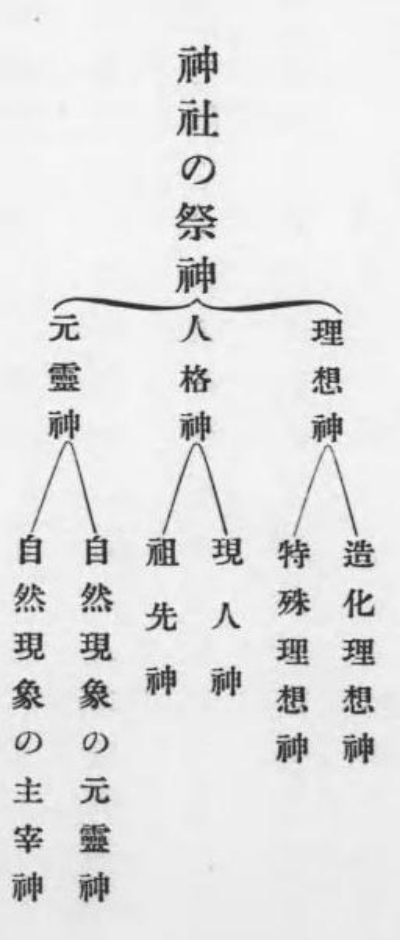

人にはそれぞれ長所も短所もある。そこで社会生活を営んで互いの長所と短所を補い合い、社会の進歩と発展を実現できるのである。したがって、人が社会の中で自分の長所を発揮することは、私たちの社会に対する本来の務めであると同時に、自分の理想を実現する道でもある。もしこれに反して、書に巧みでない人が書家になろうとし、絵の下手な人が画家になろうとするようなことがあれば、生涯努力しても、外に向かって社会に貢献することができず、自分自身の理想を実現することもできない。ついには器量の小さい平凡な人間となり、むなしく馬屋の中で何も成さずに死んでしまうことになるだろう。
国家についても同様である。国民がその長所を発揮すれば、国の運命を発展へ導き、国の栄光を輝かせ、世界の人類の文化に貢献し、国民の理想を実現できるだろう。反対に、その長所に背けば、おのずから衰亡を免れないのである。
これを今のわが国について見ると、わが国民が学芸・美術・商工業において明治維新以来大きな進歩を遂げたことには、世界に誇るに足りるものがある。しかし、欧米人のそれと比べてはるかに見劣りすることは、言うまでもない。また、わが国民は身長や体重で著しく彼らに劣り、そのため精神的・肉体的な力にも隔たりがあることは避けられない。わが国民のうち欧米へ赴く人には、こうした点を見て、自らを劣等の国民だと感じる人が少なくない。
果たして私たちは劣等の国民なのか。私たち国民には何の長所もないのか。
そもそも人間の生活において最も重要なのは、堅実な国家である。国家が堅実でなければ、どれほど学芸・美術・商工業に秀でていても、それらもついには何の価値も持たなくなるだろう。ギリシアやローマの文化は、このことを十分に証明しているではないか。わが国民の長所は、実に、この重要な国家の建設にある。すなわち、神社を敬うこと、祖先を崇拝すること、君主への忠義と愛国、家族主義などの美徳を有機的に結びつけ、アレクサンドロスの王国の勢力をもってしても、ローマ大帝国の富強をもってしても、ついに建設できなかった、万世一系の皇統をいただく、欠け損なわれることのない帝国を築いた点にある。これは、わが国民の大きな長所ではないか。私たち国民がこの点を十分に発揮すれば、世界の人類の文化に貢献し、国民の理想を実現できるだろう。
こうしたわが国の建国の美徳の中心となるのは、実に神社を敬うことである。ところが今、極端で偏りの激しい思想が盛んに行われ、神社を敬う思想を根底から破壊し、建国の精神を麻痺させ、わが国民の長所を消し去ろうとする者が現れている。このまま行き着くところもなく進むなら、わが栄光ある国家も、ついには欧米諸国に及ばず、何の長所もない劣等国とならずには済まないだろう。どうして私たちがこれに耐えられようか。
このような極端で偏りの激しい思想が起こる原因は、少なくないだろう。しかし、その大きな原因の一つは、彼らの頭脳を支配する認識がマルクス流の物質万能主義であり、わが国の輝かしい歴史などは、ほとんど頭の片隅にも存在せず、まして神社の成立や神社と国民との関係、要するに神社そのものに関する認識などは全く欠けているためにほかならない。
わが国の若い世代の中に、このような人々が現れている。世の人々を教え導く任にある者は、深く反省しなければならない。
私は生来才に乏しいが、あえて自分の力を顧みず学界に身を投じ、明治43年10月に拙著『神道本義』を公刊して、わが思想界の発展にいささか貢献しようとした。そして、別に『神社本義』を公にする志も持っていたが、ほかの著書に取り組んでいたため、ついに今日まで延びてしまった。今や世の中の趨勢が私を刺激し、不備のある本書をも公にせずにはいられなくさせている。
本書はもとよりささやかな小冊子であり、神社の本義を十分に説き尽くしたとは言えないことが心残りである。そこで私は、いずれ機会を得て、さらに自らを励まし、増補修正を加えたいと思っている。広く識者の皆さまに、どうかご教示を賜りたい。
一、本書は、神社の由来や本質などを明らかにすることを主な目的としたものである。
一、本書は口語体を用い、文章を平易にし、なるべく冗長さを避けながら、しかも敬虔な態度を失わないように努めた。そのため、「である」「であります」などが統一されていないことを残念に思う。
一、本書は、印刷や製本の体裁に不十分な点が少なくない。内容の面でも、著者が以前に雑誌などへ掲載した材料を用いたところがあるため、前後で重複したり、挙げるべきものを漏らしたり、掲げる必要のないものを入れたりして、不完全な点が多いように感じられる。著者として申し訳なく思うところである。
一、要するに本書は、才の乏しい著者が学問に追われて忙しい中で書いたものであるから、文字の取り違えなど、多くの欠陥があるのではないかと心配している。読者諸君の寛大なお許しを、切に願ってやまない。
原目次の参照先：原刊1–20頁。原目次が指示する原刊本文頁。本文段落IDへの推測リンクは作らない。
第一節 神社の研究 1頁
神社の興隆―十一万余りの神社―学校の設立―欧米文化の模倣
原目次の参照先：原刊1頁。原目次が指示する原刊本文頁。本文段落IDへの推測リンクは作らない。
第二節 物質文明と国民精神 5頁
神学部―国運発展の基調―奉天の宮城の壮観―古代の文明国―ロシアの提供
原目次の参照先：原刊5頁。原目次が指示する原刊本文頁。本文段落IDへの推測リンクは作らない。
第三節 現代教育の欠陥 11頁
維新後の教育―修身科の教員となる専門の権威者をどう養成するか―維新の大事業の原因―学校教育の目的―身体教育―極端で偏りの激しい言動の原因
原目次の参照先：原刊11頁。原目次が指示する原刊本文頁。本文段落IDへの推測リンクは作らない。
原目次の参照先：原刊17頁。原目次が指示する原刊本文頁。本文段落IDへの推測リンクは作らない。 ・
本文の続き →
現代教育と道徳教育―神社は西洋にはない―国民精神の振興
原目次の参照先：原刊21–35頁。原目次が指示する原刊本文頁。本文段落IDへの推測リンクは作らない。
第一節 神社の語義 21頁
屋代―三諸山―森と室―神奈備―神社と三諸
原目次の参照先：原刊21頁。原目次が指示する原刊本文頁。本文段落IDへの推測リンクは作らない。
第二節 神籬・磐境 25頁
「ヒモロキ」―瑞籬―宝倉―上古の神社―三諸山に宮殿があったという説
原目次の参照先：原刊25頁。原目次が指示する原刊本文頁。本文段落IDへの推測リンクは作らない。
第三節 屋代の種類 29頁
賢木―厨子―神社の「社」―社稷―神社は中国から伝来したものではない―宮―神宮と皇居―屋代と宮は後世に区別がなくなる
原目次の参照先：原刊29頁。原目次が指示する原刊本文頁。本文段落IDへの推測リンクは作らない。
原目次の参照先：原刊36–82頁。原目次が指示する原刊本文頁。本文段落IDへの推測リンクは作らない。
第一節 古代の神社 36頁
皇祖である天の神―神祇奉典―神と人が同居することを不安に思われる―崇神天皇―景行天皇―神功皇后―朝鮮遠征と神社創建―官幣大社宗像神社
原目次の参照先：原刊36頁。原目次が指示する原刊本文頁。本文段落IDへの推測リンクは作らない。
第二節 儒教の伝来と神社 41頁
天を祭る思想―儒教の貢献
原目次の参照先：原刊41頁。原目次が指示する原刊本文頁。本文段落IDへの推測リンクは作らない。
第三節 仏教の伝来と神社 43頁
中臣・物部両氏と蘇我氏との争い―仏教を奉じる側の勝利―神祇崇敬についての詔―神仏習合
原目次の参照先：原刊43頁。原目次が指示する原刊本文頁。本文段落IDへの推測リンクは作らない。
第四節 神社と仏教の合致 47頁
国家の鎮護―仏教の普及と神社の隆盛―「大宝令律」―『延喜式』
原目次の参照先：原刊47頁。原目次が指示する原刊本文頁。本文段落IDへの推測リンクは作らない。
第五節 二十二社の崇敬 49頁
二十二社の崇敬―平野神社―稲荷神社―北野神社―迷信的な崇拝
原目次の参照先：原刊49頁。原目次が指示する原刊本文頁。本文段落IDへの推測リンクは作らない。
第六節 武家時代の神社崇敬 54頁
平家と厳島神社―頼朝の神への敬意―貞永式目―弘安の役と神社崇
原目次の参照先：原刊54頁。原目次が指示する原刊本文頁。本文段落IDへの推測リンクは作らない。 ・
本文の続き →
敬―南北朝時代―足利時代―徳川氏の敬神崇祖―東照大権現―神道家の輩出
第七節 維新後の神社と神道 58頁
王政復古と神祇崇敬―氷川神社―祭政一致の道―神祇官―神仏習合の厳禁―教部省―大教院―大教院の廃止―神道事務局―神社局と宗教局の分離
原目次の参照先：原刊58頁。原目次が指示する原刊本文頁。本文段落IDへの推測リンクは作らない。
第八節 現在の神社 64頁
神社の再興と創立―社格―大神宮―官社の表―民社―神官または神職―神宮の官制
原目次の参照先：原刊64頁。原目次が指示する原刊本文頁。本文段落IDへの推測リンクは作らない。
原目次の参照先：原刊83–144頁。原目次が指示する原刊本文頁。本文段落IDへの推測リンクは作らない。
第一節 神霊 83頁
祭神―和と荒―荒魂―和魂―魂と心理学―幸魂―奇魂
原目次の参照先：原刊83頁。原目次が指示する原刊本文頁。本文段落IDへの推測リンクは作らない。
第二節 一神多社 88頁
天照大神の荒魂―国民の理想と、一つの神を複数の社に祭ること―祭神の生前の功業と欠点―西洋の神と日本の神との比較―社格が生じる原因―荒魂または和魂だけを祭る神社
原目次の参照先：原刊88頁。原目次が指示する原刊本文頁。本文段落IDへの推測リンクは作らない。
第三節 祭神の分類 95頁
祭神の種類―理想神―天御中主神―高皇産霊神―神皇産霊神―世界の発展を表す理想神―神々の七代―特殊な理想神―四大人と神社―人格神―伊弉諾・伊弉冉の二柱の現人神―三貴子と現人神―明御神―神代と人の代―国民の神―祖先神―天皇を祭神とする神社―国家の発展と皇運を助けることに貢献された祖先―根本の恩に報い、始まりを振り返ること―功臣を神社に祭る―仏教者と神社の祭神―厳密な意味での氏神―元霊神―自然現象を主宰する神―動物崇拝―民間信仰の変遷
原目次の参照先：原刊95頁。原目次が指示する原刊本文頁。本文段落IDへの推測リンクは作らない。
第四節 祭神と祖先崇敬 114頁
祭神と祖先神―造化三神―藤原氏の氏神
原目次の参照先：原刊114頁。原目次が指示する原刊本文頁。本文段落IDへの推測リンクは作らない。
第五節 欧米思想と祖先崇敬 123頁
神社崇敬と哲学・科学との関係―宗教の滅亡―西洋諸国に祖先
原目次の参照先：原刊123頁。原目次が指示する原刊本文頁。本文段落IDへの推測リンクは作らない。 ・
本文の続き →
崇敬がない理由―国家の興亡―家系についての思想―女性に求める道徳の厳格さ―民族の戦争―個人主義の発達―キリスト教の影響―生存競争の激烈さ―公立育児院
第六節 神社崇敬と国民の規範 133頁
国民の行動の規範―心の中の規範―家族主義と建国の根底―家族と自己の調和―神社崇敬と祖先崇拝は切り離せない
原目次の参照先：原刊133頁。原目次が指示する原刊本文頁。本文段落IDへの推測リンクは作らない。
原目次の参照先：原刊145–165頁。原目次が指示する原刊本文頁。本文段落IDへの推測リンクは作らない。
第一節 神社の制度 145頁
神社は宗教ではない―神社は国家の中心となる祭祀―神社崇敬の本来の趣旨
原目次の参照先：原刊145頁。原目次が指示する原刊本文頁。本文段落IDへの推測リンクは作らない。
第二節 上代の人々の生活 148頁
四十万年前の人類―自然現象の崇拝―宗教的生活―自然崇拝―トーテミズム―精霊崇拝―庶物崇拝―祖先崇拝―タブー―まじない―占い
原目次の参照先：原刊148頁。原目次が指示する原刊本文頁。本文段落IDへの推測リンクは作らない。
第三節 民族生活の原理 155頁
生活の原理―玉垣に囲まれた内なる国―神道
原目次の参照先：原刊155頁。原目次が指示する原刊本文頁。本文段落IDへの推測リンクは作らない。
第四節 国民生活の発展と神社 157頁
国家と臣民―神社の特質―神社の宗教的発達―十三派神道―神社の道徳的発達―まごころ―神社を宗教と見ることはどうか―文化の発展―神社と宗教はそれぞれの主要な点によって区別せよ
原目次の参照先：原刊157頁。原目次が指示する原刊本文頁。本文段落IDへの推測リンクは作らない。
原目次の参照先：原刊166–185頁。原目次が指示する原刊本文頁。本文段落IDへの推測リンクは作らない。
第一節 祭政一致 166頁
古代宗教の遺物―大祓詞―皇位が永遠に続くこと―祭政一致―奉仕
原目次の参照先：原刊166頁。原目次が指示する原刊本文頁。本文段落IDへの推測リンクは作らない。
原目次の参照先：原刊171頁。原目次が指示する原刊本文頁。本文段落IDへの推測リンクは作らない。
第三節 憲法と神社 176頁
帝国憲法―天皇の即位の大礼―報告祭
原目次の参照先：原刊176頁。原目次が指示する原刊本文頁。本文段落IDへの推測リンクは作らない。
第四節 神祇を扱う官庁 179頁
国家の政治―神祇に関する独立した官庁―神社と国体の関係
原目次の参照先：原刊179頁。原目次が指示する原刊本文頁。本文段落IDへの推測リンクは作らない。
原目次の参照先：原刊186–254頁。原目次が指示する原刊本文頁。本文段落IDへの推測リンクは作らない。
第一節 宗教の一般的な概念と神社 186頁
神社と宗教の問題―神社と宗教に関する水掛け論―宗教と開祖―宗教と経典―宗教と教団の規則―宗教と未来―禊祓―大祓
原目次の参照先：原刊186頁。原目次が指示する原刊本文頁。本文段落IDへの推測リンクは作らない。
第二節 神社と祈祷 194頁
祈祷―祈祷の種類―祈祷と宗教―祈祷と宗教には本質的な関係はない―戦勝の祈祷―祈年祭―神符
原目次の参照先：原刊194頁。原目次が指示する原刊本文頁。本文段落IDへの推測リンクは作らない。
第三節 宗教の世界的および排他的な性質 211頁
宗教は世界的、神社は国家的―限りない衆生を救うと誓う―宗教は排他的、神社は包括的―神社崇敬と宗教は矛盾しない
原目次の参照先：原刊211頁。原目次が指示する原刊本文頁。本文段落IDへの推測リンクは作らない。
第四節 神社と宗教の問題の根本的な解決 218頁
宗教の定義―神と人―国民と神社―神社を宗教と考える自由―偉大な宗教
原目次の参照先：原刊218頁。原目次が指示する原刊本文頁。本文段落IDへの推測リンクは作らない。
第五節 神職と葬儀 229頁
神職が葬儀に関わることはどうか―儀式と宗教―葬式と演説―葬儀と神道
原目次の参照先：原刊229頁。原目次が指示する原刊本文頁。本文段落IDへの推測リンクは作らない。
第六節 神社と迷信 234頁
宗教の未発達なもの―迷信とは何か―迷信と正しい信仰
原目次の参照先：原刊234頁。原目次が指示する原刊本文頁。本文段落IDへの推測リンクは作らない。
第七節 神社は国民生活の中心 240頁
神を敬い祖先を尊ぶことは国民生活の根底―国民生活の中心―天を中心とする―天皇陛下は最も上にあり最も高い―神社と国体は切り離してはならない―神社と記念館
原目次の参照先：原刊240頁。原目次が指示する原刊本文頁。本文段落IDへの推測リンクは作らない。
第八節 宗教の将来と神社 249頁
文明宗教と自然宗教―宗教の進化―神社は低級な宗教ではない―仏教の改造―キリスト教の改造―日本国民の天職
原目次の参照先：原刊249頁。原目次が指示する原刊本文頁。本文段落IDへの推測リンクは作らない。
原目次の参照先：原刊255–334頁。原目次が指示する原刊本文頁。本文段落IDへの推測リンクは作らない。
第一節 維新の大事業 255頁
神社と道徳の関係―国家の使命―大政維新―昔からの悪習―
原目次の参照先：原刊255頁。原目次が指示する原刊本文頁。本文段落IDへの推測リンクは作らない。 ・
本文の続き →
外国思想の謳歌―憲法の公布―教育勅語の発布―憲法の大義と勅語の趣旨―天皇の趣旨を身に体して行うことと敬神崇祖―憲法と勅語を徹底させることと祖先崇敬
第二節 神道の本義 263頁
神道―憲法や教育勅語を徹底させるには皇祖皇宗を崇敬しなければならない―氏神と氏子―氏神は皇祖皇宗ではないがどうか―祖先を野蛮人と見て神社崇敬に反対する説を退ける―神社と英雄崇拝
原目次の参照先：原刊263頁。原目次が指示する原刊本文頁。本文段落IDへの推測リンクは作らない。
第三節 神社と寺院 274頁
祖先崇敬を寺院で行うことはどうか―本地垂迹―キリスト教の禁制
原目次の参照先：原刊274頁。原目次が指示する原刊本文頁。本文段落IDへの推測リンクは作らない。
第四節 神社崇敬と、忠と孝が一つであること 279頁
忠と孝が一つであり、忠君と愛国が一致することの根底―身体・髪・皮膚―大いなる忠と大いなる孝―欧米人には祖先が明確でない―欧米人の祖先―神社は国民の光栄
原目次の参照先：原刊279頁。原目次が指示する原刊本文頁。本文段落IDへの推測リンクは作らない。
第五節 神社と国民道徳 292頁
神社の道徳的な本質と、根本の恩に報い始まりを振り返ること―礼の源―孝の道の根本―家を愛する心から国を愛する心へ―神聖な場所―愛国心―国家を愛する前提―正直の徳―国民精神―秩序と統一―皇室と神社は切り離せないという説―神社を中心とすること―未来の観念―恩寵―祭典―共同して一致する精神―よく笑う国民―機敏な国民―発展・膨張の精神
原目次の参照先：原刊292頁。原目次が指示する原刊本文頁。本文段落IDへの推測リンクは作らない。
第六節 小学校児童の神社参拝 326頁
宣教師の質問―社会の平穏と秩序、そして神社―臣民の義務―神社と仏教―仏教者の神社崇敬
原目次の参照先：原刊326頁。原目次が指示する原刊本文頁。本文段落IDへの推測リンクは作らない。
原目次の参照先：原刊335–352頁。原目次が指示する原刊本文頁。本文段落IDへの推測リンクは作らない。
第一節 人間の進化 335頁
アメリカの学校―平等の世界と区別のある世界―現象と真理が妨げ合わず通じ合うこと―朝日新聞社と神社崇敬―国民の潜在意識
原目次の参照先：原刊335頁。原目次が指示する原刊本文頁。本文段落IDへの推測リンクは作らない。
第二節 明治神宮と潜在意識 345頁
元旦の参拝者―浅草の観世音
原目次の参照先：原刊345頁。原目次が指示する原刊本文頁。本文段落IDへの推測リンクは作らない。
原目次の参照先：原刊347頁。原目次が指示する原刊本文頁。本文段落IDへの推測リンクは作らない。 ・
本文の続き →
堅固で欠けたところのない帝国―神社崇敬の徹底―『欧人の見たる神道』―日本国民の使命
［冒頭判読不能］正の御代になると、大きな神社が数多く創立されました。今、主なものを挙げるだけでも、官幣大社には、橿原神宮、吉野神宮、平安神宮、札幌神社、台湾神社、樺太神社、明治神宮、朝鮮神宮などがあります。官幣中社には、白峰宮、鎌倉宮、井伊谷宮、金崎宮、八代宮などがあります。また別格官幣社になると、湊川神社、建勲神社、靖国神社など十数社に上っています。そのほか、乃木将軍を祭る乃木神社があり、弘安の役で亡くなった忠義の人々の霊を祭ろうとする護国神社も、今まさに福岡に建設されようとしています。こうして現在、わが国の神社は全国で十一万余りに達しているのです。建国の当初からこれほど多数の神社が全国に存在するだけでなく、新たな領土であれ租借地であれ、およそわが民族が進出する所には、必ず多くの神社が建てられています。これはまさに、神社がわが国民の生活に特に重要な関係を持つことを十分に示しているではありませんか。それなのに今日、神社と宗教、あるいは道徳などとの関係をめぐる問題がなかなか解決しないのは、従来、神社の研究があまり深く行われていないからなのです。
今日、世界の文明諸国の様子を見ると、学術研究の盛んなことは、まさにかつてないほどの壮観を呈しています。わが国も維新以来、盛んに欧米の文明を取り入れ、大いに学術研究を行い、いわゆる欧米の先進国……先進国と言うと語弊がありますが……その先進国に遅れを取らないように努めています。そのため全国に多くの学校が設けられ、とりわけ学問の奥深いところを究めるために、東京、京都、東北、北海道、九州、朝鮮などに帝国大学があり、台湾にも近く開校されようとしています。しかも、これらの大学で研究されているのは、医学、理学、工学、農学といったもので、多くはいわゆる物質的な方面の研究です。この種の研究は欧米各国では数百年前から盛んに行われており、その発達と進歩には、悲しいことにわが国などではとうてい及ばないものがあります。ですから、わが国の学者は、たいてい欧米人の研究の、悪く言えば残りかすをなめているようなもので、よく言ってもそれを模倣しているという状態です。そのため、これらをわが国独自の研究と言うわけにはいきません。それにもかかわらず、わが国ではそうした方面の研究が重んじられ、各地の帝国大学や官公立の大学・専門学校などでも、ほとんどが欧米各国にある先ほどのような科学、工芸、政治、法律などを研究しています。わが国固有の神社や、神ながらの大道の研究を主とする大学や大学の部門は、ほとんど存在しないのです。もちろん、伊勢には神宮皇学館があり、東京には国学院大学があります。けれども、全国に六、七の帝国大学があり、十余りの官公立大学がありながら、皇学館や国学院のような官公立大学が一つもないというのは、学問の一面への偏りも甚だしいと言わなければなりません。
西洋の大学の組織を見ると、多くの総合大学には神学部というものがあり、医学部や法学部などと対等な地位に置かれて、盛んに神学の研究をしています。欧米人が日本に来てさえ、青山学院や立教大学といった、神学を専門とするための堂々たる大学校を建てるのを見ても、彼らの考え方は理解できるでしょう。ところが、わが国民は盛んに欧米の大学などを模倣しながら、その模倣は物質的な方面ばかりを重んじ、彼らが精神的な方面の高等教育をどれほど重要視しているかに気づかないのは、実に不思議です。もちろん著者は、決して彼らの神学を模倣せよと言うのではありません。私たち日本国民は欧米文明の模倣ばかりせず、少なくとも各帝国大学に日本固有の神学を研究する一学部を置くか、あるいはそのために東京商科大学ほどの単科大学を設立したら、確かにわが国の学問の独立と、時代の弊害を救うことに大きな効果があると考えられます。研究材料が少ないとか、学生が集まらないとか、取り越し苦労をする人があるかもしれません。しかし、わが国固有の神学は、すでに長い間、神・儒・仏と並び称されて儒教・仏教に対抗する地位を占め、また国学と呼ばれて、徳川時代の学界を三分する勢いを持っていました。国民が真に省みるならば、今日の学界でも十分に重要な地位を占めることができるのです。
そもそも、社会の発達、国家の繁栄、国運の発展といったことは、物質文明によるのか、それとも精神文明によるのか、まずこれを考えてみなければならない。もちろん、それが科学、工芸、軍隊の組織、兵器の研究といったものに関係することは言うまでもありませんが、その根本や基調となるものは、どうしても精神的な方面なのです。著者はかつて奉天へ行き、昔の清国皇帝の宮城を見ました。なかなか立派なものでした。また、かつて朝鮮にも行き、そこで新羅の古都、百済の旧都、それから李朝の時代の宮城も見てきました。それらの構えは実に壮大で、いっそう当時の繁栄を思い起こさせるものがあります。特に李朝の宮城などは、その広大で立派なことに実に驚かされます。庭園も大変広く、坂や山や水の流れもあって、夏だったとはいえ、見学のために実にひどく疲労を感じたほどでした。そうした広大な王城の中に立派な宮殿や庭園を造った当時の朝鮮や中国の文化は、ずいぶん進んでいたのです。わが国などが昔の朝鮮や中国から盛んに工芸、美術などを取り入れたのは、ちょうど今日、西洋の学問を盛んに取り入れるのと同じことでした。ところが、そのように壮麗な宮殿を建て、広大な庭園を設けていた古代の新羅や百済、その他、満洲・朝鮮で繁栄を極めていた国々は、今日、いったいどうなっているでしょうか。かつてこれほど美術・工芸に進んでいたいわゆる文明国は、今では国としてほとんど跡形もなくなっているではありませんか。ここに思いを向けてみると、いかに美術、工芸、その他の物質科学が進歩しても、また、いかに耆婆や扁鵲のような人物が現れて、医学や衛生学のようなものが発達して国民の体を丈夫にしても、国民精神が顧みられなければ、国運の発展や国家の繁栄などは、とうてい望めないことが分かります。ですから、どうしてもわが国の将来の発展と繁栄を図ろうとするには、物質的な科学や工芸の研究も必要だが、それと同時に、さらに重要なのは精神的な方面の研究である。国民精神の弱いロシアが、莫大な犠牲を払い、多額の費用を投じて新式の軍艦を造り、大連のような港湾を修築し、満洲鉄道を敷設したことなどは、まるで戦勝国に提供するために、こうした事業を行ったかのように見えるではありませんか。
個人でも、どれほど学問ができ、どれほど体が強くても、精神が健全でなければ、かえってその学問やその体のために身を滅ぼすことがあります。それと同じように、国家もまた国民精神が健全でなければ、これまで述べてきたような悲しむべき結果を招くのです。
ところが維新後、非常に激しい勢いで西洋の物質文明が輸入され、学校教育でも英語や数学などが盛んに教えられ、修身科などはまったく設けられませんでした。後になってようやくそのよくないことに気づき、小学校に修身科を設けたのですが、それも諸学科の最後に置いただけでした。しかし、次第に国民の自覚が進むにつれて、今日ではかなり修身科を重んじるようになってきたのです。
けれども現に、修身科の教員養成の中心であるべき、わが国最高の学府である帝国大学でも、医学部や工学部などには多額の費用を投じ、規模でも設備でも他学部がとても及ばないものがあります。それなのに、精神的な方面を扱う文学部などは、医学部などの一分科にも及ばないようです。その文学部も内容の半分以上が外国文学や外国の学問などになっていて、わが国民道徳の根本である神社学や神道学といったものは、わずかに東京帝国大学に神道講座があるほか、ほとんど見るべきものがありません。
中古以来千年以上にわたり、神道・儒教・仏教の三教は、実にわが国の文化の中枢となってきました。特に「大日本は神国である」という言葉は、どれほど国家についての観念を高め、国民道徳を発揮させてきたことでしょうか。維新の大事業も、まったくこのような精神教育の結果なのです。そもそも国民は、何によってその精神教育を受けたのでしょうか。中古の神道家、北畠親房卿の『神皇正統記』を読んでごらんなさい。近古の神道家、度会延佳の『陽復記』をごらんなさい。山崎闇斎の、孔子や孟子が攻め寄せてくるという話を考えてごらんなさい。そのほか徳川光圀、山鹿素行、本居宣長、平田篤胤など、多くの学者の著書をごらんなさい。国民道徳の原理が生き生きと働いていて、大いに理解が進むことでしょう。
いったい、今日の高等学校教育は、明文で国民道徳の充実を図ることを目的としています。この目的は、どうすれば十分に実現されるでしょうか。帝国大学は、国家についての観念を養うことを目的としています。この目的は、どうすれば実現されるでしょうか。
人は一般に、自分の学ぶことに偏り、自分の仕事とすることに偏るものです。少年時代から主として西洋の学問を教えると、その意識の内容が西洋的なものから成り立つので、自然に西洋崇拝になるのです。論より証拠、今日、西洋化している人々が少年・青年時代に家庭や学校などで受けた教育を調べてごらんなさい。しかし、この真理は一般に成り立つので、もし少年時代からわが国の国家や国体に関する教育を徹底すれば、国民道徳の充実も、国家についての観念を養うことも、おのずとできてくるのです。
したがって今日の急務は、世の少年や青年に、わが国民の思想に関する道徳教育・国民教育を徹底することです。そのためには、そうした教育を担う教育者を養成することが先決です。もちろん、その教育者の素養としては、心理学も、倫理学も、哲学も、宗教学も、その他のこの種の学問も必要です。しかし、これまで繰り返し述べたように、わが国民道徳やわが国固有の思想、とりわけわが国の神社に関する正しい理解を持たせ、揺るぎない観念を抱かせることが大切なのです。
こうして初めて、高等学校や大学の教育目的を十分に実現できると思われます。
いくら医科だから、工科だからといって、医学や工学だけを教えていては、国民道徳や国家についての観念は十分に徹底しないだろうと思われます。
要するに、今日の社会は国民の身体教育を奨励し、対校試合だ、野球大会だ、青年競技大会だと、さまざまな体育の練習の機会を作っています。そのため女性でも、高跳びや幅跳びで、ひげを生やした男子を後ろで目を見張らせるほどの人がいるのです。また、知識の教育もかなり進んでおり、今日の少年や青年は、議論も弁論も実に上手です。知識があり、体も強い。しかし惜しいことに、道徳教育がそれに伴っていません。今日の青年に、極端な行動や奇矯で激しい言論がしばしば見られるのも、当然と言うべきではないでしょうか。知識教育と身体教育は、今日すでにかなり発達してきました。現代に欠けているのは、まさに道徳教育、わが国固有の精神教育なのです。
以上に述べたように、現代教育の欠陥は道徳教育にあり、その道徳教育の欠陥は、神社の研究など、国民道徳に関する研究が不十分なことにあります。
もともと医学や衛生学、その他の科学、工芸といったものは、ずっと以前から西洋で研究されているのですから、西洋に少し留学してくれば、大抵のことは分かってくるのである。しかし神社の研究というものは、西洋にいくら留学しても駄目である。それは神社というものが西洋にはないからである。どうしてもわが国固有のものなのだから、わが国民は国内で十分にこれを研究しなければならないのである。ところが今日では、皆、西洋へ留学しなければならないかのように考えている。文部省からは毎年盛んに留学生を派遣して、工芸、化学、政治、法律などを研究させています。そのため、どうしても神社のような方面の研究はおろそかになりがちです。また実際、神社の研究は非常に難しい。どうしても今日、十分に徹底してこれを研究しなければならない。私はこう思うのです。このような次第で、神社の研究が非常に必要なのです。
特に、あの大震災の後に国民精神作興の詔書が下され、国民精神を奮い立たせることが至る所で叫ばれています。国民精神を奮い立たせるには、神々を敬い祖先を尊ぶということが広まらなければなりません。そして、それを広く国民に徹底するためには、神社の本来の意義を国民に徹底して理解させなければなりません。神々を敬い祖先を尊べと、いくら口で言ってもできるものではないのです。どういう理由で神々を敬い祖先を尊ぶのか、その根拠はどこにあるのかということを、まず明らかにする必要があるのです。
このように、神社の研究は、さまざまな方面から見て、今まさに急いで取り組むべき課題なのです。
神社の起源を述べるに当たっては、まずその言葉の意味を明らかにする必要があります。「神社」というのは、言うまでもなく漢語であり、中国の言葉である。わが国ではこれを「ヤシロ」と言い、「屋代」と書く。この「代」については、さまざまに説明されています。ある説では、「代」という字は、つまり「所」という意味である。「苗代」といえば苗を植えてある所、「屋代」といえば屋のある所である、という説明があります。しかし、これはどうも、あまりよい説とは思われません。「屋代」の「代」は、やはり「代わり」というような意味です。つまり屋代は、あくまで屋の代わりであって、御枝代や御手代などの「代」と同じだと思われます。したがって上代に神々を祭ったのは、屋代であって、屋そのものではなかったのです。
神社の起源が屋代であるとすれば、屋の代わりとなるものは何だったのか、という問題が起こります。文献に現れた神社の最も古いものを尋ねると、それは大和の三諸山である。『古事記』『日本書紀』の二典によれば、大国主神の幸魂・奇魂が姿を現し、大和の御諸山に鎮座する旨を告げている。この「御諸」は、つまり屋代なのです。
もともと「森」と「室」は同じ言葉で、「こもり」「こもる」という語から来たと言われている。本居宣長は、「一般に牟漏というのは、単に家などと言うのとは異なり、家の中でも奥にあって、ひっそりと閉じこもった部屋で、昔は土で築き、塗りこめて寝る所である」（『古事記伝』）と説明しているが、須佐之男命の八田間大室も、そのような所だと思われます。上古に世界各地で山岳崇拝や森林崇拝が行われたことから考えても、森林は一般に荘厳なものである。今日、私たちが鎮守の森に見るように、神聖な雰囲気の漂う所である。そうした森林を神の屋代とし、御諸と呼んだのは、自然な成り行きである。『出雲国造神賀詞』には、「大穴持命、云々、自分の御子である阿遅須伎高孫根命の御魂を葛木の鴨の神奈備に鎮座させ、云々」とあって、屋代を「神奈備」と書いている。「神奈備」は、「カムノモリ」の「モリ」を縮めて「ミ」とし、さらに「ビ」に変え、「ノ」を「ナ」に変えたもので、まさしく神の森である。したがって『万葉集』では、神社のことを「モリ」と言っているのです。
このように、神社は屋代であり、屋代は御室であり、御森である。それなのに、特に大和の三諸山だけを「三諸」と呼ぶようになったのは、ちょうど「大師」という普通名詞が弘法大師だけに通用し、「権現」という言葉が東照大権現だけに用いられたのと同様です。当時は三輪の神への崇敬が最も篤く、「大神」といえばそのまま大三輪の神を意味するようになったので、神社の普通名詞である「三諸」も、当然、三輪の神だけに用いられるようになったのです。
こうして、天孫降臨の時の高皇産霊尊の命令に、「私は天津神籬と天津磐境を立て、わが孫のために祭りをしよう。お前たち天児屋命・太玉命の二神は、天津神籬を持って葦原中国に降り、やはりわが孫のために祭りをするがよい」とある。その「神籬・磐境」が神社という意味なのである。「ヒモロキ」「イハクラ」とは、別に今日のような宮殿を設けることではない。宮殿のような建物を設けず、ただ「ヒモロキ」「イハクラ」そのものに対して祭祀を行ったのである。「ヒモロキ」についてもいろいろな説があるが、「ミモリキ」という解釈がよいのではないかと思われる。つまり、橘守部の「御森樹」という説で、神の霊が鎮座する森の木立を指す名だと解釈するのが妥当だと思われます。
以上のように、神霊の屋代は御森であるが、「神籬」という文字が示すように、瑞籬、すなわち神垣も御室・御森と言うようになったと見える。この点については鈴木重胤の研究が非常に詳しい。すなわち鈴木重胤は、「『大三輪神三社鎮座次第』に、『当社には古くから宝倉がなく、ただ三つの島居（鳥居）があるだけである。奥津磐座は大物主命、中津磐座は大己貴命、辺津磐座は少彦名命』とあるように、上古以来、ただこれらの磐座があるだけで、宝倉の施設はなかったのである、云々。その磐座は、つまり磐境のことで、神の鎮座する場所である。同書に『瑞籬を造らせて祭った、云々』と、瑞籬とあって神殿とは言わないのは、その瑞籬を御室としたからである。そこで『美母呂爾都久夜多麻加岐』、つまり『御室に築く玉垣よ』と詠んでいるのは、神の御室に玉垣を築くということで、その瑞籬を立てることを言うのである、云々。したがって、先ほどの『ただ三つの鳥居があるだけである』という鳥居は、その神社に付属するものであり、上古に瑞籬と言ったのはこの御垣のことだと考えられる」と説明している（『紀伝』）。こうして彼は、垣と言う以上、宮殿の外を囲むものなのだから御室とは言いにくいようだが、神霊がその中に鎮座するので御室と言って差し支えない、としている。したがって三諸山では瑞籬を宝倉としたので、これが御室であり、神籬であり、磐境であり、上古の神社なのだと解釈している。
上代の屋代は、以上のように御森、または瑞籬で、別に宮殿を設けず、その証拠として三諸山が挙げられるが、本居宣長は、三諸山にも宮殿があったに違いないとして、次のことを根拠に挙げた。『日本書紀』の崇神天皇八年の御歌に、「三輪の殿の、云々、三輪の殿戸を」と詠まれ、「神の宮の門を開き、そして、云々」とあること。また『日本紀略』に「長保二年七月十三日、二十一社に幣帛を奉った。大神社の宝殿が鳴ったためである」とあり、『蒙童抄』に「三輪明神の社に参って、この女に会えるようにと祈り申し上げていると、その社の御戸を押し開いてお姿を現された」とあることなどである。これに対して重胤は、宝殿が鳴動したなどとあるのは幣帛殿などのことであり、あくまでも三諸山には社殿がなかったとしている。
私も重胤の説に同意したい。ただし『日本書紀』の一書には、「『私は日本国の三諸山に住みたい』と言ったので、ただちにそこに宮を造り、そこへ行って住まわせた。これが大三輪の神である」とあって、宮殿が造営されたかのように見える。しかし、これもやはり、先ほどの神籬のようなものを御屋と言ったのだと思われる。したがって『大三輪神三社鎮座次第』では、この「宮を造る」を「御室を造る」としているのです。
重胤は、神社を御室と言う場合にも、いろいろあるとしている。あるいは賢木を刺し立ててそのまま神の御室とし、あるいは神木をそのまま御室とする。また『垂仁天皇紀』には、天日槍が持ってきた神宝の中に「熊神籬一具」とあるが、それも御室であり、ちょうど仏像を納める厨子のようなもので、中がはっきり見えず隠れているので、「隈神籬」の意味でそう呼び、やはり御室とする。また五十櫛、すなわち斎串を御室と言う、としているのです。
以上のように、上代には神籬を比母呂木と言い、御森と言い、また御室と言った。あるいはこうしたものを「磯城」と言って「師木」の字を当て、石城の意味で、石で築いた垣を指した。また、こうしたものを磐境とも言い、すべてこれらを屋代としたのです。
以上のような方法で神を祭るにあたり、上代には森を神聖化し、それを磐境として祭った。あるいは一定の場所を清め、そこに磐境を設けて、神霊の鎮座する場所として祭ったのです。それに神社の「社」という字を用いた理由を説明すると、中国には「社稷」と言って、社の祭りと稷の祭りがある。稷では食物の神を祭り、社では土地を祭る。土地は穀物が生え、人が生存する所なので、大事な神である。それで、その土地の神を「社」と言うのである。中国での祭り方は、野外に壇を築き、その上に木を植え、そこで神を祭る。それが日本の「ヤシロ」に非常によく似ているだけでなく、中国ではその「シャ」というものを各地方に設け、一つの村、一つの集落を挙げて共同で祭りをする。いわゆる社を中心とすることが行われているのです。つまり、各地方で社が中心となるのである。それらの点も、日本の屋代によく似ている。しかし、日本の神社が中国から伝わってきたものだと早合点してはならない。その点は十分に考えなければならないのです。一般の人ならともかく、世間で学者と考えられるような人でさえ、日本の神社は中国から伝わったものだと時々言います。しかし、それは大きな間違いで、中国の文化が日本に入ってくるよりずっと前に、すでに日本の神社は存在していたのです。中国をまねたのではなく、自然に似たものになっているだけで、決して中国から輸入したものではないのです。
以上のように、日本の神社は上代には御森でした。したがって、新井白石が述べているとおり、『延喜式』の神名帳に載っている神社の中で、今日、所在の分からないものがあるのは、決して神社が壊れたり焼けてなくなったためではありません。初めから宮殿はなく、ただ御森があって、そこに祭場を設けて儀礼を行ったのですが、年月がたつうちにその儀礼がすたれ、その祭場もどこなのか分からなくなったのです。
このような屋代を、また「ミヤ」と言う。「ミヤ」とは「御屋」で、つまり宮なのです。そもそも日本の神には、現人神と言って、生きて活動している人を指すものがたくさんあります。それで、神代の方々はたいてい神なのです。天津神・国津神と呼ぶその神のいる所が宮です。ですから、この場合、宮はすなわち神社なのです。例えば、天皇陛下のいる所は皇居です。私たちはそれを皇居と呼ぶ。天皇陛下のいる所には、天照大神が授けた御鏡、今日では伊勢の大神宮に祭られている神鏡があったのです。それですから、神宮とは皇居であり、皇居とは神宮であったのです。崇神天皇の時になって初めて皇居と神宮は分かれましたが、もともとはそのようなわけで、宮というものと神社というものの観念が一つになっていたのです。後世にはこの観念がますます発達し、お宮とお社は同じようになっています。しかし、本来、宮とは現人神のいる所であり、例えば素盞鳴尊のいたスガノミヤ、大国主神のいたヒスノミヤというように、現人神のいた所がお宮なのです。それで今日でも、「宮」は神社のほかに、親王・王殿下などの住居をも指すのです。そして、天神その他の祖先神のいる所は屋代である。本来はこのようなわけなのです。
前に述べたように、神社の起源は神代にあり、三諸山をはじめ、高皇産霊神の命令により神籬・磐境を立て、天孫のために祭ったことにあるのです。神武天皇が畝火の橿原宮で即位すると、すぐに神籬を立てて八神を祭ったとも伝えられている。また四年二月には、天富命が物を作る諸氏族を率いて大幣を作り、天種子命が天つ罪・国つ罪をはらい、鳥見山の中に祭場を作って皇祖天神を祭った。これも、根本に報い、始まりを振り返る礼を示し、神々を敬い祖先を尊ぶ道を表したのであって、神社奉仕の一例と見てよいと思われる。神武天皇の崩御後、兄の神八井耳命は弟の神沼河耳命に、「私は兄ではあるが、気が弱く、上に立つべき者ではない。お前が天皇の位に就いて、皇祖の事業を継ぐがよい。私は補佐となって、神々への祭祀に仕えよう」（『古事記』『日本書紀』）と言って、位を弟に譲り、自らは神々を祭ることを誓った。このことからも、当時、神々への奉仕がどれほど重大なものとされていたかが分かります。
この時代には、先ほどの素戔鳴尊の須賀宮、大国主神の日隅の宮などをはじめ、歴代の皇居も宮であり、神宮のように神を祭る場所になっていた。しかし、崇神天皇の時になって、天皇の大殿の中で神々と同じ床・同じ殿に住むことを不安に思い、天照大神と草薙剣を、大和の笠縫村に磯城神籬を立てて祭った。同時に日本大国魂神を穴磯邑に祭り、そのほか大和の大神神社も祭って、神社への崇敬はますます篤くなった。次いで垂仁天皇は、天照大神を伊勢の五十鈴川のほとりに祭り、皇女の倭姫命に祭祀を仕えさせ、神社の祭祀はいっそう丁重になってきました。
景行天皇は西方の熊襲を征伐し、多くの神の助けを受けて神社の祭祀に力を尽くしたが、その後、さらに日本武尊に東夷を征伐させた。日本武尊は天皇の命令を受けて東夷を征伐するにあたり、途中で伊勢大神宮に参拝し、倭姫命から叢雲の宝剣を授かって出征した。駿河の焼津で火攻めに遭った時、この宝剣の顕著な霊験を受け、これ以来、草薙の剣と呼ぶようになった。そしてこの宝剣は、天照大神の荒魂として尾張の熱田に祭られることになった。すなわち、現在の官幣大社熱田神宮である。さらに神功皇后の時になると、建国以来の大事件である朝鮮征伐の戦いが突然起こった。皇后は、仲哀天皇が神の教えに従わず軍中で亡くなったことを畏れ、まず最初に諸臣・百官に命じて大祓を行わせ、筑前の小山田に斎宮を造った。そして皇后自身が神主となって、天神・地祇を祭った。特に天照大神と住吉の二柱の神を船に祭り、ついに朝鮮征伐の大事業を成し遂げたので、住吉大神の荒魂を長門に祭り、別に摂津にも大神の和魂を祭ったのである。前者は現在の官幣中社住吉神社で、後者は官幣大社住吉神社である。さらに天照大神の荒魂は摂津の広田に祭られた。現在の官幣大社広田神社である。同時に稚日女尊を摂津の活田に祭り、事代主神を長田に祭った。前者は官幣中社生田神社、後者は官幣中社長田神社である。神功皇后の時代に、このように多くの神社が建設され崇敬されたのは、この戦いで皇后が神のお告げを畏れ、神々を祭り、これらの神々の助けによって朝鮮征伐の大事業を成し遂げ、日本の国運の発展に大きな効果を挙げたためだろうと思われます。
これより後、住吉神社は一般の国民から崇敬され、特に海路をつかさどる神として、航海する人々の熱心な崇敬を得たのです。また中古以後は、和歌の神として崇敬されるようになりました。なお朝鮮征伐に現れた神には、筑前の宗像神があります。これは天照大神と素戔鳴尊の誓約によって生まれた田心姫命・湍津姫命・市杵島姫命の三神です。朝鮮征伐の際に顕著な神の助けがあったので、住吉神社とともに広く篤い崇敬を受けるようになったのです。
以上に述べたように、多くの神社が創建され、国民の、神を敬い祖先を尊ぶ信念はますます強固になってきたが、この時代に儒教が伝来した。すでに述べたように、中国では社稷の神を祭り、鬼神を祭り、特に天を重んじて祭る。天を祭ることは天子の特権のようになっていたが、社稷や鬼神は一般に祭られている。しかし儒教のこうした崇敬は、来世を目指すものではなく現世的であり、その崇敬の方法も日本の神社崇敬に似ている。そればかりでなく、儒教の教義では、禅譲や武力による君主の追放という思想ははなはだ不都合ではあるものの、普遍的な忠・孝・仁・義の思想は、日本の神祇道と非常に近いものがある。そのため儒教の伝来は、むしろ神社の発達に貢献するところがあったと言って差し支えないのです。したがって、儒教の伝来にもかかわらず神社はますます発達し、雄略天皇四年には葛城に一言主神が現れ、同じく二十二年七月には豊受大神宮が伊勢の山田原に祭られた、といったことがあったのです。
欽明天皇十三年には、百済王が仏像や経典・論書を奉り、ここに仏教が公に日本へ伝えられた。すでに神社崇敬が国民に徹底していたので、神社崇敬と矛盾するような、仏をあがめる考えは、容易には国民の中に生じなかった。特に神社への奉仕を職務とする中臣氏や、武士道の実践を自任する物部氏などは、強くこれに反対した。しかし蘇我氏は当時、外交方面に関係し、秦氏・漢氏の記録担当者や職人を統率して、自らも外来文明を好み、急進的な傾向があった。そのため政治上の勢力争いも加わって大きな衝突が起こり、ついに仏教を奉じる側が勝利して、仏教は破竹の勢いで広まるようになったのです。そこで推古天皇十二年四月、聖徳太子は摂政として十七条憲法を作り、「篤く三宝を敬え」と定めた。しかし、神社崇敬の観念が国民に徹底していたので、仏教は当時の進歩的な政治家には採用されたものの、一般民衆の間ではうまく広まらなかったように見えます。そこで太子も、国民を治めるうえで、神を敬い祖先を尊ぶことを十分に行わなければならないと自覚したようで、十五年二月には摂政として神祇崇敬の大詔に関与したのです。その大詔の趣旨は、「皇祖が天下を治めたときには、篤く神々に礼を尽くしたため、天下がよく治まった。今、私の治世にあたっても、神々の祭祀を怠ってはならない。そこで諸臣は心を尽くし、神々を拝むべきである」というものです。そして、その十五日には皇太子と大臣・百官を率いて神々を祭り拝んだということです。その後も神社崇敬の詔がたびたび出され、常にその崇敬が行われたのです。しかし一方で仏教も、聖徳太子が難波に四天王大護国寺を建て、また蘇我馬子が病気になった時などには男女合わせて千人が出家する、といった具合で、その勢力はたいへん盛んでした。奈良時代になるとこの傾向は特に著しくなり、僧の行基が現れて、さらに盛んにした。行基は日本の仏教界に現れた最初の傑物で、聖武天皇の帰依を得て大僧正の位を授けられ、ついに都での大仏建立を成功させたのです。そのほか仏教は諸国に国分寺も建てられるようになって、ますます盛大になった。しかし、ともすれば原始仏教の特色を帯び、日本の神祇崇敬とは氷と炭のように相容れない傾向があった。そこで当時の僧侶は、両者の間で巧みな布教を行い、神と仏とを融合させた。あるいは宇佐八幡を奈良に迎え、八幡宮も仏を崇敬するという意味を示し、あるいは多くの神社に付属の寺院を造って神宮寺とし、神前で仏教経典を読誦させるなどのことを、平然と行うようになってきたのです。
もともと仏教は、その教義の性質から、神仏習合に最も都合よくできている。特に大乗仏教がそうである。そこで平安時代になり、天台・真言が広まるようになってからは、仏教は鎮護国家を唱え、国家を守るための読経や祈祷などを盛んにした。それと同時に、各地の神社の神々は仏教を守るものとして、比叡山延暦寺には日吉神社を建て、高野山金剛峰寺には丹生津比売神社を祭った。あるいは、すでに述べたように神社に奉仕する寺院をますます造り、いわゆる本地垂迹の考え方を完成させて、神社と寺院の区別が全くないようにしてしまったのです。したがって、仏教も国民の信仰を得て盛んになるとともに、神社も仏教者の手によって建設されることが少なくなかったのです。こうしてこの時代には神社への崇敬もいっそう盛んになり、平安京への遷都後は、平安京を中心に日吉・賀茂・松尾・平野・梅宮などの神社が盛んに崇敬された。特に男山八幡宮と祇園神社が創建され、そのほか東方では出羽の大物忌・月山などの神社、西方では先に述べた宗像・住吉などに加えて筥崎八幡宮が鎮座するなどして、神社崇敬はますます国民に浸透してきました。
特に神社の制度は、先に『大宝令律』が制定され、神祇官が確立するのとともに大いに整理されてきたが、この時代、いわゆる『延喜式』の制定によって完全に確立したのです。『延喜式』では官社が三千百三十二座、そのうち神祇官が祭る神が七百三十七座、国司が祭る神が二千三百九十五座とされていることからも、どれほど盛んだったかが分かります。朝廷はこれらの神社を特に篤く崇敬し、毎年の奉幣に加えて、神田や神戸を奉り、さらに神社に位階も授け、神事を最も重大なものとしました。
さらに、この時代に最も注目すべきなのは、二十二社への崇敬です。すでに述べたように、上代には大和の大神・大国魂などの神社が特に崇敬され、奈良時代には八幡宮への崇敬が篤かったが、この時代には特に二十二社への崇敬が目立ってきたのです。その第一は言うまでもなく伊勢大神宮で、皇室の祖先として当然のことですが、次には先に述べた石清水八幡宮があります。この宮は大安寺の僧、行教が男山に祭ったのが始まりで、もちろん『延喜式』には載っていません。しかし、祭神が皇室の祖先である応神天皇であり、また源氏の氏神でもあるといった事情から、大社として崇敬されることになったのです。その次は賀茂神社です。これも神武天皇の東征の際、八咫鳥となって天皇を導いた賀茂建角身命に関係する神を祭ったもので、平安京への遷都より前から鎮座していましたが、遷都とともに皇城の守護神、都の産土神として崇敬されたのです。その次の松尾神社は、大山咋命を祭る所であり、やはり皇城の守護神として篤く祭られていたのです。次の平野神社も、皇室の外戚を祭った宮で、平氏の氏神として著名な神社です。その次は稲荷神社で、倉稲魂神を祭ったものですが、僧の空海が東寺を教王護国寺として盛んに振興するにあたり、この神社を東寺の鎮守としたのです。そのようにして、さまざまな民間信仰に結び付けられ、特に盛んな神社となりました。それから春日神社ですが、この神社は主として天児屋命を祭っているため、皇室の外戚の氏神に当たるとともに、藤原氏の氏神として重んじられたのです。山城の大原野神社も、春日神社と同じような関係に加え、都に近いことから、篤く崇敬されました。その次は、大和に昔から建てられた大神・石上・大和・広瀬・竜田などで、それに続くのは摂津の住吉、近江の日吉、山城の梅宮・吉田、摂津の広田、山城の祇園・北野、大和の丹生川上、山城の貴船などです。こうした式内・式外の二十二社が朝廷から特に篤く崇敬されるとともに、諸国でも延喜以後、国内の主な神社に一宮・二宮・三宮などの順位を付け、篤く崇敬するようになりました。
このようにして神社崇敬は全国に広まり、武家や豪族のような勢力が起こっても、神社には篤い崇敬を払い、神田や神領には容易に手を出さないようになってきたのです。もちろん、こうした神社崇敬が一般に行われるにつれ、多くの迷信的な崇拝も行われ、正規でない神を祭る淫祠なども少なくありませんでした。しかし、こうしたことには朝廷も大いに悩み、光仁天皇や平城天皇などは詔勅を出して淫祠を禁じ、巫女や男性の巫者などが人々の心を惑わせることを禁じました。そのような注意はたびたび行われたのです。しかし、当時、この迷信と正しい信仰とを区別するのは、なかなか難しかったと思われます。
当時、神社崇敬が盛んになったので、神社の霊験にあずかろうとする動きも顕著になりました。平家が厳島の神の霊験にあずかろうと、一族を挙げて崇敬したのはその代表例で、よく知られています。しかし、健全な崇敬は源頼朝に見られます。それは、彼が鎌倉に幕府を開くと同時に、源氏の氏神で、祖先の頼義が勧請したという八幡宮を改築して大いに崇敬し、正月元日やその他の定められた日に自ら参拝し、建久五年の放生会の際には、自ら神饌を供える役を務めたことからも明らかです。
当時、頼朝が幕府で神社崇敬を行ったのに対し、朝廷でも順徳天皇が『禁秘御抄』を著し、その冒頭に「およそ宮中の作法では、神事を先にし、その他のことを後にする」と示しました。頼朝が神祇崇敬を政治の根本に据えたことは、北条家の時代にも受け継がれました。それは、泰時が貞永元年に定めたという貞永式目でも、第一条に「神社を修理し、祭祀に専念すべきこと」と規定していることから分かります。
さらに、この時代には、建国以来の大きな国難である弘安の役があった。その際には朝廷でも、伊勢大神宮をはじめ石清水・賀茂・春日などの神社に祈り、幕府でも、伊勢大神宮のほか、鶴岡八幡宮は言うまでもなく、鹿島・香取などの神社でも、心から戦勝を祈願したのです。そして、蒙古の侵入軍が神風によって全滅したということは、当時の国民に神威の顕著さを感じさせただけでなく、後世の国民にも末永く「大日本は神国である」という観念を強めたのです。
南北朝から足利時代にかけても、神を敬い祖先を尊ぶことは、依然として盛んでした。当時、石清水八幡宮・祇園・北野など各社への崇敬は、ますます盛んになりました。時代が下り、織田信長や豊臣秀吉などに至っても、神を敬う気持ちは非常に篤かったのです。特に秀吉の死後、その神霊が豊国大明神として祭られたことからも、その様子が分かります。
さらに時代が下って徳川家康が江戸幕府を開くと、彼は神社も寺院も平等に保護するという方針で、神社の神領を確定し、その収入を定め、基盤を強固にした。特に家康の死後、その霊を日光に祭り、朝廷から東照大権現の号を受け、家康を「神君」と呼ぶに至ったことからは、徳川氏が東照宮を氏神として、いかに深く崇敬したかが分かります。そのほか徳川時代には、将軍家全体の産土神として山王権現を祭り、また六代将軍家宣の産土神として根津権現を祭り、八代将軍吉宗の産土神として赤坂の氷川神社を祭って、盛んに神社崇敬を行った。この時代には、度会延佳・吉川惟足・山崎闇斎などの有力な神道家が現れたのに続き、いわゆる国学の四大人なども現れ、盛んに神々を崇敬する道を説いた。そのため維新の大事業も、その大部分はこの敬神思想に基づく勤王の精神によって行われたと言って差し支えないだろうと思います。
維新の大事業とともに、いわゆる王政復古が実現したので、朝廷は上代のように篤く神々を崇敬することに力を尽くすようになった。すなわち明治元年三月十四日には、紫宸殿に祭場を設け、天皇自ら天神・地祇を祭って、五箇条の御誓文を発したのです。同年七月には江戸を東京と改め、九月、京都を出発して東京へ赴くにあたり、まず賀茂の両社に行幸した。東行の途中、伊勢国の関の宿に着くと、遠くから大神宮を拝み、二十七日には熱田神宮に参拝した。沿道の主な神社には使いを参拝させ、十月十三日に東京へ到着したのです。そして江戸城を皇居と定め、大宮の氷川神社を勅祭社とし、同月二十八日、同社に行幸して、「神々をあがめ、祭祀を重んじることは、皇国の重要な法であり、政治と教化の基本である。しかし中世以降、政治の道はしだいに衰え、祭祀が行われなくなった。その結果、ついに規律が振るわなくなるに至った。私はこれを深く嘆く。今、この改革の時に新たに東京を置き、自らここに来て政治を見る。まず祭祀を興し、規律を立て直して、祭政一致の道を復活させようとする」と勅語を述べ、自ら祭祀を行ったのです。二年三月には伊勢神宮に自ら参拝し、そのほか皇室における神への崇敬と祭祀は、当時、最も重んじられました。したがって行政の面でも、王朝時代に盛んだった神祇官を復興し、神々に関することを管轄すると同時に、惟神の大道によって国民を教化・指導することになったのです。そのため明治二年九月には神祇官に宣教使を置き、三年正月には、惟神の大道を大いに広め、全国の人民を教化すべきだという詔勅を発したのです。
当時は、このように神を敬い祖先を尊ぶよい風習が盛んだったので、幕末の国学の復興とともにしだいに進んできた神仏分離の運動が、非常に激しくなった。そして中古以来、神仏習合が行われてきた神社にある仏教関係のものはすべて排除し、神社と寺院とを完全に区別することになった。そのようなわけで、国民の教化は、全面的に惟神の大道によって行うことになったのです。そこで明治二年九月、国民に思想を広める機関として大教院というものを設けた。当時は三百年続いた幕府が倒壊した後で人心が動揺していたため、思想を統一する機関として、かなりの効果を挙げることができた。明治四年には神祇官を廃して神祇省とし、なお宣教に従事していたが、五年三月には神祇省も廃され、さらに教部省が設けられた。教部省には教導職を置き、神官と僧侶の両方を任に就かせ、三条の教憲を作って、思想を望ましい方向へ導くための基礎としたのです。いわゆる三条の教憲とは、
第三条 天皇を戴き、朝廷の意向を守らせるべきこと。
当時、東京には大教院が、地方には中教院・小教院が設けられた。東京の大教院には芝の増上寺の本堂を充て、造化の三神と天照大神の四柱の神を祭り、神官と僧侶が席を並べて祭祀に従事するという状態だった。しかし、この制度にはさまざまな支障が起こり、明治八年四月には大教院が廃され、教導職における神仏の混在も廃止されることになった。そこで神道では神道事務局を設け、全国の神官・教導職を統一することになった。十年一月には教部省が廃され、内務省の中に社寺局を置いて、その事務を管轄することになった。十五年一月には、神官が教導職を兼ねることも廃止した。神道の宗教的な面の布教に従事する者は、別に神道教師となって宗教としての神道を布教することになり、神官は神社に奉仕して、宗教を超えた立場にあるものになったのです。なお、神社と寺院の事務は内務省の社寺局で扱っていましたが、後にさらに神社局と宗教局に分け、宗教局を文部省へ移すことになり、今日に至ったのです。
行政の面では、維新以来このような変遷があったが、神社崇敬の面はますます盛んになり、明治天皇は各地に行幸する際、主な神社に自ら参拝し、あるいは勅使に奉幣させました。それと同時に、本書の冒頭で述べたように、神社の再興や創立が相次ぎました。その主なものを挙げると、豊国神社については、明治の初め、豊臣秀吉公が乱れを治めて正しい状態に戻した功績を考え、その復興を命じ、六年八月には別格官幣社に列しました。次いで、崇徳天皇を祭る神社も京都に建てられ、淳仁天皇を合わせて祭って白峰宮とし、六年六月には官幣小社としました。また明治五年には、楠木正成公のまごころからの忠義を尊び、かねて造営中だった湊川神社が完成すると、これも別格官幣社に列しました。織田信長公が乱れを治めた功績をたたえて建勲神社として祭り、八年四月に別格官幣神社に列しました。そのほか、藤原鎌足公の談山神社、北畠親房公・顕家公を祭る阿部野神社、毛利元就公の豊栄神社、三条実万公の梨木神社、楠木正行公の四条畷神社などをはじめ、東京の靖国神社などのように、維新後に官社として設置・昇格されたものが多くあります。近年では、皇祖皇宗の神霊を祭る橿原神宮・平安神宮・明治神宮などの官幣大社も相次いで祭られ、明治・大正の神社崇敬はますます盛んになっているのです。
現在、全国の神社には、それぞれの歴史や祭神によって、社格というものが定められている。一般的な区別では、官社と民社に分かれる。官社は官幣社と国幣社に分かれ、それぞれ大・中・小の区別がある。官幣社は、一般に皇室に関係する神、または皇室から篤く崇敬された神を祭るのが普通であり、国幣社には、地方との関係が深い神々を祭ったものが多い。別格官幣社は明治五年に定められ、一般に和気清麻呂公・織田信長公・豊臣秀吉公などのように、臣下であって神として祭られるべき人々を祭神とした神社です。ここに現在の官社の表を掲げます。
原刊縦書き表の上段=社名、中段=祭神、下段=鎮座地をrow 1/2/3とし、原画像右から左へcolumnを数える。空所は架空セルを作らない。原刊当時の地名・祭神表記を保持し、訳は固有名の新字体化と同上の参照説明のみ。列1は三段の原欄名、列2は伊勢神宮の区分見出し、列5は官幣大社の区分見出し。列3・4は皇大神宮・豊受大神宮で、row3 column3の「三重縣宇治山田市」は原括弧で二列を束ねる共通セル（column3–4）である。原表の列は右から左へ、各列は上・中・下段の順です。横にスクロールして読めます。共通欄・括弧の範囲は各欄の説明に残しています。
原刊縦書き表の上段=社名、中段=祭神、下段=鎮座地をrow 1/2/3とし、原画像右から左へcolumnを数える。空所は架空セルを作らない。原刊当時の地名・祭神表記を保持し、訳は固有名の新字体化と同上の参照説明のみ。前頁から続く官幣大社の表。第1列は廣瀨神社、原画像右から左へ第15列の日吉神社まで。原表の列は右から左へ、各列は上・中・下段の順です。横にスクロールして読めます。共通欄・括弧の範囲は各欄の説明に残しています。
原刊縦書き表の上段=社名、中段=祭神、下段=鎮座地をrow 1/2/3とし、原画像右から左へcolumnを数える。空所は架空セルを作らない。原刊当時の地名・祭神表記を保持し、訳は固有名の新字体化と同上の参照説明のみ。前頁から続く官幣大社の表。第1・2列は日前神宮・國懸神宮で、row3 column1の和歌山縣海草郡宮村は原括弧によりcolumn1–2を束ねる共通セル。第15列は建部神社。原表の列は右から左へ、各列は上・中・下段の順です。横にスクロールして読めます。共通欄・括弧の範囲は各欄の説明に残しています。
原刊縦書き表の上段=社名、中段=祭神、下段=鎮座地をrow 1/2/3とし、原画像右から左へcolumnを数える。空所は架空セルを作らない。原刊当時の地名・祭神表記を保持し、訳は固有名の新字体化と同上の参照説明のみ。前頁から続く官幣大社。原画像右から左へ札幌神社から諏訪神社まで15列。原表の列は右から左へ、各列は上・中・下段の順です。横にスクロールして読めます。共通欄・括弧の範囲は各欄の説明に残しています。
原刊縦書き表の上段=社名、中段=祭神、下段=鎮座地をrow 1/2/3とし、原画像右から左へcolumnを数える。空所は架空セルを作らない。原刊当時の地名・祭神表記を保持し、訳は固有名の新字体化と同上の参照説明のみ。第1–3列（明治神宮・朝鮮神宮・丹生都比賣神社）は官幣大社の続き。第4列に原見出し「官幣中社」、第5–15列が白峰宮から北野神社までの官幣中社。原表の列は右から左へ、各列は上・中・下段の順です。横にスクロールして読めます。共通欄・括弧の範囲は各欄の説明に残しています。
原刊縦書き表の上段=社名、中段=祭神、下段=鎮座地をrow 1/2/3とし、原画像右から左へcolumnを数える。空所は架空セルを作らない。原刊当時の地名・祭神表記を保持し、訳は固有名の新字体化と同上の参照説明のみ。第1–13列（金鑽神社から御上神社）は官幣中社の続き。第14列に原見出し「官幣小社」、第15列が大國魂神社。原表の列は右から左へ、各列は上・中・下段の順です。横にスクロールして読めます。共通欄・括弧の範囲は各欄の説明に残しています。
原刊縦書き表の上段=社名、中段=祭神、下段=鎮座地をrow 1/2/3とし、原画像右から左へcolumnを数える。空所は架空セルを作らない。原刊当時の地名・祭神表記を保持し、訳は固有名の新字体化と同上の参照説明のみ。第1–3列（波上宮・竈門神社・住吉神社）は官幣小社の続き。第4列に原見出し「別格官幣社」、第5–15列が談山神社から建勳神社。原表の列は右から左へ、各列は上・中・下段の順です。横にスクロールして読めます。共通欄・括弧の範囲は各欄の説明に残しています。
原刊縦書き表の上段=社名、中段=祭神、下段=鎮座地をrow 1/2/3とし、原画像右から左へcolumnを数える。空所は架空セルを作らない。原刊当時の地名・祭神表記を保持し、訳は固有名の新字体化と同上の参照説明のみ。第1–13列（豐國神社から野田神社）は別格官幣社の続き。第14列が國幣大社の原見出し、第15列が氣多神社。原表の列は右から左へ、各列は上・中・下段の順です。横にスクロールして読めます。共通欄・括弧の範囲は各欄の説明に残しています。
原刊縦書き表の上段=社名、中段=祭神、下段=鎮座地をrow 1/2/3とし、原画像右から左へcolumnを数える。空所は架空セルを作らない。原刊当時の地名・祭神表記を保持し、訳は固有名の新字体化と同上の参照説明のみ。第1–4列（大山祇・高良・多度・熊野）は國幣大社の続き。第5列が國幣中社の原見出し、第6–15列が敢國から都々古別まで。原表の列は右から左へ、各列は上・中・下段の順です。横にスクロールして読めます。共通欄・括弧の範囲は各欄の説明に残しています。
原刊縦書き表の上段=社名、中段=祭神、下段=鎮座地をrow 1/2/3とし、原画像右から左へcolumnを数える。空所は架空セルを作らない。原刊当時の地名・祭神表記を保持し、訳は固有名の新字体化と同上の参照説明のみ。國幣中社の続き。志波彥・鹽竈の所在地（row3 column2）は原括弧によりcolumn2–3を束ねる共通セル一件。原表の列は右から左へ、各列は上・中・下段の順です。横にスクロールして読めます。共通欄・括弧の範囲は各欄の説明に残しています。
原刊縦書き表の上段=社名、中段=祭神、下段=鎮座地をrow 1/2/3とし、原画像右から左へcolumnを数える。空所は架空セルを作らない。原刊当時の地名・祭神表記を保持し、訳は固有名の新字体化と同上の参照説明のみ。國幣中社の続き。原社名欄上部の括弧がcolumn9–10の大洗磯前・酒列磯前を結ぶが、各祭神・所在地は別々の原セルとして保持。酒列所在地の「同」は茨城縣を指す。原表の列は右から左へ、各列は上・中・下段の順です。横にスクロールして読めます。共通欄・括弧の範囲は各欄の説明に残しています。
原刊縦書き表の上段=社名、中段=祭神、下段=鎮座地をrow 1/2/3とし、原画像右から左へcolumnを数える。空所は架空セルを作らない。原刊当時の地名・祭神表記を保持し、訳は固有名の新字体化と同上の参照説明のみ。第1–6列（伊和から大縣）は國幣中社の続き。第7列に國幣小社の原見出し、第8–15列が砥鹿から古四王。社名欄上部の括弧はcolumn13–14の出羽・湯殿山を結ぶ。両社の祭神・所在地は別セル。原表の列は右から左へ、各列は上・中・下段の順です。横にスクロールして読めます。共通欄・括弧の範囲は各欄の説明に残しています。
原刊縦書き表の上段=社名、中段=祭神、下段=鎮座地をrow 1/2/3とし、原画像右から左へcolumnを数える。空所は架空セルを作らない。原刊当時の地名・祭神表記を保持し、訳は固有名の新字体化と同上の参照説明のみ。國幣小社の続き。row3 column8の靜岡市宮ヶ崎町は原括弧によりcolumn8–10（神部・淺間・大歲御祖）を束ねる共通所在地セル一件。原表の列は右から左へ、各列は上・中・下段の順です。横にスクロールして読めます。共通欄・括弧の範囲は各欄の説明に残しています。
原刊縦書き表の上段=社名、中段=祭神、下段=鎮座地をrow 1/2/3とし、原画像右から左へcolumnを数える。空所は架空セルを作らない。原刊当時の地名・祭神表記を保持し、訳は固有名の新字体化と同上の参照説明のみ。國幣小社の表の末尾。column1が柞原八幡宮、column2が高瀨神社。この頁の左寄りは表でなく本文へ戻る。原表の列は右から左へ、各列は上・中・下段の順です。横にスクロールして読めます。共通欄・括弧の範囲は各欄の説明に残しています。
民社と呼ばれるものは、府県社・郷社・村社などに分かれ、多くはそれぞれの土地の氏神、または「産上神」です。このほかに無格社というものがあります。これは神社の規模が小さかったり、崇敬する人が少なかったりするもので、場合によっては他の神社に合併されたり、あるいは昇格したりすることも少なくありません。
なお、これらの神社に奉仕する神官・神職について一言すると、維新前には神官は一般に白川家・吉田家の両家に属していましたが、明治元年に神祇官が復興すると、神祇官に属することになりました。従来、別当や社僧などとして神を祭っていた者も、できるだけ僧籍を離れて神官になることになりました。しかし間もなく、官社に奉仕する者だけを神祇官が管理し、それ以外は地方官庁に属させることになりました。次いで、神社は国家の祭祀を行うもので、私有してはならないという原則のもと、神官の世襲が廃止されました。明治二十年三月には、一般の官社の「神官」という名称を廃して「神職」とし、宮司は奏任官相当、禰宜・主典は判任官相当の待遇と定めました。二十七年には、府県社以下の神職を社司・社掌とし、これも判任官相当の待遇とすることになりました。二十九年には神宮の官制を改め、祭主は天皇が親任する職とし、皇族を任じ、または公爵を任じることもできることとし、宮司は勅任官または奏任官としました。次いで、これを大宮司（勅任官）と少宮司（勅任官または奏任官）とし、現在、神宮にはこのように祭主および大宮司・少宮司・禰宜・権禰宜などが置かれています。熱田神宮・出雲大社・明治神宮などには宮司と権宮司が、一般の官社には宮司が置かれ、その下に禰宜・主典などがあります。府県社以下には社司・社掌などがいて、それぞれの神社に奉仕しているのです。
以上のように、わが国に特有の神社には、どこにも祭神というものがあります。つまり神社で祭る御霊であり、私たちが崇敬する対象です。今日の科学には、肉体を離れた霊魂のようなものの存在を認めない傾向がありますが、人類一般は、この肉体の外にある一種の神霊的な実在を認めています。わが国の古代にはこの傾向が特に著しく、人の霊魂を「御魂」として非常に重んじました。これを古典によって考えてみると、御魂は通常、荒魂と和魂の二つに分けられています。本居宣長はこの二つの魂について、次のように説明しています。「一般に『ニギ』と『アラ』を対にしていうことが多い。和多閑・荒多閑、和稲・荒稲、和海布・荒海布、毛柔物・毛粗物などがその例である。この『和』『荒』にはさまざまな意味がある。荒金・荒玉などは、物ができたままで、まだ加工や手入れをしていないものをいい、それに対して整えたものを『和某』という。また、物の粗い状態ときめ細かい状態、強い状態と柔らかい状態をいうこともある。人の家などについては、衰えることと栄えることをいい、波風が騒ぐのを『荒れる』、静まるのを『和ぐ』という。神の心なども『荒れる』『和む』という。このような使い方から、和魂・荒魂という意味がおおよそ理解できる。」（『記伝』三十）
宣長のこの説明のとおり、荒魂は精神の活動的な側面であり、常に生き生きと動き出そうとする傾向を持っています。その働きによって大きな功績を挙げることもありますが、もともと道徳的な規範に基づく働きではないため、ときには残虐で乱暴な行動に出ることもあります。
和魂はこれに対して精神の静かな側面であり、常に穏やかな状態にあって、澄んだ鏡のようなあり方をしています。和魂はさらに、幸魂と奇魂に分けられます。宣長はこれについても次のように説明しています。「幸魂と奇魂はいずれも和魂の名であり、『幸』『奇』とはその働きをいうのである。別々の二つの魂ではない。幸魂を荒魂とし、奇魂を和魂とするのは間違いである。幸魂については『私記』に『これは幸福でいられるようにする魂である』とあり、その人の身を守って幸せにすることから付いた名である。『書紀』神功の巻に、和魂は尊い御身につき従って寿命を守ろうとあるのも、この意味である。この古い記録からも、幸魂というのが和魂の働きを指すことがわかる。奇魂も、その文字が示すように、不思議な霊力によってあらゆることを知り分け、さまざまな事業を行わせることからできた名である。」（『記伝』十二）
このような荒魂・幸魂・奇魂の三つを今日の心理学に当てはめてみると、荒魂はまさに意志です。それは盲目的な働きであり、善に向かっても悪に向かっても活動します。つまり善悪の区別を超えた、まったく根源的なものなのです。
幸魂は、栄えさせ幸福にする性質を持ち、穏やかな情緒・情操というべきものです。怒りや嫉妬などを美しく高めた情操であり、また高尚な情操です。この御魂によって生活すれば、いわゆる平穏で安らかな生活がもたらされるのです。
奇魂は不思議な霊力を持つ御魂であり、知識の働きを指したものです。イギリスのベーコンは「知識は力である」といいましたが、実際、知識の働きは偉大です。今日、人類がいわゆる万物の霊長として盛んに文化的な生活を営んでいるのも、大部分は知識のおかげです。知識は、私たちがありふれたものとして考えると、何の不思議もないように見えます。しかし、ひとたびその本当の姿に思い至ると、実に霊妙で不可思議なものといわなければなりません。わが国の古代には、この点を認めて奇魂と呼んだのです。
神社は、このような神霊・神魂を祭るところです。では、一つの神の神霊・神魂をあちこちの神社で祭るのはなぜか、という疑問が生じます。宣長はこれを火にたとえて説明しています。「ここに一つの火があるとき、それを分け取って灯火と薪に移すと、灯火も薪もその火を受けて燃える。しかも、もとの火は消えることも減ることもなく、もとのままである。それと同じく、御霊の全体はもとの火であり、和魂・荒魂は灯火や薪に移した火のようなものである。ところが世の人はこの意味を知らず、御魂の全体をこの二つに分け、一方が荒魂なら、もう一方を推して必ず和魂だと考えるが、それは大きな間違いである。例えば、伊勢の荒祭宮は大御神の荒魂だが、だからといって本宮を和魂と呼ぶのではない。本宮は御魂の全体なのである。また、摂津国の広田神社も天照大神の荒魂である。このように同じ神の荒魂が一つに限られないのも、先ほどの火をいくつもの薪に分け移したようなものである。」（『記伝』三十）というのです。
そもそも神社は、国民が理想を実現するための目標であり、理想はさまざまな方面から実現しなければならないのです。そのため国民は、さまざまな方面から神霊を祭り、理想を実現しようとします。特に、ある場合に神霊の功徳の一面が著しく現れるのを体験すると、深く感謝するとともに、その方面での理想実現の目標として、いっそうその御魂を祭るのです。これが、同じ神霊をさまざまな側面から祭る神社が存在する理由です。
世間には、祭神となった人の生前の行いなどに疑わしい点があるなら、神社の祭神として不適当ではないか、と論じる人もいます。しかし神社の祭神の多くは、もとは生身の人間だった神なので、生前、人間として多少の欠点があったことは避けられません。そのため西洋などでは、完全円満で全知全能の唯一神というものを考え出すのですが、わが国民が考える神の多くは、そのような想像上の神ではなく、実在した祖先の神です。その祖先の神も、もとは生身の人間である以上、地に足をつけず空を走ることもできず、衣食も普通の人と同じようにとるのであって、人間的な欠点は避けられません。しかし、その死後、祭神の生前の輝かしい功績から私たち国民が受ける印象は、その功績が私たちの大きな理想をある方面で実現したのだと強く感じさせます。その点への崇敬と感謝、そして私たちの将来の行動への導きを求める心は、どうしてもその神霊を神社に祭らずにはいられないものになるのです。この点を誤解してはなりません。
また神社は国民が祭ることによって存在するので、同じ神を祭っていても、崇敬する人々の心のあり方や人数などによって、神社の建物や境内にはさまざまな大小の違いが生まれます。こうして神社そのものに大小の違いができ、いわゆる社格が定まります。また、祭神は神としては本来同じであっても、その神が生前に行った活動、国家や社会に貢献した程度、国民に与えた感化の印象などによって、その祭神を祭る神社にもおのずと高下の違いが生じるのです。
神社には、祭神の荒魂だけ、または和魂だけを祭っていて、御霊の全体を祭る神社は見当たらない場合もあります。例えば、住吉大神の荒魂は長門に、和魂は摂津に祭られていますが、それでは御霊の全体はどこに祭られているのか、という疑問も生まれます。この点について、もう一度、宣長の説をここで述べてみましょう。
「社を建てて祭るか祭らないかは、こちら側のことであって、神の御霊そのものには関係がない。だから神代の尊い神々の中にも、その神を主として祭る社がないものが多い。それでも、その神に御霊がないというわけではない。神功皇后の時に住吉大神を祭ったのは、その和魂・荒魂の恵みによって成功したからである。したがって、和魂・荒魂といっても別のものではない。つまり、その神の御霊なのだから、それ以外に御霊の全体を祭る社がなくても、何の差し支えもない。また、どの神でも、社を建て、和魂とも荒魂ともいわず、あちこちで祭ることがあるが、それも同じ御霊である。必ず和魂・荒魂という区分に限定する必要はない。ただ、同じ神でも、祭る社によって、その御霊にもそれぞれ尊い・卑しい、大きい・小さいという違いがあるのは、先ほどの火を分け移すとき、灯火など火をつける物の大小や多少に応じて、移された火にも違いが生じるようなものである。」（『記伝』三十）というのです。
このような事情で、神社の祭神もさまざまで複雑になっています。中には自然神を祭るものもあるでしょうし、先住民族に関係する祭神や、後世に帰化した民族に関係する祭神も残っているでしょう。しかし基本には、わが民族が祖先を広く崇敬し、特に自分の氏族の祖先を崇敬することがあります。つまり、氏神への崇敬が最も多いのです。
神社には、以上のように必ず祭神がありますが、この祭神にはさまざまな種類があります。そもそも人類は原始時代からすでに神々を崇拝していましたから、わが国でも、天孫降臨以前にはさまざまな先住民族がいました。しかし天孫は、これらを征服して皆殺しにしたり、奴隷にしたりするのではなく、天孫の民族に同化させて幸福にすることを使命としていました。そのため、先住民族が崇拝していた神社に似たものを、そのまま受け継いで神社にした例もあるでしょう。また後の時代に中国や朝鮮から帰化した民族も、自分たちが崇敬する神を持ち込んだと思われますが、それらも神社として崇拝することを許されたと考えられます。こうした事情で、わが国の神社の神々はさまざまで複雑になっています。これを分類すると、次の図のようになります。

これは、いわゆる造化三神のような神々で、天御中主神・高皇産霊神・神皇産霊神です。山崎闇斎は『風葉集』という本で、「天御中主とは、この神の徳が天地の間に満ち、あらゆる場所にあるため、こう名づけてお呼びする」と述べています。天御中主の「天」は、地と対になる天ではなく、絶対的な天なので、宇宙と解釈しなければなりません。「御」は「真」に通じ、「主」は「能宇志（ノウシ）」の縮まった形です。「宇斯」は「宇斯波久（ウシハク）」のそれで、主宰するという意味なので、この神は天の中心にあって宇宙を主宰する神です。つまり宇宙の本体である神なのです。
次に、高皇産霊神・神皇産霊神の「ムス」は、男子（ムスコ）・女子（ムスメ）、また苔が「牟須（ムス）」などと同じく、生み育つという意味を持ちます。「霊」は「見」と同じく、主宰するという意味です。こうして天御中主神の動的な側面は高皇産霊神によって、静的な側面は神皇産霊神によって表されます。これらを造化三神といい、宇宙のあらゆる現象は、この三神の神としての不思議な働きによって現れるのです。
造化三神の次に、世界の発展を表す理想神がさまざまに現れます。すなわち、天地の理想神を天常立神・国常立神とし、その後、現人神である伊弉諾・伊弉冉尊に至るまでが七代です。これを七代の神といいます。
神社の祭神には、また特殊理想神があります。私たちがこの世で営む行動は非常に複雑ですが、それぞれの行動を理想的に行おうとします。そこで神社では、こうしたさまざまな行動の規範の源となる神として、個別の理想を表す神々を崇敬するのです。たとえば、思慮には思兼神があり、腕力には手力男神があり、武術には武甕槌神・経津主神、芸術には宇受売命がいます。このような個別の理想を表す神は、後の時代にもさまざまな神社の祭神として祀られます。たとえば、学問の神として国学の四大人が祀られ、経済の分野の理想神として二宮翁が祀られる、といった具合です。
神社では、また現人神を祀ります。畏れ多いことですが、歴代の天皇陛下は、昔から現御神または現人神として、宮におられるものとして崇敬され、今日に至っています。そのほか、今日でも生きている人を祀る生祠として、現人神が祀られています。
上代には、いうまでもなく一般の民族は無知で、穴や樹上に住み、年長者と年少者の秩序も夫婦の区別もなく、農耕も機織りもせず、ほとんど鳥獣と違うところがありませんでした。このとき、天神は伊弉諾・伊弉冉の二神に命じて、この国を整え治めさせました。二神は武器を整え、戦艦で磤馭盧島に降り、八尋殿を建て、八洲を巡って服属させる仕事に従事したのです。当時、穴や樹上に住んでいた民族は二神を崇敬し、奉仕しました。二神も自ら神と称し、これらの民族を保護して教化しました。二神に続いて天照大神・月読尊・素戔鳴尊が現れました。これを三貴子といいます。天照大神は高天原を統治し、素戔鳴尊は出雲を統治して、その御子の大国主神に引き継ぎました。大国主神は天下のさまざまな悪神を征服して国土を平定し、民を愛しました。その後この国を天孫に捧げたため、天孫は明御神として永くこの国を治めることになったのです。
歴史の上では、人代には神も人となり、神代には人も神となるかのようになっています。しかし、これは歴史研究上の区別であって、事実そのものの区別ではありません。実際、わが国の歴史は瓊々杵尊の血族、すなわち大和民族の発展の記録なのです。したがって、私たちの祖先は神であり、現代の私たちも神で、私たちの子孫もまた神です。ただ、私たちは神ではあっても、その神格を十分に表せないので、私たち全員が神社で奉仕を受けるわけにはいきません。もし神格を十分に発揮するなら、私たちは生きた人間でありながら神なのです。
私たちは、生きた人間としてすでに神なのですが、人間としての制約のために、十分に神格を発揮できません。しかし、いったん肉体を離れると人間としての制約を離れるので、多くの場合、その神格が光を放ちます。ここに、祖先神を崇敬することの意味が生まれるのです。
祖先神は神社の祭神の大部分を占めています。先に述べた現人神も、生きた人間でありながら神であると同時に、亡くなれば当然、神社の祭神になります。ですから、どの神社の祭神も、ほとんど皆この祖先神だといってもよいほどです。祖先神として最も重要なのは皇室の祖先の神で、天照大神は、神鏡を授けて「私の御魂として、私自身を拝むように大切に祀れ」と命じたことを起源として、伊勢神宮に祀られています。そのほか、瓊々杵尊は大隅の霧島神宮、彦火々出見尊は薩摩の鹿児島神宮、鸕鶿草葺不合尊は鵜戸神宮、神武天皇は宮崎神宮・橿原神宮、仲哀天皇は香椎宮、応神天皇は八幡宮に祀られています。また、桓武天皇の平安神宮、後醍醐天皇の吉野神宮、崇徳天皇の白峰宮、安徳天皇の赤間宮、明治天皇の明治神宮など、皇室の祖先を祀る神社は少なくありません。
しかし、全国の多数の神社と比べると、天皇を祭神とする神社は実に少ないのです。これは、天皇が天照大神の現れであり、亡くなった後には天照大神と一体の神霊になるためだと考えられます。ただ、いま列挙したような天皇は、現津神として生きていたとき、国家や国民と特別な関係を持ちました。そのため、この点について特別に神社を建てて祀らなければならないという心理が生まれたのだと考えられます。
次に、私たち国民の祖先神を祀ることについてです。伊弉諾尊などは皇室の祖先ですが、また国民の祖先とも考えられ、淡路の伊弉諾神社や近江の多賀神社のように祀られています。国民の祖先神は、同じ祖先の中でも、国家や皇室に功労があった者や、氏族の祖先の神なのです。
国家の発展や皇室の繁栄を支えることに功労のあった祖先を祭神とする神社は、少なくありません。たとえば素戔鳴尊は三種の神器の宝剣を天照大神に献上し、大国主命は天下を治めて皇孫に献上するという顕著な功績があったため、重要な神社に祀られています。武甕槌神・経津主神も、この国を平定するうえで偉大な功績があったので、鹿島・香取の神宮に祀られています。そのほか、これまで何度も述べた藤原鎌足公の談山神社、和気清麻呂公の護王神社など、その例は非常に多くあります。このように、国家や皇室に功労のあった祖先を神として祀るのは、いわゆる報本反始、すなわち根源に報い、始まりに立ち返ることであり、国家の礼典なのです。
嘉永四年三月に和気清麻呂公へ神号と神階を授けた際の趣旨は、
「贈正三位民部卿の和気清麿は、正義を重んじ、節義に厚い人物であった。朝廷に仕えて忠誠を尽くし、自分の身を顧みず率直に諫めて、皇統を守った功績は国史に詳しく記されている。その過去の功績を偲び、いま護王大明神として崇め、正一位を授けるべきである。」
と述べられていることから明らかです。また、明治元年閏四月には、豊国神社について、
「功績のある者を顕彰し、罪のある者を罰することは、国を治める大原則である。まして、国家に大きな功績のある者を表彰しないならば、何によって天下の人々を励ますことができようか。豊太閤は身分の低い境遇から身を起こし、腕をふるって天下の争乱を鎮め、上古の歴代天皇の遺業を継承して、皇威を海外に示し、数百年後にもなお外国の者たちを恐れさせている。国家に対するその大きな功績は、古今を超越するものというべきである。云々。」
という御沙汰を受け、秀吉公の功績を明らかにして永久に伝え、その神霊を慰めるために、このような神社が建てられたのです。
なお、国家や皇室に功労のあった人々でも、たとえば伝教大師や弘法大師が神社に祀られていないのはなぜか、と疑問を持つ人もいるでしょう。それは、出家した人は子孫を残さないため、氏神という意味に少し当てはまらないところがあるからでもあるでしょう。しかし、こうした人々は仏教において祖師として、盛んに堂宇が建てられて崇拝されています。これも祖先を崇敬する場所としては神社と同じなので、別に神社を建てるのは、屋根の上にさらに屋根を架けるような、無用な重複になるからだと思われます。
私たちの祖先で、その功績が一地方に限られる者は、その地方で神社に祀ります。たとえば『神名帳』には丹波国桑田郡の桑田神社が記されていますが、『大日本史』の神祇志には、その由来が説明されています。すなわち、「祭神は大山咋神である。古代、この地方では潮が氾濫したが、大山咋神は自ら鋤を取り、山の岩を掘り開いて水を流し出し、初めて平地にした。そこで土地の人々は鋤を祀って神霊とし、大山咋神を祀った」（同書巻二六〇）とあります。このような例はたくさんあります。
氏族の祖先神は、厳密な意味での氏神に当たります。すなわち、藤原氏にとっての春日神社や、平氏にとっての平野神社のようなものです。
わが国の神の観念は、もともと汎神論的です。そのため、あらゆる現象を神霊の現れと見て、そこに元となる霊を認め、それを崇敬する習わしがあります。こうして、原始神道では山岳崇拝、河川・海の崇拝、岩石崇拝が見られたのです。
このように、上代には山岳・河川・海・岩石などに神霊を認めるようになりました。しかし、わが国の神社の祭神としては、このような元霊神は、一般にその現象を主宰する祖先神として崇拝されます。たとえば、海では海の元霊、山では山の元霊を崇拝しましたが、神社の祭神としての海の神は、大綿津見神という祖先神です。『姓氏録』には「安曇宿禰は、海神である綿積豊玉彦神の子、穂高見命の子孫である」とあり、すなわち安曇宿禰の祖先です。大山津見神も、木花開耶姫の父であり、奇稲田姫の祖父です。
神社の祭神には、動物や植物もあります。エジプトなどでも動物崇拝が盛んで、崇拝する動物を殺しでもすれば死刑に処せられました。こうした動物崇拝の原因については、動物の特性が人より優れていたためとする説、特定の神の代表とする説、太古に神々がそれぞれ特定の動物の姿で降臨したとする説、神には形がなかったので動物の体を借りて現れたとする説、動物への崇拝はトーテム崇拝であるとする説など、さまざまな説があります。つまり、こうした動物崇拝や植物崇拝はわが国にもありましたが、多くの場合、八咫鳥のように祖先神が動物の姿で現れたものだと伝えられました。そのため、その崇拝もやはり祖先崇拝と見ることができるのです。
なお、この部類に属する祭神としては、一般の人々の信仰から、雨の神や風の神を祀ることもあります。しかし、この場合も雨や風そのものではなく、私たちの祖先のある神が雨をつかさどり、別の神が風をつかさどると信じられています。
民間信仰として、さまざまないわゆる迷信に関わる祭神を祀る神社もあります。もちろん上代には、本居宣長が述べているように、狐も狼もみな神として祀りましたが、そのような種類の神社は、文化の発展とともに自然に消滅していきます。社会のあらゆる現象には進歩・発達があるため、時代ごとに変化します。たとえば、天台宗だった仏教寺院も、禅学が隆盛すると禅宗となり、さらに真宗が盛んになると真宗へ変わるようなものです。同様に、神社の祭神も、根本的な祖先崇拝や、国家・皇室に顕著な功績があったことに基づくものは永久的ですが、民間信仰に基づく祭神は、ときに変更や廃止を免れないのです。
前述のとおり、神社、社、宮という言葉は、神々がおられる場所を意味します。ですから、神社・社・宮には必ず神々、すなわち祭神がおられるわけです。祭神には、先ほど分類したようにさまざまなものがありますが、総じて祖先神と呼ぶことができます。こうした意味で、以上の神々を祖先の神として考えると、祖先の神にもさまざまな種類があることになります。すなわち、皇室の祖先、そして国民の祖先です。この祖先というものをはるか昔まで遡っていくと、ついには宇宙の根源にまで至らなければなりません。
よくこんな話があります。話者不明「鶏はどこから生まれたのか。」話者不明「卵からだ。」話者不明「卵はどこから生まれたのか。」話者不明「鶏からだ。」話者不明「それなら鶏はどこから生まれたのか。」話者不明「鶏は卵からだ。」話者不明「卵は鶏から生まれた。」いつまでもきりがありません。そうすると結局どうなるのか、どこまで進めばこの問題が決着するのか分からず、なかなか難しいのです。同じように、私たちの祖先をずっと遡っていくと、究極の祖先はどうしても見つかりません。しかし、私たちが存在する以上は、祖先がなければなりません。人類の根本の祖先が存在しなければならないのです。わが国民の上代の思想では、この根本の祖先は、前に述べたとおり「天御中主神」です。この神と同時に高皇産霊神・神皇産霊神がいました。この三神は万物の根源の神です。ここからさまざまな事物が生まれました。私たちの祖先は、ここに行き着くのです。
そこから山・川・草・木・人類などが生まれ、それぞれに神がいます。わが国の神ながらの道では、天御中主神をはじめとするさまざまな神々を八百万神と呼び、神社に祀ることになっています。こうしたわけで、神社に祀られている神は、天地万物の祖神、皇室の祖先、国民の祖先ということになります。また、神社の祭神には山の神や川の神もありますが、神社に祀る際の原則としては、山なら山、海なら海そのものを神として祀るのではありません。もちろん、はるか上代には山そのものや海そのものを拝んだことも確かにありました。しかし、それはアイヌ民族などという先住民族の時代に行われたものです。神ながらの大道では、神社の祭神はすべて私たちの祖先の神です。山の神とは、すでに述べたように、山を主宰する神で、大山津見神といいます。この神名の意味は、「大」は称賛の言葉、「津」は「の」、「見」は主宰するという意味です。したがって、山を主宰する神ということになります。また、大綿津見神の「綿」は海のことです。つまり、大綿津見神は海を主宰する神です。そして、これらはすべて私たちの祖先の神です。私たちの民族の祖先であって、決して空想の神ではありません。実際、『新撰姓氏録』などを見ると、こうした神代の神々の子孫がいます。また、神社の神には、神代の神々の子孫もいます。中国や朝鮮から帰化した人もいますが、彼らはすべて私たちの民族の祖先です。『新撰姓氏録』ができた当時はまだそのような区別ができましたが、今日では日本全国のどこへ行っても、この人は中国人の子孫、あの人は朝鮮人の子孫だとは分からなくなっています。たとえ調べて分かったとしても、今日ではれっきとした純粋な日本人であり、大和民族だということになります。そして、この大和民族の祖先を神社に祀るのです。
今日、各地方では、このような神社を氏神として祀っています。この氏神は、文字どおり氏族の神、氏族の祖先です。ところが、人々は各地へ移住します。そのため、自分の氏族の神がどこにあるか分からなくなることもあります。分からなくなったとしても、それは差し支えありません。日本民族は皆、同じ血族だからです……つまり、血縁関係によって結びついているからです。
今日、藤原家などは天児屋命の子孫で、天児屋命はその祖先の神です。私たち日本人は、ほとんど天児屋命の子孫だといってもよいでしょう。――もちろん、同じように他の神々の子孫だともいえますが――それほど藤原家の人々は全国に広がっています。すなわち、藤原鎌足の子である不比等の四人の男子が、南家・北家・式家・京家という四系統の祖となり、そこから非常に多くの家が出ています。歴史上有名な例を少し挙げるだけでも、一条・二条・三条・九条・近衛・鷹司・狩野・伊東・河津・土肥・二階堂・安達・日野・壬生・柳原・武者小路・土御門・伊達・上杉・吉田・甘露寺・万里小路・正親町・西園寺・徳大寺・菊池・坊門・宇都宮・山鹿・大炊門など、非常に多くあります。そのほか、藤原為輔が修理少進となって子孫が進藤を名乗り、藤原則明が備後守となって子孫が後藤を名乗り、藤原公清が左衛門尉となって佐藤、藤原助清が主馬首となって首藤、藤原公郷が尾張守となって尾藤、藤原景道が加賀介となって加藤を名乗るというように、「藤」の字がついた姓氏が多数あります。これらは皆、藤原家の子孫だということになっています。
そして、伊東・安達・菊池・加藤などの一族にも多数の子孫がおり、それらが長い年月にわたって互いに婚姻関係を結んできました。そのため、わが国民は皆、藤原家の一族だということもできるのです。このような具合に、わが国民は昔から今日に至るまで、外国から侵略を受けずに発展してきました。そのため、天児屋命を祀る春日神社は、藤原氏の氏神であると同時に、私たちの民族の氏神です。菅原道真公を祀る天満宮も、菅原氏の氏神であると同時に、いまでは私たちの民族の氏神です。私たち日本民族は同じ血族なので、兄弟の関係にあります。兄弟の関係にあるなら、兄の祖先は弟の祖先でもあります。兄と弟で祖先が違うというわけにはいきません。だから、春日神社も天満宮も私たちの氏神なのです。そして、この氏神は今日では産土神と一致しています。産土神は、その土地の守り神です。その土地に生まれた人は産土神の保護を受けます。その産土神は、以上の理由で、私たち国民の氏神でもあるのです。
要するに、神社の祭神は私たちの祖先の神です。祖先の神に奉仕するために、社や宮と呼ばれるものが、そこに造られるのです。
神社を建てて祖先を崇敬することは、哲学的・科学的知識と矛盾するのではないか、という議論があります。もちろん、唯物主義のような思想が一般に広まれば、神を敬い祖先を崇敬するといったこともなくなり、神社崇敬や祖先崇拝も消滅するかもしれません。しかし、もしそういう時代が現実になったなら、そのときは神社崇敬だけでなく、仏教もキリスト教も、あらゆる宗教がこの世から消滅するときでなければなりません。実際、無政府主義者のバクーニン（Bakunin）などは、宗教を科学で置き換えると断言しました。しかし、人間は物質的な生活と同時に精神的な生活も営んでいます。物質的な医学ではどうしても治せない病気が精神的な療法で全快したという例は、古今東西、実に少なくありません。このように人間の精神生活を取り除けない以上、日本国民の神社崇敬をなくすことは到底できません。ノックス（Knox）も、日本人が神を敬い祖先を崇敬することは、その形式が消滅しても、実質は批評や議論の届かないところに残るだろう、と述べています。おそらく、そういうものなのでしょう。
西洋の文明諸国に祖先崇敬がないのはなぜかと考えてみると、もともと祖先を崇敬し、子孫を愛し育てることは人間の本性であり、宇宙の真理です。だから古代には、世界のあらゆる民族が祖先を崇敬し、子孫を愛し育てていました。ところが西洋では、さまざまな事情から祖先崇敬を失ったのです。その理由を少し挙げてみると、
西洋では国家が絶えず興ったり滅びたりするので、民族は常に流浪して境遇を変えます。そのため、古い伝説は生命力を失い、その権威は地に落ち、国の歴史には、人々に祖先崇敬の念を保たせるような基盤が何もないからです。
家系についての考え方がわが国などとは異なり、父方と母方を対等と考えます。すると、対等な祖父母が四人、曾祖父母が八人、高祖父母が十六人となって、到底、祖先崇敬ができないようになってきます。それに対して、わが国の家族制度では家長を立ててきたため、その直系をたどって、天児屋命の後裔で藤原鎌足の何代目の子孫、大江広元の後裔で毛利元就の何代目の子孫、清和源氏の嫡流で源義家の何代目の子孫、というように祖先が明確です。また、同じ大和民族なので、たとえ系図が明らかでなくても、和気清麻呂公や菅原道真公などを直感的に自分たちの祖先と考えて、崇敬するようになるのです。
西洋の家庭では、女性の道徳はあまり重んじられていません。すなわち、貞節がひどく乱れていることは、周知の事実です。有名なイギリスの新聞王とも呼ばれた人の妻は、夫が生きている間に公然と愛人を持っており、夫が死ぬと間もなく結婚したということです。もちろん、わが国にもそのような例はありますが、西洋では、わが国のような例外ではなく、普通のことといってもよいほどでしょう。西洋の博物館などには女性の貞操を守らせる昔の道具が陳列されているそうですが、わが国などでは国民道徳の面から、女性の道徳が厳格に守られています。西洋ではそうはいかないので、当然、親子の関係が浅くなります。そのため、孝行が主要な徳とされていません。その結果、祖先崇拝もなくなってくるのです。
西洋では民族間の戦争がたびたび起こり、戦勝者が敗者の女性や子どもに対して人道を無視した残酷な行動を取るので、当然、祖先崇敬がなくなってきます。その祖先が祖国の敵だと明らかになっているなら、どうして崇敬できるでしょうか。
西洋では近年、個人主義が非常に発達しました。親も子に頼らず、子も親に頼らず、親は義務として子を育て、子は権利として親に育ててもらいます。成年に達すると、子は自分の運命は自分で切り開くべきだと考え、自分の祖先や家がどういうものであろうと、そうしたことを顧みる余裕がありません。そのため、家督相続のようなことを法律も社会もほとんど念頭に置かず、当然、祖先崇拝はなくなるのです。
キリスト教は唯一神教であり、他の神を崇拝することを異端・邪道として排斥します。そのため祖先崇拝を認めず、祖先を崇拝することは宗教を否定し、神を侮辱することだと考えます。そのような宗教がヨーロッパへ入り込んだため、それまでの祖先崇拝は根こそぎ滅ぼされてしまいました。わが国でもキリスト教徒は、何とかして神社崇敬や祖先崇拝を絶滅させようと努力しています。昔、織田信長はキリスト教に寛容な態度を取ったため、その教えはかなり広まりましたが、当時の大友氏などはこれを篤く信じ、豊後国の敬神思想をひどく抑圧しました。近年では、海老名某氏などが、神社を崇敬させるのは人の敬虔な心を侮辱することだと主張して、反対しています。要するに、キリスト教徒は祖先崇敬などを迷信として攻撃しますが、一つの神を認め、それが世界の外に存在すると考えることなども、同じように迷信といえばいえるでしょう。いずれにせよ、キリスト教の伝播が大きな原因となって、欧米の祖先崇敬はなくなったのです。
西洋では生存競争が非常に激しいため、多くの人は自分一人の生命を維持することに全注意力を注いでいます。そのため、親孝行や祖先崇敬の余裕がないだけでなく、犬や猫にもある、幼いわが子を愛する本能さえ、ときには失ってしまうような状態にまで至っています。公立の育児院などの設立が盛んに唱えられることも、この事情を示しています。そもそも西洋には、昔からよく子どもを捨てる習わしがあり、ギリシャなどでは公然と盛んに行われ、子どもを捨てる場所さえ明確に定められていたということです。あの有名なフランスの大学者ルソーにも何人か子どもがいましたが、皆、捨て子のようにしてしまい、自分では一人も育てなかったといいます。ですから、捨てないまでも親子の関係がどのようなものか、親を尊敬し、祖先を崇敬することがないのだと分かるでしょう。以上のような事情から、西洋で祖先崇拝が行われないことは、文明の特徴でも名誉でもないのです。
わが国民が神社を建てて祖先を祀ることは、国民の日常の行動にとって大きな規範なのです。私は以前、生け花の展示を見たことがありますが、楓や萱のようなわずかな草花でも、一定の法則にかなうように生けてあれば、大きな喜びを与えます。私は生け花については門外漢ですが、心の中に、生け花はこうあるべきだという規範を自然に感じているからです。何かしら、その法則に基づいて生けられているのを見ると、限りない喜びを感じます。また、以前旅行してある旅館に泊まったとき、庭の石の配置や木の植え方が何となくうまくできていて、その池を眺めて限りない喜びを感じました。もしその庭が何の法則もなく、ただ木は木、草は草と分類して植えられていたなら、博物学の研究には便利かもしれませんが、庭としての価値はありません。特定の法則に適合しているからこそ、心地よさを感じるのです。
家についても、実用や便利さだけを考えるなら、玄関をわざわざ厳めしく、不便に造る必要はないでしょう。床の間も、わざわざ費用をかけて造る必要はなく、便所も台所の中や玄関口に造れば便利です。しかし、実用や便利さには多少欠けても、見栄えよくきれいに、無風流にならないようにしたいと思うのが、私たちの常です。誰もが、このような否定しようのない規範を持っています。一般の人は、こうしたものをどうすべきか、はっきり言い表すことはできませんが、各人はおおむね、それぞれの規範を心に抱いているのです。
それと同じように、国民も国民全体として、一種の規範を抱いています。国民は、国民の振る舞いはこうあるべきだという規範を抱いています。その規範に照らして、神社を建て、祖先を崇敬しなければ満足できず、不快な気持ちになるのです。中には「新人」と呼ばれる一部の人々が、神社に参拝すべきではない、神社は迷信だ、祖先崇拝は野蛮な風習だなどといいますが、多くの国民はこれに無批判に同調することはできません。それが、私たちの心の中に潜在する規範に背くからです。神社を建て、祖先を祀って参拝することは、国民の規範に基づく行動です。これによって、国民は抑えがたい本来の務めを果たしたという感覚を得ると同時に、心の中に言い表せない喜びを感じます。これは、わが国民でなければ十分に体験できないものです。
日本を研究する欧米人などは、日本の祖先崇敬や神社祭祀は中国から伝わったといいますが、すでに述べたように、そうではありません。中国でも神社に似たものを崇敬し、関帝廟のようなものはありますが、わが国の神社のようなものではありません。わが国でいう意味の神社は、日本固有のものです。
わが国は、もともと家族主義を国家の基礎とし、家族は一つに融和した自我、一つの人格をなしています。家族には家長がおり、統一を保っていきます。近年、女子教育について、その目的は人格を育成することにあると盛んに主張されています。女性は一人の人間として人格を完成させるべきだと主張する人もいますが、この主張は間違っています。もちろん、個人的な事情から独立して生活しなければならない女性もいるでしょうが、全般的にいえば、女性は家庭の妻、また母として育成すべきです。それによって初めて、女性は自らに固有の人格を十分に完成させることができるのです。したがって、西洋のような男女同権は、わが国の家族制度では成り立ちません。伊弉諾・伊弉冉二尊の、夫が唱え、妻がそれに調和するという道は、わが国では動かせないものとなっています。いわゆる賢母良妻という考えは妻の人格を無視するものだという人もいますが、そうではありません。よい妻、よい夫となり、夫婦が融合して調和し、一つの人格をなすことで、和やかな家庭ができ、外に向かっても活動できるのです。理想的な男女同権は、このような場合に実現されます。こうして、わが国の家族制度は円満に営まれていくのです。
もともとわが国では、西洋とは反対に、財産の相続より家督の相続のほうが重大な問題です。したがって、わが国の家族は、新婚の夫婦が勝手に作ったものではなく、遠い祖先から受け継ぎ、末永く子孫に伝えるものです。ニーチェなどの個人主義者が考えるものとは正反対に、実に長い長い鎖の一つの輪のようなものなのです。そのため、私たちの家族における「家」の観念は、木材や煉瓦などで建てられた家屋を意味するのではありません。精神的な結び付きによってできた、一つの大きな人格をいうのです。もともと、雀でも鳥でも子を愛します。およそ、この世に生きているもので、子を愛さないものはありません。ですから、中国人でも西洋人でも、皆、自分の子を愛して育てていますが、日本人は特別に手厚く子供を愛します。その愛し方が格別に深いのです。そこで西洋人は、日本を子供のパラダイス、つまり楽園と呼んでいます。これが日本国民の特色です。親子三人で道を歩くとき、西洋では夫婦が手を取り合い、子供は後からついて来ます。道が狭くなると、妻が先に立ち、夫がそれに続き、子供は最後に来るという順序です。もちろん西洋人も自分の子を愛しますが、日本国民ほどではありません。
親がこのように子供を愛することは、子供の反応なしには終わりません。必ず子供は親になつき、自然に親孝行を尽くすものです。赤の他人であっても、親切にしてもらえば、何とか報いようとするのが人情でしょう。まして親子の間です。親の愛と子の孝行が融合して調和し、互いに利己的な考えを捨てることで、親子のすべての関係が一つにまとまり、一つの自我、一つの人格となります。親は子を理解し、子は親を理解して、隔たりなく一体となっていくのです。そして孫が生まれます。孫は子よりもさらにかわいいといいます。これもまた自我の一部、自我の発展なのです。このようにして、私たちは自分が食べるものを減らしてでも子供に食べさせ、多くの費用をかけて学校を建て、学費も支給して、子供の教育に心を砕くのです。本当は、できることなら自ら教師となって子孫を教育したいのですが、さまざまな仕事で忙しいので、学校に優れた教師を招き、子孫の教育を託すのです。
さらにさかのぼって親の側を見ると、これほど慈愛に満ちた親は、どうしても他人とは思えません。まさに自我の上半分であり、尊ぶべき自我です。他人が親を悪くいえば、自分が悪くいわれたように腹が立ちます。親はまさしく自我なのです。祖父も同じです。このように、祖先は自我の尊ぶべき一部なのです。自我の愛すべき後半のためには学費を支給したり、家の繁栄を図ったりしますが、それと同時に、自我の尊ぶべき前半のために、私たちはどのような態度を取るのでしょうか。祖先を崇敬し、神社に祭るということは、その自然な結果として生まれてきます。このようにして、わが国民は至る所に祖先のための神社を建て、墓地に参拝して崇敬するのです。これがわが国民の大きな規範となっており、外国には見られない日本国民の特色なのです。
神社崇敬と祖先崇拝は別の問題だという説もありますが、少なくともわが国では、神社崇敬と祖先崇拝は原始以来ともに存在してきた事実です。ちょうど私たちの体に心臓と肺が並んで存在しているようなもので、神社を廃して祖先崇敬だけを残すことは、理論はひとまず別として、実際には不可能です。もちろん、神社に祭られているのがすべて祖先というわけではないことは、しばしば論じてきましたが、日本民族は同じ血族であるという関係から、すでに詳しく述べたとおり、氏神を崇敬するということが、ほとんど一般の神社に対して行われているのであって、その関係は密接で、切り離せないものであります。
前の章でさまざまに述べてきたところでは、神社と宗教との関係は、極めて不明確であった。しかし、神社が仏教などと融和していたあり方は、仏教と対等の宗教とも見られない。特に維新当時は、当局者が神社を宗教と考えて、その制度を立てたようにも見えた。だが、明治十五年一月に、神官が教導職を兼ねることを厳禁して以来、神社は宗教を超越したものであり、宗教とは全く関係のないものと定められた。しかし当局者は、教導職を置いていては、なお神社と教院とを混同する恐れがあり、その施政方針が徹底しないことを憂え、十七年八月には、ついに教導職を廃止した。仏教は維新当初の方針のとおり、全く神社とは関係のないものとなり、神道教師は専ら神道管長の支配下に入って、純粋に宗教として立つことになった。神社は国家の中心となる祭祀として、いっそう宗教とは関係のないものとされたのである。しかし、内務省の社寺局で神社と仏寺を同じように扱っていては、なお両者を混同する弊害があることを恐れ、明治三十三年四月に社寺局を廃止し、神社・宗教の二局を置いた。神社局は、神宮・官国幣社その他の神社に関する事項と、神官・神職に関する事項を担当し、宗教局は、専ら宗教の事務を担当することになった。
こうして今日、神社は国家の営造物であり、神社崇敬とは、専ら道徳的な観念に基づいて、皇祖皇宗および国家の功臣に、その功績と恩恵を感謝し、根本の恩に報いて始まりを振り返る礼を尽くすことであるとされています。したがって、その参拝の形式などについても、法規によって何かを強制することはないと言われております。
以上のような見解に対して、今日、世間にはなおさまざまな議論があり、神社と宗教との関係について、盛んに論じられているのであります。
私は不才ながら、このような問題については、すでに二十余年前に結論を示し、その後も著書や雑誌でさまざまに論じてきました。しかし今や、この問題は、ますます一般社会全体の問題となってきておりますので、いっそう力を尽くして論じ、神社研究の発達に貢献したいと考えている次第であります。
フランスでは、人類学上貴重な遺品や遺骨が発見されることが少なくない。先年発見された頭蓋骨は、その地層や周囲に散在していた骨片・石器などから推定され、三十万年から四十万年前に、その付近に地面を掘った住まいを作って暮らしていた人のものと鑑定されました。この一例からも、原始民族がこの地上に現れたのが、いかに遠い過去のことだったかが理解できるだろうと思います。それほど遠い過去までさかのぼらなくても、わが大八洲の国、すなわち日本に住んでいた、いわゆる先住民族などについて考えてみれば、人々は文化の発達が極めて未熟だったので、心と身体との区別をまだ十分には認識していなかった。また、内面に目を向けて自分を省みるというようなこともなく、ただ自然界の現象のままに支配されていたのである。したがって、天変地異はもちろん、日常の自然現象についても、あるいは恐れ、あるいは驚き、さまざまな神秘的体験を経て、自然現象そのものを神として崇拝したのである。自然現象そのものが神なのだから、神はあらゆる事物や現象にわたって存在し、人間のあらゆる行動もまた神によって支配されると信じていたのであります。
世の学者には、このような事実を認め、原始時代にすでに宗教が存在したと説く人もあるが、私は、当時の人類の生活に宗教があったと言うよりも、当時の人類の生活全体が宗教的な生活だったと言うほうが合理的だと主張するのであります。それから徐々に文化が進み、いわゆる漠然とした二元論（Vague dualism）の時代とも呼ばれる時代へ進むと、心と身体は別のものだという観念が、ますますはっきりしてきた。そこで、特定の、いわゆる宗教的な形式や動作が現れてきたのであります。ここで、その二、三の事例を挙げてみることにいたしましょう。
すでに述べたとおり、自然現象を崇拝することであり、古代の諸民族に一般に見られた、太陽・月・星々や、山・川・草・木などへの崇拝であります。
二 トーテム崇拝（トーテミズム、Totemism）
トーテムというのは、アメリカ先住民の言葉である。一つの民族集団の祖先は、ある動物または植物であり、その動物や植物をトーテムというのである。したがって、トーテミズムは、自然崇拝に祖先崇拝の観念を加えたものと言われる。その特色は、トーテムとなる動植物を一個の個体としてではなく、その種類全体として崇拝し、神聖なものと見なして、殺すことを禁じる点にある。ただし儀式の場合には、それを殺して食べ、そのトーテムの持つ神秘的な力を身につけると信じたのであります。
このようなトーテミズムは、今日、アメリカ先住民のほか、世界の多くの未開の人々に見られるものであるが、学者は、古代の諸民族には一般に行われていたものとして、わが国などにも、それを認めることができると言っております。
古代の諸民族は、自然現象そのものを神として崇拝していたが、後にしだいに、霊的な存在を認めるようになってきたのである。つまり、人間は瓦や石のような無生物と比べると、自分でよく動く。そこで人々は、同じように物体でありながら、このような運動をするのは、別に精霊のようなものが存在し、その働きによるのだと考えた。ついには、あらゆる現象がみな生き物であり、精霊を持っていると考えて、崇拝するようになってきたのであります。
以上のように精霊の存在を認めるようになってから、小石や羽毛などをはじめ、さまざまな物体に自然と精霊の存在を認め、それらが神秘的な力を持つものとして敬い、崇拝するようになったことを、庶物崇拝と呼びます。この庶物崇拝は、自然物への崇拝から一歩進んで、先の精霊崇拝と同じように、自然物に霊を認めて崇拝するものである。あるいは自然物に限らず、人の手で作られた芸術品にも精霊を認め、いわゆる偶像崇拝（Idol-worship）へも進んできたのであります。
以上の崇拝が自然に発展した結果、死者の霊への崇拝が生まれ、ついには祖先崇拝となるのである。この祖先崇拝は、古代のギリシャ人、ローマ人、ペルシャ人、インド人、中国人などの間で行われ、今日もわが国では盛んに行われているのであります。
古代の人々の間では、以上のような崇拝とともに、宗教上の禁止、例えばトーテムとされた動物を利用したり殺したりすることを禁じるなど、タブー（Taboo）と呼ばれることが行われました。わが国でも、穢れに触れることを忌む「触穢」などが行われましたが、これもその一種と考えられるようであります。
また、禁厭、つまりまじない（Magic）も行われています。精霊を信じ、自然の力を崇拝して、それを頼りとすることから生じるもので、古代の人々の間では早くから行われました。それによって病気を治し、そのほかのさまざまな事柄にも、さまざまな方法でまじないを行ったのであります。
このまじないと同じように、占い（Divination）なども当時盛んに行われました。古代中国で亀の甲羅を用いる占いが行われ、甲羅を焼いて、そのひび割れによって吉凶を判断したことや、古代のペルシャ・アラビア・エジプトなどで占星術が広く行われたといったことが、それに当たります。
古代の人々の生活は、おおむねこのようなものであり、このような事柄によって、生活全体が支配されていたのである。つまり、今日いう政治も、宗教も、道徳も、すべてこの中に含まれているのである。これらの生活の原理を統一した形で表そうとした古代の人々の努力は、いわゆる神話や伝説という形になって現れてきたのである。神話や伝説は、当時の文化全体を含んでおり、民族生活の根本的な調子となっているのである。このような伝説は、それぞれの民族が発達していく土地の地理的・歴史的な関係によって、さまざまな特色を持つようになってきたのであります。
わが天孫の民族は、玉垣に囲まれた国ともいうべき、四方を海に囲まれたこの列島に降り立った。そして自ら「磯輪上秀真国」と称するように、四方に磯を巡らせ、万国に抜きん出て、ほかの民族が容易には近づけない天然の要害を持っているのである。この安らかな国に国を建て、一つの系統の皇統を戴くという特有の歴史的関係のもとに、国家を発展させてきた。そのため、わが国民固有の伝説や文化は、世界に比類のない発展を遂げたのである。その伝説の原理、あるいは国民性の根本的な調子となるものが神道であり、その神道がさまざまな現象となって、今日の国民生活に現れているのであります。
以上に述べてきたように、古代の民族の生活は、まったく宗教的な生活だったのである。しかし文化の発展とともに、民族は単なる民族ではなく、いわゆる国家を建設し、民族は国民へと変わって、そう呼ばれるようになってきたのである。すでに、国民として生活をするようになると、国民として、地理的・歴史的な関係のもとに、特有の国家のあり方、すなわち国体を形づくるのである。わが国では、その国体は神道の表現であるから、わが国家のあらゆる制度や組織は、みなこの神道に基づくのである。これが、神道の政治的な側面ともいうべきものであります。
次に、わが神道は、すでに述べた原始時代の宗教的な崇拝から進んで、いわゆる祖先崇拝を、最も進歩した形で行うようになってきたのであります。この祖先崇拝の自然な結果として、神社が見られるようになったことは、神社の起源のところで述べたとおりであります。もちろん、神社は単に祖先を敬うためだけのものとはいえません。すでに述べた自然崇拝や庶物崇拝などのために存在するものもあります。しかし、その大部分は祖先崇拝のためだということも、すでに述べたとおりであります。神社でのこの祖先崇敬は、古代にはもちろん一般に宗教的な性質を持っていたと考えられます。しかし、今述べたように、文化の発展とともに国家としての生活に入り、宗教とは異なる独自の生活形式を持つ政治的な側面が生じてくると、政治上の規範を祖先の行動に求め、その政治的な側面から神社を崇敬するということが起こったのであります。
わが国の古代の神道は、文化の発達とともに、いわゆる宗教の方面にも発展したのであります。つまり古代に、仏教のような宗教がまだ伝来していなかったとき、わが国民の宗教的な欲求を満たしていたのであります。仏教の伝来後も、この神道によって仏教のインド的な色彩を大きく改め、わが神道と並んで行われることができるようにしたのであります。神道のこの側面を強調したものが、現在いわれている十三派神道として発展してきたのであります。
十三派神道は純粋に宗教であり、その教義においては、わが国の多くの神々を祀り、神々の道を説いて、神道としての特質を十分に発揮しています。しかし、神社との間には、おのずと性質の違うところがあるのであります。
祖先への崇敬は、文化の発展とともに、道徳的な側面からも盛んに行われるようになったのであります。特にわが国民には、古代から、偽りのない、清らかでまっすぐな誠の心を尊重する気風があった。そのような心をまとめて「まごころ」といい、あるいは単に「まこと」といったのであります。この「まこと」を根本として行動することこそ神道だという方向へ進んできたのであります。本居宣長も「道は必ずしも学問をして知るものではなく、生まれながらの真心こそ道なのだ」と言っています。この「まごころ」は、私たちが生まれつき神から授かっているものであり、私たちの活動がそれによって行われれば、神と人とを融和させ、人でありながら、また神であることができるのである。この真心によって活動すれば、その活動は、おのずと国家や社会の進展・発展に貢献することになる。そのように貢献した祖先が、神社にお祀りされるのである。この場合の神社崇敬は、まったく国家の礼典であり、国民生活の規範としてのものである。ここに、神社崇敬の大きな意義があるのであります。
今日、ある一派の論者は、神社はまったく宗教だと説き、実際にその祭神は宗教の本尊に当たり、祈祷をしたり、お札を出したりしているのだから、まったく宗教だ、などと論じています。しかし、これは大きな誤解に立つもので、きわめて根拠のない議論だといわなければならない。もとより人間は一人の人間である。精神は一つの精神である。その一人の人間、一つの精神から、どうして自分の宗教的な行動、道徳的な行動、政治的な行動などを根本的に分けることができるだろうか。しかし、神社は宗教だといっている人は、すでに宗教と政治や道徳などを区別して認めているのである。区別して認めている以上、宗教や道徳などを一つに混ぜて見る論者ではないことは明らかである。また、文化の進展とともに、古代の単純な宗教的生活が、政治的生活や道徳的生活というように進んできたことは、ちょうど古代の哲学が分化して、形而上学、倫理学、物理学、動物学などに分かれてきたようなものである。つまり、文化の発展の性質、あるいは進歩というものは、単純なものから複雑なものへ進むことにある。したがって、古代の単純な生活から、政治は政治、宗教は宗教、道徳は道徳へと分かれてくるのである。もちろん、分かれたといっても、もとは同一のものから分かれたものなのだから、ちょうど動物と植物とを区別できないところがあるように、根本的には区別できない。つまり、神社にも宗教と見られる点は、いろいろあるのである。しかし、そのような点があることから、すぐに宗教だと断定するのは、動物と植物とを区別できないような部分をとらえて、「動物は結局、植物なのだ」というのと同じである。動物をとらえて、すぐに植物だとはいえないと思う。犬や猫と、松や桜とを比べて、同じ一つの種類だとはいえないだろう。私たちは、それぞれの際立った特徴をとらえて区別するのである。それならば、神社の際立った特徴は政治や道徳の方面にある。例えば、即位の大礼のような政治上の重大な出来事は、神社と密接に関係して行われているのである。また、わが国の忠孝仁義といったことも、神社と密接に結びつけて説かれている。つまり、神社は国体の象徴であり、道徳の象徴であるといえるのであります。
以上のような理由から、神社は宗教とは別に、政治や道徳の方面に存在の理由を持っていることが特色であり、わが国体の最も優れた本質と、切り離せない密接な関係を持っているのであります。
もし神社が、ただ一つの宗教的現象に終始するものなら、海老名某氏が「古代宗教の遺物」といったように、現代の学問を研究する者にとっては、ほとんど何の価値もないかもしれない。しかし、神社は以上に述べてきたとおり、わが国民の生活に重大な関係を持つので、日本国民は神社なしには、満州などのような遠い海外の土地に長く住むことができないのである。
思うに、わが国民は、神を敬い祖先を崇めることを国家としての生活の要としてきた。したがって、敬神崇祖は、日本国民の国家生活の生命なのである。あの『大祓詞』では、
高天原にお鎮まりになる天皇の親神、神漏伎・神漏美のご命令によって、八百万の神々をお集めになり、神々でご相談になって、「わが皇御孫命は、豊葦原の瑞穂の国を安らかな国として、平穏にお治めください」と、統治をお任せ申し上げた。このようにお任せした国の中で、荒ぶる神々には神としてお問いただしになり、神としてお払い除けになり、言葉を発していた岩や木の根、立ち茂る草の葉にまで、ものをいうことをやめさせた。そして、天の磐座を離れ、幾重にも重なる天の雲を威厳をもって幾重にも押し分け、地上にお降ろしになって、統治をお任せ申し上げた。
と唱えられている。それを見ると、国民の精神をどれほど厳かに高め、祖先神を神社にお祀りし、祭祀と政治の一致する国家を発展させてきたかを、思い浮かべずにはいられないのであります。
このように、神社に神をお祀りすることの意味は、わが国民が、祖先の神々に対して、恩の源に報い、始まりを振り返る礼を尽くすとともに、皇位が天地とともに限りなく続くことを祈り、わが国の発展を祈るところにあります。祖先の神々をお祀りし、その遺訓に基づいて国民の行動の規範を得て、国の発展に努めるのであります。そして、わが国の発展を図るうえで最も重要なものは政治である。政治はまた、神々に奉仕する道である。だから、わが国は昔から祭政一致なのであります。この祭政一致ということを述べると、今日の学者などは、「何も日本だけではない。外国にもある。ロシアなどは、最も顕著な祭政一致だった」などというようであります。しかし、外国の祭政一致と、わが国の祭政一致とは、意味が大いに違うのである。ロシアの祭政というのは、ミカエル・ロマノフという首長のような人物がロシアを平定・統一し、ロマノフ王朝を建てた。ところが、その勢力が盛んになったので、それを利用して宗教までも自分の側に取り込み、自ら宗教の首長となったのである。そこで、祭政一致ということが起こってきた。つまり、政治的な権力を基礎として、政策上、宗教を自分の側に取り込み、祭政一致にしたのである。わが国のそれは、もともと国家の起源・根本から祭政一致なのである。すなわち、神に奉仕することが政治である。政治は、現に人の姿で現れている神である天皇に奉仕することである。「まつり」「まつる」とは、どういうことかというと、それは奉仕という意味になっている。奉仕という言葉は、外国語の翻訳として近頃しきりに使われているが、神社に奉仕する、つまり神々に奉仕することが「まつり」である。政治に従事するのは、祭りを行うことなので「まつりごとす」という。すなわち、「祭言為」である。「まつりごとす」は縮まって「まつりごつ」となり、また「まつりごと」となるのである。さらに「まつる」の語源にさかのぼると、昔からさまざまな説があるようだが、「まつろう」と解するのがよいと思われます。「まつろう」は服従するという意味なので、奉仕するとは、すなわち服従することであります。だから、「まつり」は神に奉仕することであり、神に服従することになるのである。「まつりごと」は「祭言為」であると同時に、「祭事為」なのであります。
わが神道では、言葉と行為とは一致している。そこで、わが国は「神の道のままに、ことさらに言葉で論じ立てない国」といわれ、実行を伴わない空論はしない。口にしたことは必ず実行する。実行できない議論はしない。机上の空論は、決してしないのであります。今日、西洋などでは共産主義などをいろいろと唱えますが、このようなことは空論である。もちろん、家族や小さな集落では実行されることもあるが、大きな国家として、そのような主義を実行することは困難なのであります。つまり、口でいうだけで、実現はできないのであります。昔、イギリスのトーマス・モアという人が、『ユートピア』という本を書いた。ユートピアは「理想国」と訳しますが、その理想国では、すべてが共有され、個人の財産というものがない。個人の財産がないのだから、自分を金持ちに見せようとする装飾などは、いっさい必要ない。上等な絹の着物を着たり、高級な金時計を持ったりして、見栄を張ることはない。よい着物を着たところで、私有財産というものはなく、すべてが共有されているのだから、あの人は金持ちだ、資産家だ、と思われることは、もちろんない。そこで、このトーマス・モアは、理想国では「金は鉄よりも安い」といっている。それというのも、金は弱く、軟らかい金属である。鉄は堅いから、鉄瓶や鍋が作れる。ところが金は、そのような物を作るのには役立たない。作っても、すぐにぐにゃぐにゃになる。何を作っても、金ではだめである。だから、理想国では金は鉄よりも安いことになる。しかし、トーマス・モアは以上のようなことをいっている一方で、そうはいっても、それはみな空想なのだともいっているのであります。それは、実行のできない空想なのであります。ですから、その後にも、このような共産主義を説く人はいくらもいましたが、それらはみな「ユートピアン・ソーシャリズム」、つまり空想的社会主義と呼ばれています。共産主義を実行している国はありません。これは空想だからです。ロシアがこの共産主義へ進みかけたことは、事実でありますが、それは失敗したと見なければなりません。先頃、ロシアから労働代表と呼ばれる人々がわが国に来ましたが、この共産主義の国から来た労働代表を見ると、どうでしょう。彼らは一等車に乗り、立派な服を着て、まるで大名のような様子で帝国ホテルに泊まっていたというではありませんか。それで共産主義などというのだから、おかしなことです。共産などといえる道理ではない。ずっと前に来たヨッフェなども、そうである。大金を湯水のように使い、まるで殿様のような生活をして帰ったではありませんか。こうしたことはまだよいとしても、レーニンでさえ、死ぬ前には個人の所有権を認めなければならなくなったではありませんか。これらを見ても、ロシアは決して真の共産主義ではない。共産主義にするつもりだったのだろうが、失敗に終わったのである。共産主義は机上の空論なのである。そのような机上の空論は、わが惟神の大道では行わないのである。惟神の大道では、すでに述べたとおり、言葉と行為とが一致する。その言葉を述べたなら、必ず実行しなければならない。また、神から告げられたなら、必ず実行しなければならない。それが「規・憲・法・則・範」、いずれも「のり」と読む規範となり、惟神の大道となる。だから、惟神の大道は「のり」である。神の「のり」である。「御言葉」を告げられ、あるいは行うべき「御事」を告げられるので、「御言宣（みことのり）」である。今日では一字で「詔」または「勅」といっています。「のり」は、私たちが必ず実行しなければならないのであります。神々の告げられたことが、私たち国民の守るべきものであり、その第一が政治の道なのであります。
政治の道は、帝国憲法に現れています。それは神々が告げられたものであり、私たちが守るべきものとして現れています。憲法は、皇室の祖先神や歴代天皇の遺訓である。すなわち、明治天皇が憲法発布に際して皇祖皇宗に告げられた言葉では、帝国憲法は皇祖皇宗の遺訓を明らかにするものだ、という趣旨を仰せになっている。つまり、皇祖皇宗の遺訓、そのお言葉が憲法となり、私たちが日々守らなければならない大道となっているのであります。だからこそ、神社は政治の中心となるのであります。すでに第三章で述べたように、国家の大事があると、常に伊勢の大神宮にご報告になり、ご祈祷になります。全国の神社も同様であります。すなわち、祈祷祭や報告祭が行われます。そのように、政治上の大きな出来事の際には、すぐに神社で祭祀が行われるのであります。また、即位の大礼というものがあります。この即位の大礼は、政治上、最も重大なことである。政治上の重大な出来事は数多くあっても、即位ほど重大なものはない。これに比べられる出来事はないのであります。その重大な出来事の遂行は、最初に神々を祀ることから始まり、またそれで終わっているといえます。わが国の政治は、すなわち祭政一致なのであります。今日、地方でも、たびたび述べるとおり、村々には氏神があり、村に何か出来事があると、村長は村民とともに、それを氏神に報告する。つまり、奉仕をいたします。あるいは子供が生まれる。あるいは就学年齢に達する。あるいは徴兵で軍隊に入る。そのようなときには、常に神社に報告し、お祭りをするのであります。そうしたことをするのが、わが国民の務めであります。すなわち、祭政一致が行われているのであります。大きなものでは即位の大礼から、小さなものでは出産・就学年齢への到達・入営の報告祭に至るまで、祭政一致が行われているわけであります。これが、わが国体の大きな特色なのであります。このように、神社は政治的な意味を持っているのであります。
祭政一致を基調とするわが国家の政治には、古代にすでに神祇官というものがあり、最も重要な官庁となっていた。しかし、幕府の時代になると衰微を極め、わずかに形式を保つだけになっていた。明治維新の際に神祇官が再興されたことは、すでに述べたとおりである。しかし、間もなく神祇省となり、それもついには廃止され、西洋文明の導入や各種官庁の増設とともに、神祇の事務は、わずかに内務省の社寺局に属することとなったのであります。
しかし、神社はわが国家と以上のような関係を持ち、国体とも密接に関係している。そのため、このような状態に長く置いてはおけないということで、明治二十九年、帝国議会では貴族院・衆議院の両院とも、神祇に関する独立官庁の設置を求める建議案を可決したのである。この建議案には、神社と国政との関係をよく示す適切な内容があるので、ここに掲げることにします。
謹んで考えますと、維新によって文明を開く事業に着手してから、ここに二十九年となります。文武の徳を兼ね備えたわが天皇陛下は、朝から晩まで、あらゆる政務を自らご裁定になり、賢明で忠誠な維新の功臣たちは、力を尽くして陛下を補佐する責務を果たしてきました。ひとえに皇祖皇宗の遺訓に基づき、広く海外の情勢を見渡して、皇室典範はすでに制定され、憲法も実施されました。それから七年を経て、文化や諸制度は、ことごとく整いました。こうして、明治の革新という大事業は、まさに美しい実を結ぼうとしています。ああ、盛んなことです。しかし、この明るく治まった今日の世にも、国体のうえで、なお大切な部分の整っていないことがあります。何かといえば、神祇のことです。神々を敬い祀ることは、わが国の国体の根源、すなわち皇天二祖の大詔に由来し、天地とともに限りなく続くとする神勅と結びついて、切り離せません。その一つでも欠ければ、国家の体制が整わないのです。そのため、歴代の天皇は、神祇官を諸官庁の上に置き、神々を畏れ敬ってこられました。
中世に皇室の統治の綱が緩み、武将が政治を専断するようになってから、神祇官を置かないまま数百年が過ぎました。そして、維新の初めに政治が古のあり方に戻ると、歴代天皇の遺訓に従って、直ちにこれを復興し、全国の臣民も、大いに模範として仰ぐところとなりました。しかし、幾年もたたないうちに、再び廃止されました。おそらく、学説上の対立と宗教についての誤認によるものだったのでしょう。今は、神々をまとめて宮中にお祀りし、天皇陛下がご自身だけで全体をお引き受けになり、自ら祭り、畏れ敬っておられます。臣下にとって、これ以上の幸福はありません。
しかし、臣下としての本分からこのことを考えると、まことに恐れ多く、恐縮に堪えないところがあります。
何かといえば、皇祖の大詔に背いているということです。何をもって、大詔に背くというのでしょうか。謹んで古い歴史を考えると、皇祖の詔には、「私は天津神籬と天津磐境を設け、皇孫のためにお祀りしよう。天児屋根・天太玉の二神よ、この神籬を持ち、葦原の中つ国に降って、同じくわが孫のためにお祀りせよ」とあります。補佐に当たる臣に授けられたこの大詔を見るならば、臣下がこの大詔に謹んで従い、これを明らかに広め、臣としての本分を尽くして神々を敬い祀り、恩の源に報いて始まりを振り返る儀礼を重んじ、秩序を正し、大義を明らかにして人心を統一する、そのような神祇を担当する独立官庁が、なくてはならないことは明らかです。それがないのは、皇祖の大詔に背くものといわざるをえません。また、国家の体制が整っていないものといわざるをえないのです。
現在は、内務省の一つの小さな局で、天祖を祀る神宮や熱田・出雲をはじめとする大小の神社と、祠や仏教寺院とをひとまとめにし、神官と僧侶を管理しています。ついには、国家の祭祀や臣民の鎮守を、信仰の自由に属する宗教の会堂・教師と混同させ、政治と宗教を同じものと見るに至っています。これが、歴代天皇の崇敬のお心にかなうことでしょうか。このまま時が過ぎれば、数千年間、臣民として皇室と密接に結びついてきた秩序は、ますます破壊され、人心はいよいよ乱れ離れて、ついには天地とともに限りなく続く皇室と、完全で欠けるところのない国体とを維持し保存する道を失うことになるかもしれません。将来に目を向け、人心統一の根源である大詔を広く明らかにし、神祇に関する独立官庁を設置されるよう望みます。よって、ここに建議します。
謹んで考えますと、神々を崇敬することは、わが国の古くからの儀礼です。それによって皇室の尊厳が立ち、国体の根源が明らかになります。大義名分の定まるところ、人の道と秩序の基づくところは、みなここを根源としています。そのため、歴代天皇は神祇官を諸官庁の上に置き、神々を畏れ敬いました。中世に皇室の統治の綱が緩み、武人が政治を専断するようになってから、官職がすべて廃されたまま数百年が過ぎました。そして維新の初めに政治を古のあり方に戻すと、神武天皇の建国に基づき、歴代天皇の遺訓に従い、先帝の遺志を継いで、直ちに神祇官を復興し、全国の臣民も、大いに模範として仰ぐところとなりました。しかし、幾年もたたずに再び廃止されました。今、神祇官で祀っていた神々は、宮中の賢所に神殿を併設してお祀りされ、天皇陛下がご自身だけでお引き受けになり、自ら祭り、ますます厚く畏れ敬っておられます。臣下であって、誰が深く心を動かされずにいられるでしょうか。しかし、臣下の本分において、大きく欠けているものがあります。何かといえば、神祇官が設けられていないことです。
謹んで歴史を調べますと、賢所と神祇官とは、もとよりその起源が異なります。賢所は主として天皇が奉仕されるところであり、神祇官は主として臣下が祭祀を行うところであることは、皇祖の大詔に由来し、歴史が証明しています。臣下である者は、これに従って敬い守り、神々を敬い祀る官庁が、なくてはなりません。これが、神祇官の必要な理由です。ところが、今日それがないのは、皇祖の大詔に背くおそれがないとはいえません。また、国体の根源に欠けるところがないともいえません。どうして、恐縮に堪えられるでしょうか。
現在は、内務省の一つの小さな局で、神官および大小の神社と、宗教の建物や仏教寺院とをひとまとめにして管理し、国家の祭祀を、宗教の祀堂と混同して見るに至っています。これが、歴代天皇の崇敬のお心にかなうことでしょうか。古のことを考え、将来を思い、皇祖の大詔を明らかに広め、国体の根源に基づき、臣民の忠誠を集め、恩の源に報いて始まりを振り返る、その根本に務めるべきです。そして、皇室に尽くすための神祇官を復興されるべきです。
世間には、神社と国体との間に本質的な関係は何もないという議論もあります。しかし、国体の根本は、永遠に一つの系統で続く皇統にあるのであり、その一系の皇統は、伊勢大神宮や橿原神宮などを崇敬することによって意味を持つのであります。特に、わが国体の最も優れた本質を発揮された方々を祀るために、護王神社も湊川神社も存在するのであります。今日、宮中にも賢所・皇霊殿・神殿などがお祀りされているのは、やはり神宮と皇居とは一体であるというような観念に基づいている。つまり、皇居はそのまま神宮であるといえるのであります。それならば、どうして神社と国体との間に本質的な関係がないといえるでしょうか。
神社と宗教との関係は大きな問題であるが、これを明快に解決するには、まず宗教の定義を定めなければならない。仮に、ここに一つの机があるとする。その長さを測って、一人は四尺と言い、もう一人は五尺と言う。しかも二人とも、実測した結果だと言って争っている。その時、静かに二人の持っている物差しを見ると、一方は鯨尺で、他方は曲尺である。これでは、どれほど激しく議論しても、いつまでも解決しない。神社が宗教であるかどうかを決めようとする場合も同様で、宗教の定義が一定にされなければ分からない。ところが今日、世間の人々の多くは、宗教の定義は常識だなどと言い、自分の立場にきわめて都合よく定義を立てています。そして神社の本質も十分に究めず、議論の根拠となる準備をほとんど何も持たないまま、一方の論者は「神社は宗教だ」、他方の論者は「いや、宗教ではない」などと、激しく論じ合っているのです。結局、いわゆる水掛け論に終わり、得られるのは感情の衝突だけという次第であります。ですから著者は、これらの論者のどちらにも加勢せず、最も公平に、先入観を捨て、真理に立ってこれを解決してみたいのであります。そのためには、まず今日のいわゆる常識で、世間一般に宗教とされているものを基準にして、研究してみたいのであります。
さて、世間一般に宗教として認められているものは、何といっても仏教とキリスト教である。仏教とキリスト教は、今日では宗教を代表するものと言わなければならない。神社がこの二つの教えの性質を備え、両者と同じ仲間に入るかどうかが問題であります。
いま、仏教とキリスト教を代表的な宗教として、宗教に一般的に共通する性質を考え究め、果たして神社がそのような性質を備えているかどうかを述べてみようと思います。
宗教には一般に、教えを開いた開祖、宗派を開いた祖師という人がいます。すなわち、仏教の開祖は釈迦如来で、仏教の各宗派にも弘法大師や親鸞上人といった人がいます。キリスト教の開祖はイエス・キリストで、その教派を開いた人にはマルチン・ルーテルやカルヴァンといった人がいます。しかし神社には、そのような特定の開祖も祖師もいないのである。また、宗教には経典、聖書、教規、信条といったものがある。信徒はそれらを十分に守り、そこから一歩も外へ出ることを許されない。もしその外へ出て独自の見解を立てれば、たちまち異端、異安心、異教徒などと見なされ、破門されるのである。ところが神社には、そのような経典はないのである。皇祖皇宗の遺訓を奉じてさえいれば、仏教的な見解やキリスト教的な見解によって独自の宗教説を立てようとも、少しも差し支えないのであります。
次に、宗教は一般に来世を説くのである。仏教では、釈迦如来は生・老・病・死の苦しみを見て、この世を捨てたということだが、この世は苦しみの世である。けがれと悪が満ち、四趣五濁などの、果てしなくけがれた穢土・悪世である。私たちはそのような穢土を捨て、清らかな極楽浄土に往生しなければならない、というように説くのである。キリスト教でも同じく、この世で私たちの始祖アダムが罪を犯して以来、私たちはみな神に対する罪人となったとする。この罪からの救済は、キリストの教えを信じることによってのみ得られるのである。だから私たちは十分な信仰をもってキリストの教えを奉じ、その恵みによって罪を赦され、救済され、不完全な廃屋のようなこの肉体を脱して、天国に至り、完全な生命を受けるべきである、というように説き、この世を罪の世とするのであります。いずれにしても、来世の観念と宗教とは切り離せない密接な関係にあるのである。ところが神社では、来世の天国や極楽のようなものを決して説かない。神社は現世を中心とするのである。未来といえば、わが帝国を天地とともに限りなく、未来永遠に発展させようとするのであります。決してこの世を穢土とはしないのである。人類を生まれながらに罪のあるものとはしないのであります。
もちろん、神社にも罪やけがれというものがあります。それに対しては、禊祓ということをしなければならない。禊祓の「禊」は、すなわち「身そそぎ」の略で、体を洗うのです。それから「祓」というのは、禊のように水を必要とするのではなく、どこででも祓い清めることをいいます。わが国民は、肉体を清めれば精神も同時に清められると信じているのであります。仏教の懺悔などとは、やや似ているのであります。懺悔をすれば罪は消えるものと考える。また、ユダヤ教、キリスト教、イスラム教などにも、みな禊に類することがある。モーゼの律法では、死体に触れた者、月経中の者などはけがれているので、一週間は神事に加われない。特にイスラム教の禊は、私も実地にその設備を見ましたが、非常に厳重である。こうした点はかなり似ています。ともかく、わが国では、この禊祓が神社への奉仕において非常に重大なこととなっています。しかしこれは、いま述べた宗教における罪からの救済とは、根本の意味が違います。キリスト教でも仏教でも、罪や業というものを生まれながらに持っていると解釈していますが、そこに宗教の生命がある、と言いたいほどであります。ところが、わが神社の道では、私たち人間は本来、清らかで偽りのない誠の心を持っているというのであります。人間は、この世にオギャアと生まれてくる時には、神の御霊を持って生まれてくる。清らかで偽りのない誠の心を持って生まれてくるのである。しかし人間は、長く生活するうちに、知らず知らず誤って罪やけがれに陥ることがある。そこで「過ちによって犯したであろう罪やけがれ」と書かれている。つまり、誤って犯したのである。ですから私たちは、その誤って犯した罪やけがれを、六月と十二月の大祓で祓い清め、そしてますます発展していくのであります。ですから、キリスト教や仏教などと、わが神ながらの大道とは、大いに違っています。それで神社では、過って犯したであろう罪やけがれを取り除くために、祓いを行うのであります。大祓の言葉にも、「向こうに茂る木の根元を、焼き鍛えた鋭い鎌で打ち払うように、残る罪はないと、祓い清めてくださることを」云々とあり、昔からこの禊・祓・斎戒が行われているのであります。禊・祓・斎戒を行い、祓い清めて神々に奉仕するのであります。
斎戒して清めた後、神社ですることは何かといえば、祈祷ということになるのであります。この祈祷とは、神々に祈るということである。私たち人間は弱い者である。弱いからこそ、自分以上の偉大な力を持っておられる神々に対して、私たちの思想や感情を表し、いろいろな願いがかなうよう求めるのであります。そういうものが祈祷であって、このような現象は世界のあらゆる人種の間で行われているのであります。その祈祷にはどのような種類があるかといえば、大体三つあります。
一 人間の発展にとって、個人または団体に必要なものが、すべて豊かになることを祈るのである。すなわち、わが国でいえば祈年祭である。祈年祭とは五穀の豊穣を祈るものであって、「年」とは五穀を意味するのである。ですから、五穀が豊かに実ることを祈るのであります。すなわち、富が増すことを祈るのであります。
二 病気や災難を免れようとする祈祷がある。病気になった時には、病気が治るように祈る。また、災難は自分一人や一家に限らず、国家そのものの災難というものがある。戦争などが起こると、戦勝の祈祷をするのであります。
三 人間が死んだ後、幸福に暮らせることを祈り求めるのであります。
世界のさまざまな人々が行う祈祷は千差万別で、一つ一つ分類することはほとんど不可能ですが、大まかに分けてみると、大体この三つになるのであります。ところで、わが国の神社では戦争の際に、戦いに勝つようにと祈る。日清戦争、日露戦争、日独戦争などの時には、全国の神社で戦勝の祈祷をしたのであります。これに対し、内務省が宗教ではないとしている神社で、戦勝の祈祷などを行うのは不都合だ、という議論があるのであります。
日本の臣民に、神社は宗教ではないことを明確に認識させるため、委員を選び、その方法を研究させること。
政府は神社の崇敬を祖先祭祀の趣旨で奨励しているが、多数の国民は、神社を宗教として崇拝しているばかりでなく、この時局にあたって政府が人民に戦勝の祈願をさせるようなことは、伝道上、少なからぬ障害となっていると認める。これが本案を提出する理由である。（京都『中外日報』）
荒木真弓
海老名弾正
小崎弘道
野口末彦
本多忠治
しかし、これについて著者は、まず祈祷というものが宗教と必然的な関係を持っているかどうかを考えなければならないと思う。著者は、祈祷が宗教と必然的な関係を持つものだとは、決して言えないと思う。祈祷をするから宗教であり、祈祷をしないから宗教ではない、とは断じて言えないのであります。つまり、祈祷をするかどうかで、宗教であるか否かを区別することはできません。宗教の中にも、祈祷をしないものがあります。そもそも仏教は、誰が何と言っても立派な宗教であります。しかし仏教は本来、祈祷をするはずのものではない。その根本の成り立ちはどうかといいますと、ご承知のとおり、釈迦如来は、生まれるとすぐ七歩ほど歩き、「天の上にも天の下にも、ただ私一人が尊い」と言ったということであります。「天上天下唯我独尊」とは、天の上にも天の下にも自分一人が尊いということで、もし自分一人が尊く、ほかに自分以上の者がいないなら、誰に祈るのでしょうか。祈るということは、自分以上の者を認めているのであります。「天上天下唯我独尊」であれば、祈ることはできないではありませんか。仏教の本旨が祈ることではないのは、はっきり証明されています。特に真宗などは、祈祷というものを非常に嫌います。むしろ嫌うというより、絶対に排斥するのであります。私はかつて広島県を訪れましたが、あの地方には安芸門徒といって、真宗の信者が非常に多いのであります。その真宗の信徒は、祈るということをひどく忌み嫌い、極端な人になると、私たちが手紙の末尾によく書く「時候不順の節、ご自愛くださいますようお祈り申し上げます」といった文句の「お祈り申し上げます」さえいけないというのであります。手紙にさえ、何々を祈るなどと書いてはならないというのであります。どうも困ります。「この件、よろしくお取り計らいくださるよう、お祈り申し上げます」とか、「どうかお力添えくださいますよう、ひたすらお祈り申し上げます」といったことも、いけないというのであります。しかし、真宗は日本の立派な宗教ではありませんか。宗教も宗教、実に立派な宗教であって、これを宗教ではないと言えば、それこそ天地がひっくり返る。そのような立派な宗教でありながら、祈祷をしない。祈祷を禁じているのであります。ですから、祈祷を宗教に必ず備わる本質だとは、どうしても言えません。まだ納得できない方がいるなら、禅宗という宗旨をご覧ください。その古い道歌に、このようなものがあります。
闇の夜、鳴いていない烏の声を聞くと、
生まれる以前の父が恋しい。
この歌は、ちょっと聞いただけでは何のことか意味が分からない。しかし、その意味の分からないところに、奥深い意味があるのであります。つまり、闇の夜だとか、鳴くとか鳴かないとか、鷺だとか鳥だとか、そういうことにとらわれていては駄目だ。神や仏、父子や兄弟といったものを一切超越してしまうと、そこに真理が現れる、というのである。そう考えると、祈祷などはもってのほか、ということになる。しかし、その禅宗もまた立派な宗教であります。ですから、祈祷をしたから宗教だとも言えず、しないから宗教ではないとも言えないのであります。
次に、外国との戦争の時、勝利を祈願することは、わが日本の神社でだけ理にかなっていて、西洋などでは何をしても、それはできないのである。できたとしても、不合理であります。西洋で拝む神は、天におられる父なる神である。そして、ただ一人の主なる神であります。ヨーロッパの大戦争の時には、ロシアの皇帝が天の神に戦勝を祈ったということであります。ドイツの皇帝も、やはり戦いに勝つようにと祈った。イギリスの国王も、戦いに勝つようにと祈ったとのことである。天におられる唯一の神は、さぞ困られたことでしょう。敵も味方も、みな「天の父よ」と祈ったのでは、実際、天におられる唯一の神は、何と言えばよいか分からない。天の父は「ロシアの国民も俺の子だ。ドイツの国民も俺の子だ。イギリスの国民も俺の子だ。さあ、兄弟げんかをするとは、けしからん者たちだ」とおっしゃるに違いない。試みに、兄弟げんかの際、弟は兄を打とうとし、兄は弟を打とうとしているとする。弟が声を張り上げて父に、「お父さん、私はいま兄を打とうとしています。兄は強く、私の方が不利です。どうか来て私を助け、兄を打ってください」と訴えた時、父親で「よし、すぐにお前を助け、兄を打ち殺してやろう」などと答える者がいるだろうか。世界は広くても、そのような無慈悲な父はいないはずである。父から見れば、兄も弟も等しく愛する子である。だからそのような場合、父はその声に応じて、「お前たちは、どうしてそんなに仲が悪いのか。兄弟で愛し合う道を忘れたのか。決してけんかをしてはならない」と言うだろう。ドイツ人もロシア人も、彼らの崇拝する天の父から見れば兄弟である。もし天帝が人間の言葉を話されるなら、必ずその祈りにこう答えられるだろう。「私は以前、お前たちに教えなかったか。『隣人を愛せよ』と。また、『人がお前の右の頬を打ったなら、もう一方の頬も向けよ。お前を訴えて下着を取ろうとする者には、上着も取らせよ』と。さらに、『お前たちの敵を愛し、お前たちを呪う者を祝福し、お前たちを憎む者に善くせよ』と。それなのに、いまそれを忘れ、兄弟で争って私の助けを求めるとは、何事か」と。仏教の祈祷は、極楽浄土に往生することを願うものでなければならない。成仏を願うものでなければならない。キリスト教の祈祷は、天国に生まれることを願うものでなければならない。一切の衆生を子とし、救おうとする仏に、戦勝を祈るのは矛盾である。すべての人類を救おうとする天の父に、戦勝を祈るのは矛盾である。これに対し、わが神社に戦勝を祈るのは、最も理にかなっているのであります。
いま、ここに年老いた親とその子がいるとします。ひとたび事が起こって動員令が下り、いよいよ出征しなければならなくなったとします。その子は年老いた父のところへ別れの挨拶に行きます。子が「お父さん、このたび動員令が下り、これから敵地へ出征いたします」と挨拶すると、父は「そうか、それは国のためだ。大いに奮闘しておくれ。俺も若ければ動員令に従って行き、大いに国のために奮闘するのだが、年を取ってそうもいかない。お前自身の分と俺の代わりと、二人分奮闘しておくれ。俺は年寄りだが、孫の世話くらいは十分にするから、お前は家のことなど一切気にかけず、大いに国家のために奮闘しておくれ。俺も陰ながら、お前が務めを全うできるよう祈っているぞ」といったことを言います。この父の精神は、まさに祖先の神の精神を表したものであります。そこで戦争が始まると、わが国民は神社に参拝して、「いま敵国は、ことあるごとにわが国家を危うくしようとしています。天地とともに永遠に続くわが国家を維持し、ますます国運を発展させるためには、どうしても敵を討たなければなりません。伏してお願いします。どうか目に見えないご加護を垂れ、この戦いに勝たせてください」と祈願するのであります。これは実に意味のあることであります。だから、わが神社においてだけ、戦勝の祈願ができるのであります。このようなわけで、神社で戦勝の祈祷をするからといって、神社を宗教だとは言えない。
また神社では、昔から祈年祭といって、毎年二月に穀物が豊かに実ることを祈願するのである。この祈願も、仏教やキリスト教ではできない祈願である。なぜなら、穀物が豊かに実ることは、つまり富が増すことを意味しているからである。仏教では、富を作ることを好まない。それに執着することを、最も強く退けるのである。金銀財宝があっても、臨終の時に何の役に立つのかというのである。それよりも来世が大切だとするのである。キリスト教でも、富む者が天国に生まれるのは、ラクダが針の穴を通るより難しいと教えるのである。そのような神に、穀物の豊作や富の増加を祈れば、神はきっと「お前たちのように富にこだわる者は、永遠に天国に生まれることはできないぞ」と言い、かえって叱責するだろうと思われる。そもそも仏教やキリスト教で、真の信徒、徹底した信者というものは、品行方正な清らかな僧でなければならない。世の人々の崇敬を受ける宣教師でなければならない。そのような僧侶、そのような宣教師は、本来独身である。もちろん、男女の結びつきは生まれながらに強いものだから、釈迦如来やイエス・キリストがどれほど説法しても、絶対に禁じることはできないので、まだよいものの、理想としてこれらの宗教は、独身で一心に誠意を尽くし、宗教のために働くことを要求するのである。そのような神や仏に子孫の繁栄などを祈願すれば、神仏は「お前はまだ執着の心が取り除かれていないのか。お前はなおも罪を作ろうとするのか」と言われ、かえって叱責されるだろう。ところが神社に子孫の繁栄を祈願するなら、最も理にかなっている。神社の神々は、私たち子孫をどこまでも愛し守ろうとされる神々なのである。その神々に一家の繁栄、子孫の繁栄を祈るのは、最も理にかなっているではないか。
以上の事情から、「祈る（イノル）」とか「願う（ネグ）」とか言っても、神社で行うものは、決してそれらのいわゆる宗教的なものではないことが明らかだと思われます。
そもそもキリスト教徒は、神職が祈祷を行ったり神符を授けたりすることが、自分の宗教の伝道を妨げると言って、盛んに反対運動をするのである。しかしそれよりも、積極的に自分たちの教義を研究し、どうすれば日本国民の信仰を得られるかを研究する方が、賢明な方法だと思われます。
わが国家は神社を宗教とは見ていない。神職は宗教家ではない。しかし国民が神社に参拝し、熱心に祈祷を求めるなら、先に述べた事情があるのですから、神職が古くからの作法に従って多数の国民の求めに応じるのは、むしろ当然ではないでしょうか。それが宗教的であろうとなかろうと、多数の国民の意志を尊重するのは神職の職務でしょう。
さらにまた、いわゆる宗教は世界的な教えであり、国境というものを認めない。仏教では、「心を持つすべてのものは、みな仏の戒めを受け入れ、守るべきである。衆生が仏の戒めを受ければ、そのまま諸仏の位に入る。その位は、大いなる悟りを得た仏と同じである。まことに、これこそ仏の弟子である」と説くのである。つまり、すべての衆生はさまざまな戒律を受け、それをしっかり身に守りなさい。そうすれば、みな仏の位に入るのである。この境地に達すれば、大覚世尊と全く同等になり、したがって真の仏弟子となる、と説くのである。そして仏の誓願は、すべての衆生をことごとく救おうとすることにある。この場合、インド人であろうと中国人であろうと西洋人であろうと、何の区別もない。みな全く差別なく仏の弟子となれるのである。決して国境によって衆生に区別や差をつけるのではない。キリスト教も同じで、神の救済には国境がないのであります。
昔、ローマにバヂリウスという人がいた。この人は、まことに飾り気のないキリスト教徒だった。ある時、当時のローマ皇帝バレンチヤヌスから勅使が来て、バヂリウスに言った。勅使「お前は、皇帝が信じておられる宗教を信じなければ、処罰するぞ」。バヂリウスはこれに対して尋ねた。「処罰されても、キリスト教を捨てることはできません。しかし、どのような罰を受けるのでしょうか」。勅使「罰は財産の没収である」との答えだった。するとバヂリウスは、少しも動じずに言った。「結構でございます。私の財産といっても、いま着ている着物だけですから、早く処罰してください」。勅使「お前、そんなことを言うと、国外追放の刑に処せられるぞ」。するとバヂリウスは、ますます平然として言った。「ああ、結構でございます。天の父である私たちの神は、どこへ行っても私たちを救ってくださいますから、どの国へでも参りましょう」。勅使もこらえきれず、さらに声を高めて脅した。「お前、そんなことを言っていると、死刑に処せられるぞ」。ところがバヂリウスは、顔いっぱいに喜びを表して言った。「それはまた、ありがたいことを伺います。私は生まれつき病弱で、とても教えのために身を犠牲にして殉教者の一人になることができないのを、永く残る心残りと思っていました。ところが今、死刑に処せられて殉教者の一人になれることは、私には思いもよらない光栄です。できるだけ早く死刑にしてくださるよう、お願いいたします」と言った。このバヂリウスの行動について、キリスト教徒は「信念の堅固さは、まさにこうでなくてはならない」というように、立派な行動と見なすのであります。しかし私たちから見ると、臣民としてこのような言動をすることは、決して許すことができない。その問題は別としても、バヂリウスのこの言葉に、国境という観念が少しもないことは、実に明らかであります。
つまり宗教は世界的なものであり、国家的なものではない。たとえ国家や民族に限られた宗教があっても、世界的な宗教を前にすれば、すぐに滅びてしまう、というのが欧米人の考えである。ところが、わが神社は私たちの祖先を祭るのである。したがって、現在の世界の状況のもとでは、日本国民以外の者がわが神社の祭祀を行うことは、非常に難しい。神社は、始めから終わりまで、わが国家と一体なのである。わが国家が朝鮮を支配すれば、そこに朝鮮神宮がある。わが国家が台湾を支配すれば、そこに台湾神社がある。わが国家が樺太を支配すれば、そこに樺太神社があるというように、わが国家、わが国民の勢力が及ぶ所には神社が見られるのである。この点で、現在の神社は、宗教に共通する性質を欠いております。
それから、現在の宗教は非常に排他的な性質を持っている。仏教から見れば、キリスト教は邪悪な宗教である。キリスト教から見れば、また仏教を邪悪な教えと見なすのである。それだけでなく、一つの宗教の内部でも、宗派どうしの争いは激しい。日蓮宗の宗祖の「真言は国を滅ぼす。律は国賊である。念仏は無間地獄に落ちる。禅は天魔である」などという格言のようなものはそれを、最もよく証明しているのである。キリスト教でも、宗派間の争いといったら、実に激しいものである。あの有名な三十年戦争、すなわち西暦1618年から1648年にわたる大戦争なども、全くプロテスタントとカトリックとの対立にすぎないのである。このように、新旧二つの教えの間で争うだけでなく、同じ派の中でも、さらにさまざまな派を立てて争っているのである。神社は、これらとは大いに性質が異なる。もちろん仏教でもキリスト教でも、神社に反対するなら、それを決して容赦はしない。しかし、そうでない限り、極めて寛容な態度でそれらに接するのである。すなわち、祖先の崇敬、君主への忠義と愛国といった根本の観念を理解して徹底しているなら、仏教に帰依しても、キリスト教を信奉しても、少しも差し支えないのである。これを歴史に照らして見ても、キリシタンの宣教師による布教を許し、京都にその教会までも建てさせた織田信長公を、建勲神社の神として祭ることは、少しも差し支えないのである。熱心な仏教信徒だった楠木正成公も、湊川神社の神として少しも差し支えないのである。このような神社の実例に見られるとおり、神社の宗教に対する態度は、最も明白である。現に、神社の極めて敬虔な氏子であると同時に、仏教寺院の檀家や信徒でもあるという例は、至る所にある。ところが、もともと宗教というものは、自分の宗教が絶対に最上だとするので、本質的に他の宗派を寛容に受け入れることができないのである。したがって、宗教である仏教が、いかに寛容な態度を取っても、キリスト教徒を檀家や信徒にすることはできないだろう。いや、そうすることはあるかもしれないが、実際にそのような関係にはならないだろう。キリスト教がいかに度量を広くしても、仏教の檀信徒を、自分たちの信徒の仲間にすることはできないだろう。
以上述べてきたことから、神社はいわゆる宗教ではない。つまり、世間ではよく神道・儒教・仏教などと並べて言うが、神社は決して儒教や仏教と同列に置くべきものではない。世間では神道・仏教・キリスト教などと並べて言うけれども、世間でどう言おうと、少しでも考えのある者は、仏教やキリスト教と同じように神社を考えてはならないのであります。
ここで議論を先へ進め、神社と宗教との問題を根本的に解決したいのであります。そもそも、神社が宗教なのか、宗教ではないのかを解決するには、まず宗教とは何なのかを解決しなければならないと思います。宗教の定義を定めなくてはならないのであります。しかし、それが、すでに述べたとおり、なかなか難しいのです。世間の人は、それは常識で分かると言って片づけてしまおうとするが、その常識がまた極めて曖昧なのである。そのために、世間の人がどれほど無益な議論をしているか知れない。そうかといって、厳密な科学的定義となると、多くのものについて定義を下すことは困難である。今、「教育」とは何か、「道徳」とは何かという問題を提起しても、いや、それは難しい問題となって、すべての人を納得させるような答えは、容易には出せない。宗教などとなると、いっそう厄介である。だから、たいていの宗教学や宗教史などの本は、冒頭から、カントは「宗教とは、私たちの務めがすべて神の意志から出たのだと身をもって認識することである」と言ったとか、エドワード・ケアードは「宗教とは、人間の宇宙に対する究極的な態度の表現であり、意識全体の純粋な表現である」と言ったとか、マシュー・アーノルドは「宗教は、情緒に触れた道徳である」と言ったとか、実に多岐にわたっている。そのため、宗教とは何かと聞かれると、要するに「分かりません」と言いたくなるようであります。しかし、それでは研究になりませんから、とにかく何とか定義を定めなくてはなりません。昔から数えきれないほどたくさんある定義のうち、中世ごろから行われている最も有力な定義は、「宗教とは神と人との関係である」というものであります。これは、なるほど広い定義であり、これならあらゆる宗教を包み込めるように考えられます。しかし、よく考えてみると、これもやはり駄目です。先に申し上げたとおり、禅宗などでは仏を拝んではいますが、その根本の意味は、仏を認めていないではありませんか。「闇の夜、鳴いていない烏の声を聞くと、生まれる以前の父が恋しい」というのであり、禅宗では神や仏を認めないのであります。それなら禅宗は宗教ではないのかと言えば、やはり立派な宗教であります。
それで、「宗教は神と人との関係である」という定義は、あらゆる宗教を網羅することはできない。そこで私は、宗教というものをこう考えます。宗教とは、結局のところ、ある個人があるものを信じ、心の慰めを得るものである。つまり、何か信念を抱いて、個人が心の慰めを得るものは宗教である。あるものを信じる程度や信じ方、そして心の慰めの得方は、みな個人ごとに違うのである。だから宗教は個人的なものである。つまり、個人ごとに違うのであります。わが国でも、仏教などは現在、十三宗、約六十派というように分かれております。今から二、三十年前までは、三十派ほどだったのであります。この宗派というものは、次第に多く分かれていくのであります。それは、宗教が個人的なものであり、人によって違うからであります。実際のところ、仏教徒がここに一千万人いるとすれば、一千万の宗派ができるわけであります。それは、個人ごとにみな信念が違うのですから、仕方がありません。わが憲法には、信教の自由を持つことが規定され、その条件に背かなければ、どんな宗教を信じても、それは国民の自由だと言われております。宗教は、それほど個人的なものなのですが、ただ仏教とかキリスト教というように、寺を建てたり教会を建てたりして、そこに集まって一緒に祈ることは、小さな違いを捨て、大きな共通点によってまとまっているのである。小さな違いを突き詰めれば、ただ「南無阿弥陀仏」、すなわち阿弥陀仏に帰依しますと唱えるだけでも、その唱え方や、唱える心持ちは、みな違っているのであります。
以上のように見てくると、わが神社について、国家は全く宗教としての制度を設けていないのであります。しかし国民が神社に参拝し、心の慰めを得ているなら、それは国民の自由ではありませんか。神社の神々を崇敬し、自分が心の慰めを得ているなら、それは一人ひとりの自由でなくてはなりません。
そもそも宗教の対象は、何であってもよいものなのであります。それが信教の自由ということであり、極端に言えば、鰯の頭でもよいわけです。しかし私たちは、その鰯の頭を信仰すべきだとか、信仰しなさいとか、強制して言うことはできません。したがって、鰯の頭を信仰するのも、本人の自由です。まして、インドの仏陀を信じるのも、ユダヤの神を信じるのも自由です。なおさら、日本国民として神社を崇敬し、その崇敬が信仰にまで進み、そこに確固たる信仰が成立して、心から慰めを得るなら、それは一人ひとりの自由ではありませんか。それは自由です。国家は、神社崇敬を儀礼とし、国民道徳の源とし、自分の根本に報いて始まりを振り返る営みの根本としております。すなわち、神社を宗教とは見ていませんけれども、国民がその神社に参り、それを宗教として心の慰めを得ていることは、信教の自由によって、全く差し支えないのであります。
すでに述べたように、宗教というものは個人的なものである。この点をもっと明確に言えば、そもそも私たちには、信仰という精神の働きがある。つまり、宗教意識と呼ばれるようなものがあります。たとえば、今、私たちは日本語を話している。ところがイギリスへ行って十年も二十年も暮らし、英語ばかりで話す状況になったとします。そうすると、私たちの考えを表す時は、すべて英語で行うことができる。そして、表している内容は同じである。また、ドイツへ行き、長い間ドイツ語で話していると、やはり私たちの考えを表すことは、ドイツ語でも同じであります。
私たちには思想というものがあり、それを言語の能力によって表すことができる。それは日本語でも中国語でもドイツ語でも英語でも、何語でも差し支えない。今日、世間でよく宗教と呼んでいるものは、私たちの言語のようなものである。私たちが宗教に帰依しているとするなら、それは、仏教の経典や伝説、その他のさまざまな形式を総合して、宗教と呼んでいるのである。それと同じようにキリスト教も、キリスト教のそれらの要素を総合して、キリスト教と呼ぶのである。だから私たちは、仏教から改宗し、キリスト教を信じることができる。英語をやめてドイツ語で話すのと同じことで、思想を表す精神の状態には、少しも変わりがない。それと同じように、仏教からキリスト教に移っても、私たちの宗教的な能力といったものには、少しも差し障りがないのである。思想を表すのに、それぞれドイツ語で言うか、英語で言うかという違いはある。しかし、それは形式である。英語やドイツ語は形式であって、言語で表す内容ではない。たとえ宗教の形式がどうであっても、ある理想に向かって、ただ心の慰めを得られればよいのである。そこで、私たち日本国民が神社によって心の慰めを得られるなら、私たちの宗教心は、そこに満足することができる。その場合、神社は私たちにとって、偉大な宗教として現れてくるのであります。これは、キリスト教徒などが何と言っても、わが帝国憲法の保障する信教の自由に基づいて、日本国民の間に現れているのであり、まことに自然なことなのであります。実際、今日の日本にはさまざまな宗教があり、国民はそれを信じているようですが、しかし日本国民の本心を探ってみれば、神を敬い祖先を尊ぶことに基づく、神の道に従う大いなる道によって、心の慰めを得ているのであります。
それから、神職が葬儀を扱うことは、もちろん、いわゆる官社の宮司には全くないと言ってよいと思われますが、府県社以下では、しばしば見られます。しかし、葬儀ということは、必ずしも宗教とは言えないと思います。現に中国や朝鮮などでも、私も訪れた際にその点によく注意してきましたが、中国人の間には仏教も道教もあり、いわゆる宗教はあるものの、葬式は、たいていそれらの僧侶には頼まないのであります。いわゆる、宗教家に頼まず自分たちで葬儀をする「自葬」の形式のようであります。朝鮮でも近ごろは、日本の内地と同じように宗教家に頼むこともありますが、従来は一般に、仏教の僧侶などには頼まなかったのであります。わが国でも時々、自分たちで葬儀を行う「自葬」が見られますが、葬儀は、本来は冠婚葬祭の礼であって、礼儀であり、儀式であります。儀式を行うところが宗教であり、道徳も儀式を伴うと宗教になる、と言う学者もいますが、私はそうは感じません。儀式が宗教だと言うなら、新年の祝いの言葉を述べるのも宗教、婚礼の三々九度も宗教、学校の始業式も宗教という、ずいぶん妙なことになります。だから私は、儀式がそのまま宗教だという説には賛成できません。いや、それは事実ではありません。そこで葬儀も、死者の霊を送る儀礼だと思われます。最も慎重に行う儀礼だと思われます。実際、仏教やキリスト教の葬式を見ても、仏教では経文を読みますが、その内容は、子供の欲しい者は仏を念ずれば子供ができるとか、賊が今にも斬りつけようとしている時でも、仏を念ずればその刀が細かく折れるとか、生きている者にこそ必要なことです。死んだ者にそんな経文を読んでも、全く役に立たないように思われます。生きた者に対しても、その意味が分かればまだよいのですが、呉音で朗読するので、生きた者にも、とても分からない。つまり、あのような方法によって儀式を神聖なものにしているとしか思われないのであります。
キリスト教の葬式でも、やはり同じであり、聖書の章や節を読みますが、聖書は、やはり生きた者に対して読むようです。賛美歌を歌いますが、それも生きた者に対してのもののように思われます。演説もしますが、それも生きた人に向けて行うように見えます。ある時、青山斎場で、ある人のキリスト教式の葬儀があった際、仏教僧侶が何かひどいことをしたとかで、仏教を攻撃する演説が始まり、葬式が大変長時間に及んだ。参列者は途中で帰るわけにもいかず、非常に困ったという話を聞きました。こうなると、葬式も、何だか意味が分からなくなってきます。以上のように論じてみると、葬儀と宗教とは、必然的に結びついたものとは思われません。しかし、常識によって葬儀を宗教と見なし、神職が葬儀に関わることを見てみると、仏教では寺院で、キリスト教では教会で葬儀を行いますが、私は見聞が狭いためか、まだ神社の拝殿で葬儀を行ったとは聞いたことがありません。それは絶対にないだろうと思います。あるはずのものではないと思います。そう考えると、葬儀を宗教とする常識的な見方に従っても、神社と寺院には違うところがあるのではありませんか。
神社と葬儀の問題に関連して、世間の人が誤解しているのは、教派神道と葬儀との問題である。教派神道は、今日、公認された宗教であり、さまざまな宗教的組織や制度を備えている。世間の多くの人は、これと神社との区別が分からない。神社はいわゆる国家の祭祀であり、神職は国家の官吏である。教派神道は宗教であり、その教師は宗教家であります。つまり、古来、日本国民の求めに応じてきた宗教的な神道を発揮するものなのであります。この点を誤解しないようにすることが大切であります。
神社崇敬は、宗教学の立場から見て、非常に幼稚で劣ったものだという議論があります。しかし、もちろん理屈で考えれば、神とは善い存在であり、善の中でも最も善い存在でなければならない。すなわち、最高の善でなければならず、その能力も最高で完全なものでなければならない。そう考え、すべてを知り、何でもできる存在が神だということから唯一の神を考え出したからといって、それで高級な宗教だと言えるでしょうか。もちろん、学識のある者はそれを高級だと考えるでしょうが、西洋人といっても、みな学者ではない。ずいぶん愚かな者もいれば、知能の低い者もいる。愚かな男も、愚かな女もいるのであります。そういう者の神への信仰は、どうしても低級であることを免れないのであります。そもそも、宗教学の立場から低級・高級を区別するなら、その信仰が合理的であり、最も道徳的であることこそ、高級であるということでなければなりません。迷信的で不道徳なものは、低級と見なさなくてはなりません。キリスト教などは、よく偶像崇拝などを迷信と言って排斥しますが、キリスト教徒の中にもさまざまな迷信があることは、学者の研究によって明らかです。私たちは、神社崇敬が極めて合理的で、道徳的であるという点から見ても、神社崇敬が極めて文明的であることを認めざるを得ないのであります。
近ごろ、この迷信論が盛んになり、迷信を打破すべきだという主張がしきりに唱えられ、神社の祈祷なども、しばしばその材料にされる。しかし、迷信とは何かと問うと、曖昧になる。この問題に答えられなければ、迷信打破の議論にも何の権威もない。一般に、迷信の打破を主張する者は、哲学では唯物論の立場に立ち、倫理学では功利説に属している。この種の論者は、いわゆる迷信だけでなく、あらゆる歴史的宗教をも排斥しようとするのであって、健全な思想とは言えない。そもそも、宗教が人生に欠かせないものであることは、事実だからであります。
もともと、哲学上、実在という立場から言えば、私たちが日常生活で合理的だとし、正しい信仰とするものも、すべて迷信だと言うこともできる。しかし、それは私たちの超越的な世界観であり、日常の私たちが超越的な議論を主張してみても、要するに、自分の帯をつかんで自分の体を持ち上げることはできないのである。したがって、形而上学的な立場から神社の祭祀を迷信だと論じるのは、当然、誤った議論なのであります。
そもそも、迷信と正しい信仰との区別は、私たちの論理的・道徳的な知識によって認識され、定まるのである。つまり、私たちの持つ論理的・道徳的知識によって、妥当と認められるものは正しい信仰であり、そう認められないものは迷信である。ところが、その論理的・道徳的知識は、時代や国民、また個人によって違いがあることを免れない。だから、ある人や、ある場合には迷信とされるものが、別の人や、別の場合には正しい信仰とされることも少なくない。したがって、むやみに自分の認識を基準として、他人の信念を迷信と断定し、攻撃することは、社会生活の原則に反するものであり、甚だしく不道徳だと言わなければなりません。
ただし、私たちの言う論理的・道徳的知識は、個人によって違いがあるとはいえ、同じ国民で、同じ時代に属する人々の間には、おのずと一致するところがある。したがって、何を迷信とし、何を正しい信仰とするかという判断も、おのずと客観的な妥当性を帯びてくるのである。だから、迷信と正しい信仰との基準は、おおむね、この客観的妥当性を備えた認識にあり、それに反するものは、迷信として排斥すべきものとなるのであります。
この立場から神社崇敬を見ると、多くの地方の多くの神社の中には、迷信とされるべきものがないとは限らないでしょう。しかし一般に、神社は文明人である日本国民の多数が認めるものであり、合理的なものである。これを排斥しようとする者は、西洋人ならともかく、日本人である以上、その認識に欠陥があると見なさなければなりません。
要するに、神社は国民生活の中心であります。わが国民生活の中心は神社なのであり、習慣上、葬儀などではさまざまな宗教に頼っていますが、国民生活の中身は、神を敬い祖先を尊ぶことであります。神を敬い祖先を尊ぶことが、日本国民の生活の根底となっております。私は、これを説明するために、いつも身近な一つの例を挙げます。つまり、仏教やキリスト教のようなものは、酒や煙草のようなものである。わが神社の道は、神の道に従う大いなる道であり、ご飯のようなものである。酒や煙草は、好きな人が飲んだり吸ったりするものである。ご飯は、誰もが食べなくてはならない。日本国民である以上、ご飯を食べなければ我慢できない。もしご飯を食べない者がいれば、勧める人は「なぜ、ご飯を食べないのか」「ご飯を食べなさい」「ご飯が食べられなければ、柔らかくして、お粥にでもしてよいから食べなさい」と勧める。ご飯は、日本国民にとって、一日も欠かすことのできないものである。酒や煙草は、そうはいかない。酒を勧める人が「お酒を飲みなさい」「『お酒は嫌です』ですって。そんなことを言ってはいけません」「さあ、お飲みなさい」と言うのは、不適切である。煙草も同じであります。酒や煙草が好きな者は、飲んだり吸ったりしてよい。また、好きな者は、そうしないではいられない。キリスト教なども、信者になると、なかなかやめられない。しかし、酒も煙草も嫌いな者は、勧められたからといって、飲んだり吸ったりできない。また、飲んだり吸ったりしなくても差し支えない。何年でも何十年でもそうしない方が、かえって体によいくらいである。ご飯は、そうはいかない。私たちは、好き嫌いにかかわらず、ご飯を食べなくてはなりません。それと同じことで、仏教が好きな人は、仏教を信じなさい。キリスト教が好きな人は、キリスト教を信じてもよい。しかし、ご飯は食べなくてはならない。帝国憲法第二十八条には、「日本臣民は、安寧秩序を妨げず、また臣民としての義務に背かない限りにおいて、信教の自由を有する」と規定してあります。つまり、日本臣民は、社会の平穏と秩序を妨げない限り、何を信じても構わないのであります。臣民としての義務に背かない限り、何を信じても差し支えないのであります。その平穏と秩序を維持し、臣民としての義務を果たすことは、神社の道を守り、神の道に従う大いなる道を実行することなのであります。そこで、この憲法の条文は、次のように解釈することもできます。つまり、日本臣民は、ご飯を食べる限り、酒や煙草をどんなに飲んだり吸ったりしても自由である、というようにです。酒や煙草は、飲んだり吸ったりしてもしなくてもよいが、ご飯は必ず食べなくてはならないというのであります。
そういうわけで、わが国では神社は最も重要なものであり、わが国の政治の中心となり、道徳の中心となり、そして国家の根底をなしているのであります。そこで、神社を中心とするあり方が、昔から行われているのであります。昔については、すでに述べたように、一の宮というものがそれぞれの国にあり、その国々の中心となって、伊勢の大神宮のもとに統一されている。天皇は天照大神を表す存在であり、皇室は神宮と一体であって、わが帝国の中心となっておられるのであります。神宮と皇居とは空間的には離れており、天照大神と天皇陛下とは時間的には隔たっていますが、わが国民の信念においては、全く一つなのであります。ここに、わが国民の中心が得られているのであります。
外国では、このような中心は得られません。得られないために、人々はさまざまに苦しんだ結果、先にも申し上げたように、天帝というものを拝むようになったのであります。中国は革命の国で、皇室のようなものは次々と移り変わり、定まらないので、天を中心としているのであります。天を中心とするために、また革命というものが起こるのであります。天を中心として、その下に君主がいる。君主の上には天がある。天に対しては、君主も人民も対等である。そこに、君主を殺しても平気な者が現れる。そこで、臣下が自分の君主を殺してもよいのか、という疑問が起こってくる。そのような時、臣下が天命を受けていれば、その君主を討っても差し支えないということになる。わが国では、そのようなことはない。天皇陛下は天照大神を表す存在であり、天皇陛下より上の存在はないのである。私たち臣民の間では、親は私たちより上にいる。父母の上には祖父母がいる。しかし、天皇陛下は最高の存在であり、天皇陛下のお母上は皇太后と申し上げますが、公的には皇太后は天皇陛下より下の地位におられます。まして、私たち国民は、すべて天皇陛下のもとに統一されているのであります。
もともと国家というものは、土地だけではありません。人民だけでもありません。また、単なる主権だけでもありません。国家は、あらゆる国民の要求を統一した、一つの大きな人格なのであります。それが、わが国では天皇陛下である。その天皇陛下は、天照大神を表す存在であられるのである。したがって、わが国家と神社を切り離して考えることはできないのであります。
ところが、そのように、わが国では神社が国家にとって重大な関わりを持っているにもかかわらず、今日では、その神社に対して、ともすれば非難の声を上げる者があります。
つまり、ある者は「神社は宗教ではないと言うが、国民は確かに宗教として崇拝している。これはよくない。神社は道徳の対象だと言うなら、記念館とでも改称し、記念館としての設備をするのがよい」などと論じるが、とんでもない誤解である。今、富士山を――山そのものを――崇拝の対象とし、固い信仰を抱いて、宗教の対象としている場合に、誰かが「これは不適切だ。山があるから、こんなことをする。山を造り替えなさい」とか「山をなくしなさい」とか言ったら、どうでしょうか。それと同じことで、神社は道徳のために必要であり、政治の道のために必要であり、国家の根本的なあり方のために必要であり、国家にとって、一日も欠かすことのできないものである。国民が、その祭神を信仰の対象とする。それは国民の信仰の自由であり、それに対してキリスト教徒などがあれこれ言うのは、要するに、例の宗教的偏見によるのである。もしキリスト教が最上の宗教であるなら、神社の祭典や祈祷などについて、何もやきもきして口を出さなくても、自ら布教する力によって広まるのである。ローマでは、キリスト教徒は大迫害を受けたが、それでもローマの宗教を滅ぼし、ローマを征服したではないか。わが国でも、邪宗門としての禁止は昔のことで、今日では布教は自由である。他の信仰を非難し攻撃しなくても、自分の教えを広めればよいではありませんか。しかし少なくともわが国では、神社は国家の生命であり、日本人そのものの骨であり肉である。したがって、キリスト教がいかに神社を攻撃しても、攻撃すればするほど、日本人から遠ざかるのであります。ローマの宗教などと同一視することはできません。神社は、そのような宗教ではないからであります。だから、キリスト教が日本で広く行われようとするなら、仏教がすっかり造り替えられて日本仏教となったように、キリスト教も日本的に造り替えられなくてはならないと思われます。
神社は、すでに述べたとおり、国家的な現象としては道徳に属するものですが、国民一人ひとりが、それを宗教として扱うことは、国民の自由であります。そもそも、神社を宗教だとする論者は、多くの場合、宗教を文明宗教と自然宗教、あるいは世界宗教と民族宗教などに区分し、仏教やキリスト教は前者に属し、神祇の道は後者に属するとします。したがって、神社のようなものは、宗教として極めて低級なものだとするのであります。
しかし私は、宗教を文明宗教・自然宗教・世界宗教・民族宗教に区分することを、絶対的なものとは考えない。もともと宗教も、社会のあらゆる現象と同じように、進化し発展するものだと主張するのである。その進化と発展は、どのように起こるのか。すなわち、自然宗教から文明宗教へ、民族宗教から世界宗教へと進展するのである。そして、文明宗教へと進展すればするほど、いわゆる迷信を取り除いて、ますます道徳的になる。その信仰の対象である天帝や仏陀のようなものも、ついには道徳的理想と一つになるのである。また、民族宗教から世界宗教へと進展すればするほど、その民族に特有の性質をますます脱して、普遍的な本質を増していき、ついには混じりけのない一つの道徳の教えとなり、世界宗教となる。このような事実は、宗教史を少し研究すれば、おのずと理解できる。今日の文明宗教と自然宗教、世界宗教と民族宗教という区分に固執し、神社を宗教学上、低級なものとするような者は、まだ共に宗教を論じるに値しないのであります。
ここで、宗教がどのように進化し発展するかという方法を見ると、それもやはり、他の現象と同じように、優れたものが勝ち、劣ったものが敗れるという原則に従うのである。ヨーロッパには、キリスト教が伝わる前に、数多くの宗教が存在していた。それでも、キリスト教はそれらと激しい生存競争を行い、ついに勝者となったのである。仏教も、チベットなどでは勝者となり、朝鮮でも当時はそうだった。しかし、わが国に伝わると、わが神祇の道に対して、当時の優れた仏教徒も奮闘してみたものの、到底勝ち目がないと見抜いた。そして、すでに述べたように、仏教を神祇の道によって造り替え、その一派のようになって日本仏教を作り、わが国民の非常に厚い信仰を得るに至ったのであります。
キリスト教も、織田信長の援助のもとで、一時はかなりの勢力を得た。しかし、仏教徒のように、わが神祇の道へ同化して自らを造り替える道を知らなかったため、ついに厳しく禁じられた。維新後、自由な布教を許されても、まだ目立った発展はないのであります。
わが国では、キリスト教はまだ優れた宗教となるには至っていない。しかし、とにかく宗教としては仏教に劣らないので、ついには、わが神の道へ同化し、造り替えられて、わが国で広く行われるようになると思われる。現に、キリスト教の一派に、天国をこの世のかなたに求めるのではなく、この現実世界がそのまま仏の悟りの浄土であるというような態度を取るものがあることからも、分かります。
もともと神社は、すでに述べたように、その起源を国民の宗教生活に持つ。しかし、それが国民の、神の道に従う本性から芽生えているため、その点で絶対的な優越性を備えているのである。そして、それが分化して国民道徳へと進んだのである。宗教としては主観的・個人的な性質を持つが、国民道徳としては、国民全体に対して普遍的な妥当性を持つので、どのような宗教も、ついにはこれに同化せざるを得なくなるのであります。
こうして日本国民が国運を発展させ、皇室の繁栄を助け、天皇の教化が世界に及び、徳の高い人々から成る国という大理想を実現するに至れば、わが神祇の道は、ついには世界のあらゆる教義を同化し、混じりけのない一つの道徳の教えとなり、世界宗教となるのであります。これこそ、日本国民の天から授けられた使命であり、日本国民が天地とともに永遠に続くことを期して、達成しなければならないものなのであります。
これから、神社と道徳との関係について述べます。神社と道徳との関係――これは最も重大な意味を持っています。神社は、まさにわが国民道徳の源泉であり、ほとんどそのために存在すると言ってもよいほどであります。
もともと国家の使命は、対外的には国の威勢を伸ばし、国の栄誉を輝かせ、国内では国の利益と人民の幸福を増進することにあります。しかし、国家が統一できず、その根底が揺らぎ、国民が、まるで羊飼いを失った羊の群れのような状態にあったなら、どうして国の利益と人民の幸福を増進することができるでしょうか。それに対し、わが国家は、神聖で侵してはならない陛下をいただき、領土に欠けるところのない帝国を維持して、国の威勢はますます盛んになり、国の栄誉はいよいよ輝き、国の利益と人民の幸福が日ごと月ごとに増していく。そのような国家の根本的なあり方を備えていることは、私たち国民の大きな光栄と言わなくてはなりません。この国家のあり方をますます強固にし、その優れた点をさらに発展させるには、どうしたらよいのか。私たちは、ぜひともその根本にさかのぼり、その根底を養わなくてはならないのであります。そこで、神社の祭祀、祖先の崇敬ということが重大になるのであります。
維新の初めには、すでに述べたとおり、明治天皇は南殿にお出ましになり、天地の神々に対して五箇条の御誓文を誓われ、それを天下に公表して、維新における天皇の方針をすべての人々に示されました。第四条では「従来の悪い習慣を打ち破り、天地に通じる正しい道に基づくべきである」と述べられ、第五条では「知識を世界に求め、皇室の基盤を大いに強めるべきである」と述べられた。しかし、当時の国民は、この二箇条のそれぞれ前半だけを取り出し、欧米文明の輸入に盛んに努めた。そして、わが国に従来あった風俗や習慣をすべて古い悪習として排斥し、破壊し、ちょんまげを切り、裃を脱ぎ、さまざまな古い悪習を打ち破ろうとして、ついには、わが国固有のよい風俗や美しい習慣まで一掃しようとする傾向が生じたのである。さらに、知識を世界に求め、欧米文明を盛んに輸入しようとした結果、物理学・化学など、さまざまな科学を輸入した。すでに述べたとおり、学校教育でも国語・算術・地理・歴史の科目を重視し、重要な修身科などは、当時、設けてさえいなかったほどである。したがって、当時は、生徒も、学校に行ってこれらの科目を学べばよいとし、教師も、それらを教えればよいとして、修身などには注意を払わなかったのである。このように、外国思想をほめたたえ、西洋文明を神聖視し、鹿鳴館では舞踏が盛んに行われ、不格好な婦人の束髪や洋服が、西洋風を好むハイカラな人々に喜ばれた。男女の交際や男女同権の必要が至る所で説かれ、男女の学生は入り交じって英語で演劇を行い、上から下まで社会の風紀が甚だしく乱れたのである。こうして学界でも、儒教はかたくなで見識が狭いものとして排斥され、仏教はでたらめや迷いを説く教えとして捨てられた。寺院は学校や役場などに転用され、仏像や経典・論書は庭先で灰にされるという状況になったのである。そして、輸入された快楽主義・幸福主義・功利主義といった倫理道徳の思想では、とても国民の健全な道徳心を保つことはできない。そこで、「人種を改善するためには、西洋人との結婚を盛んに行う必要がある」「国語は英語にしなくてはならない」「君主への忠義、親への孝行、兄長を敬う道徳は、野蛮な風習である」などと言って、世のあり方は日ごとに悪くなろうとする状態になった。英知と徳を備え、文武に優れた明治天皇は、畏れ多くもこの状態をご覧になり、深くお心を悩まされた。そして、明治二十二年には帝国憲法を公布され、翌二十三年十月には教育勅語を発せられたのであります。
この憲法は、わが国民が法律上の行動をする際の規範と基準を示したものであり、教育勅語は、わが国民の道徳的行動の規範と基準を示したものである。わが国民は、法律上の行動をするからには、必ず憲法を守らなくてはならない。道徳的な行動をするからには、必ず教育勅語を心に刻み、実行しなくてはならないのである。そして、人がこの世に生きる以上、法律上の行動をしない日は一日もない。また、道徳的な行動をしない日も一日もない。つまり、私たち日本国民は、一日も憲法の根本的な趣旨から離れることはできない。一日も教育勅語の尊い趣旨から外れることはできない。だから、いつもこれらを守り、心に刻んで実行しなくてはならない。西洋では、イエス・キリスト個人の信仰や思想を述べたものが『新約全書』となり、インドでは、釈迦如来の教えたものが『一切経』となった。しかし、わが帝国憲法と教育勅語は、決して明治天皇個人のお考えからできたものではない。その証拠に、明治天皇は、憲法公布の際の御告文の中で、「憲法はすべて、皇室の始祖と歴代の天皇が子孫に残された統治の大きな規範を受け継いで述べたものにすぎない」と示されている。そして教育勅語では、「この道は、わが皇室の始祖と歴代の天皇が残された教えである」とおっしゃっている。つまり、憲法を守り、教育勅語を心に刻んで実行することは、残された教えを守ることである。皇室の始祖と歴代の天皇の教えを守るということなら、ぜひとも、その始祖と歴代の天皇を尊び敬わなければならなくなる。もし一つの家庭で、子供が父に向かって「父の命令や教えはよく守るが、父を尊敬する必要はない」と言ったなら、その言葉は社会から認められるでしょうか。父を尊敬しないで、その命令や教えを守ることは、ほとんどあり得ないことであります。ですから、皇室の始祖と歴代の天皇が残された教えを守るには、ぜひとも、その始祖と歴代の天皇を尊び敬う者でなくてはなりません。神社を尊び敬う者でなくてはなりません。
私は、帝国大学を卒業してから、現在の東京帝国大学に勤務するまで、前後二十余年間、さまざまな生徒の教育に当たりました。生徒のうち、教師の教えや命令をよく守り、それに従う者は、一般に優良な生徒であります。そして、そのような生徒は、必ず教師を尊敬するものです。ところが、教師を侮り、「ライオン」だの「タイガー（トラ）」だの「モンキー（猿）」だのとあだ名をつけ、いろいろと陰口を言い、悪評や悪口を口にする生徒は、一般に不良な生徒であり、教師の教えや命令をほとんど守らず、学校の規則などを無視するような生徒であります。それと同じことで、皇室の始祖と歴代の天皇が残された教えである帝国憲法を忠実に守り、教育勅語を本当に深く心に刻んで実行している国民は、必ず、その始祖と歴代の天皇を尊び敬い、崇拝する者でなくてはなりません。もし「皇室の始祖と歴代の天皇は敬わないが、憲法や勅語はよく守る」と言う者がいるなら、先ほどのたとえによって、それが不合理であることは明らかだと思います。以上の理由で、帝国憲法と教育勅語を徹底して守り、心に刻んで実行しようとするには、ぜひとも皇室の始祖と歴代の天皇を尊び敬い、崇拝しなくてはならないのであります。
そもそも、皇室の始祖と歴代の天皇とは、どのようなお方でしょうか。わが国では、それらの方々は神として祭られているのであります。前に述べたとおり、天照大神は伊勢の大神宮に、神武天皇は橿原神宮に、応神天皇は八幡宮に祭られておられます。また宮中には、賢所・皇霊殿・神殿が設けられ、その皇霊殿には歴代の天皇の御霊が祭られております。この宮中三殿は、宮中の奥の院のような関係にあり、宮中は、つまり「宮」であり、神社とも言えるわけです。皇室の始祖と歴代の天皇は、わが国の神々であります。その残された教えは、すなわち神々の教えであり、道であります。そこで、わが国では、昔からこれを神道と呼びます。ところが世間の人は、神道について、さまざまな誤解を抱いています。かつて、フランスのダルヴィエルラ伯という人が、「ヨーロッパ人の見た神道」という論文を書き、その中で次のように述べています。「私はヨーロッパで、日本の留学生、学者、あるいは外交官などに会う機会を得るたび、話題は必ず神道に及んだ。しかし、そのたびに、冷淡で無関心な答えか、風をつかみ雲をつかむような、とらえどころのない答えにしか接せず、これまで一度も明瞭な答えに接したことがない」。ダルヴィエルラ伯が尋ねた日本人は、わが国民の中でも、みな相当の教育を受けた者です。それなのに、その多くは、西洋へ行き、西洋の学者から神道について尋ねられても、答えることさえできないのである。そもそも、わが国民の多くは、神道について明確な考えを持っていないのである。それだけでなく、世の指導者である学者自身でさえ、考えていない。神道と聞けば、すぐに神道式の葬儀や、神社の前に立って手を打ち、拝むようなことだと解釈する。もちろん、玉串を捧げたり、神社の前に立って手を打ち、拝んだりすることは、まことに大切です。しかし、それだけが神道なのではありません。度会延佳は、次のように論じています。「玉串を持ったり、神に唱える言葉を唱えたりすることは、つまり祭りの場などでの儀式であり、また神道の最も重要なことでもある。しかし、それだけを神道と思うのは、管の穴から空を見るようなものだ。管の穴から見えるものも、空ではないわけではないが、空はそれだけではないでしょう。そもそも、人間の日常生活の中に、神道ではないものはないのである」。まことに、そのとおりであります。すでに述べたように、皇室の始祖と歴代の天皇は、わが国の神々ですから、その教え、残された教訓が、そのまま神道であります。私たちは、そうした神々を神社に祭るのであります。皇室の始祖と歴代の天皇を神社に祭り、心から尊び敬ってこそ、教育勅語が徹底するのであります。そうして初めて、憲法の精神が徹底するのであります。
世間では、わが憲法は「ドイツの憲法をまねたものだ」とか、「伊藤公爵が各国の憲法を見てきて、それを翻訳したのだ」などと言いますが、大きな誤解であります。なるほど、条文の形式は西洋のものに似ているでしょう。しかし、内容は決してそうではありません。私たちは、よく洋服を着ます。靴を履きます。服装は西洋人のようであります。しかし、三歳の幼児でも、私たちが西洋人ではないことは分かるでしょう。もし帝国憲法を翻訳などと言うなら、そうした三歳の幼児よりも劣った見解だと言わなくてはなりません。世界は広く、国もたくさんありますが、どの国の憲法に、第一条から「永遠に一つの血統を受け継ぐ天皇が、これを統治する」というような条文があるでしょうか。要するに、帝国憲法は、決して翻訳でも模倣でもない。まさに皇室の始祖と歴代の天皇が残された教えであります。以上の理由で、憲法を守り、教育勅語を心に刻んで実行しようとするには、ぜひとも皇室の始祖と歴代の天皇を尊び敬わなくてはならないことになります。
そこで、また次のような疑問が起こると思います。皇室の始祖と歴代の天皇は神社に祭られているが、私たち市町村の住民が氏神として祭る神は、その始祖や歴代の天皇ではない。私たちが、生まれた土地を守る産土神として神社に祭る神は、その始祖や歴代の天皇ではない。これは、どう考えればよいのか。
特に、全国各地には、藩の始祖や、その土地に関わる人物が神として祭られている。そのような神は、皇室の始祖や歴代の天皇ではない。教育勅語のいう皇祖皇宗ではないが、これはどう考えたらよいのか。なるほど、教育勅語の中を調べてみると、「お前たち臣民は、父母に孝行し、兄弟は仲よくし、夫婦は仲むつまじくし」とありますが、祖先を祭る神社を尊び敬えというお言葉はありません。しかし、その最後に至ると、「このようにすることは、ただ私の忠実で善良な臣民であるだけでなく、また、お前たちの祖先が残したよい風習を明らかにして称えることにもなるだろう」とあります。祖先が残したよい風習を明らかにして称えようとする者は、必ず、その祖先を尊び敬い、崇拝しなくてはなりません。祖先を祭ることを迷信だとし、邪悪な教えとして排斥しておきながら、なお、その祖先のよい風習を明らかにして称えることができるでしょうか。それは、できないと言わなくてはなりません。
世間には、「祖先は、現在の私たちより未開で野蛮な人間だったから、今日、文明化した私たちが敬うほどの者ではない」などと言う人がいます。しかし、こうした意見は、果たして正しい見方でしょうか。たとえば一つの家庭で、そこの子供たちが父に向かって、「お父さん、私たちは父の教えは守りますが、父は文明の教育を受けていない。教育のない人だから、私たちは尊敬しません」と言ったなら、その言葉に矛盾はないでしょうか。実に大きな矛盾があるでしょう。憲法や教育勅語を守り従うと言いながら、祖先崇敬に反対するのは、この矛盾に陥っているのであります。そもそも、今どきの学者は祖先を一言で野蛮人と言いますが、遠い昔はともかく、わが神武天皇のころから、さほど遠くさかのぼらない時代であれば、決して野蛮人などと呼ばれるいわれはありません。いわゆる物質文明の面では、天と地ほどの差があるでしょうが、精神文明については、そうはいきません。昔の釈迦や孔子のような偉人が、釈迦や孔子の後に現れたでしょうか。この一事を見ても、人生で最も重要な精神文明については、あるいは古代の方が文明的で、後世がいわゆる道徳が衰え、人情が薄くなった末の世だと言っても、必ずしも根拠のない話とは言えないでしょう。このような理由で、祖先崇敬は合理的となるのであります。祖先が残したよい風習を明らかにして称えようとするには、ぜひとも祖先を尊び敬わなくては徹底しません。教育勅語を十分に受けとめて実行するには、ぜひとも神社を尊び敬うことが必要となってきます。
以上の理由で、私たちは祖先を尊び敬い、神社で祭祀を行うのである。しかし、ここにある神社の祭神は、旧藩主の祖先ではあっても、私たちの祖先ではない。それなら、どうしたらよいのか。楠木正成公は湊川神社に、織田信長公は建勲神社に祭られているが、自分たちの祖先ではないというのである。しかし、私たち日本民族は、すでに
第四章第四節で詳しく述べたように、一つの大きな血族をなしている。だから、わが民族の祖先は、私たちの祖先であります。この意味で、湊川神社も建勲神社も、私たちの祖先を祭っているのであります。藩の始祖を祭る神社も、また私たちの祖先を祭っているのであります。
ある人は「日本の神社は英雄崇拝だ」と言うが、国民は、単に英雄崇拝をしているのではない。もし英雄崇拝であるなら、アレクサンダー、シーザー、オクタヴィアス、ワシントン、ナポレオンなどのためにも、神社を建てなくてはならないだろう。しかし、そのようなことは決してない。私たちの祖先で、わが国家の進歩発展に貢献された、功績の著しい偉人、あるいは私たちの祖先で、人格が高く、徳によって人々から慕われた人物――そのような人々を、みな神社に祭っているのであります。
そう言うと、さしあたり、私たちの祖父や曽祖父を仏として寺院で供養し、神社に祭ってはいないのはどうなのか、という問題が起こる。しかし、私たちの家で祖先を仏式に祭る習慣が生まれたのは、仏教の伝来によるのであります。インドの教えである仏教が、公式にわが国へ伝わったのは、古く欽明天皇の時代でしたが、当時の仏教は、現在とは全く違うものでした。もともと、純粋なインドの仏教は、祖先を祭ることを主とはしない。ただ、現在の苦しみを逃れ、煩悩から解放されることを理想とし、祖先を祭ることをほとんど重視しなかった。ところが、日本に入ってみると、日本国民は、どこまでも祖先を尊び敬う国民であった。そのため、こうした国民に仏教を十分に広めるには、ぜひとも神と仏を結び合わせ、仏を尊び敬うことは、神を尊び敬うことと全く同じだと信じさせなくてはならない、と感じたのであります。そこで、本地垂迹説も考え出して、「日本の神々は、すべてインドの仏や菩薩が仮に姿を現したものである。だから、日本の神社は、インドの仏や菩薩の支店のようなもので、本店はインドにある。仏や菩薩を尊び敬うことは、神社の根本にある本体を尊び敬うことなのだ」と信じさせたのであります。当時の仏教徒が大変な苦心の末に、このような本地垂迹説を説いたため、当時の素朴な国民は、ついにこれを信じるようになり、北畠親房卿のような偉大な人物でさえ、少しの疑いも抱かれないようになった。したがって、仏にお仕えすることは、神を祭ることと同じだという考えが生まれました。
こうした状況で徳川時代になると、折しもキリスト教徒が天草の乱を起こし、幕府も非常に手を焼いた。そのため、キリスト教を禁じるには仏教に頼るほかないと考え、国民はすべて仏教寺院の檀家や門徒でなければならないという制度を設けた。その結果、本居・平田の両先生のような偉大な神道家も、死後は仏教寺院に葬られ、菩提寺の和尚による葬送の儀式である引導を受けられた。まして他の人々はなおさらで、ついには、みな仏教寺院で祖先を祭るようになった。こうして今日では、近い祖先は寺に祭り、遠い祖先は神社に祭るという習慣が生じた。今日、仏教家などの中には、祖先崇敬や神社の祭祀に反対しようとする者が時々いますが、それは、自ら寺院の衰退と滅亡を招くようなものです。仮に今、寺院から私たちの祖先を取り去ったなら、寺院に参拝する人が何人いるでしょうか。今日、寺院が非常に栄え、各地に壮大な建物を持っているのは、大部分、自分たちの祖先の寺だという考えがあるからであります。すると、「わが国固有の精神に従い、祖先を尊び敬って神とすべきなのなら、なぜ早く仏教寺院を壊さないのか」という問いが起こるでしょう。しかし、これも風俗や習慣となった以上、それを守ることが神の道となっている。本居・平田の両氏も、このような習慣には反対すべきではないと説いたのである。もっとも、その害が甚だしい時には、速やかに改めるべきですが、日本国民の多くは仏教寺院の檀家です。しかし、それは神社に参拝する妨げにはならない。ただ、神社崇敬が国家の根本的なあり方を支える原理であることを認めていれば、差し支えない。これが神社の特色であります。できることなら、昔のとおり、神として祭るべきです。しかし、習慣は一朝一夕に改めるべきではない。たとえ仏式でも、形式がどのようなものであっても、自分の根本に報い、始まりを振り返る誠実な心で祖先を祭るなら、必ずしも差し支えない。ただ、物事は根本が大切である。満開に咲き誇る桜の花も、根や幹が丈夫であって初めて見ることができるのであります。今日、私たちが文化的な生活を営めるのは、すべて、その大もととなる祖先がいたからです。私たち国民は、それらの祖先を神社に祭るのであります。神社の祭祀がどれほど大切か、お分かりでしょう。
また、わが国では、神社を尊び敬い、祖先を崇拝することによって初めて、君主への忠義と親への孝行とが一つであり、忠君と愛国が一致するという国家のあり方が成り立つのであります。祖先を尊び敬うことから、どうして忠義と孝行の一体性、忠君と愛国の一致が生まれるのか。それは、さまざまな点から説明できる。しかし、まず、わが国民ほど自分たちの血統を重んじる国民はいない。そこから、永遠に一つの血統を受け継ぐ皇統を尊ぶということも生じるのであります。祖先を尊び敬うことから、血統尊重も生まれ、血統を尊重することから祖先への崇敬も生じるのである。その結果、忠義と孝行が一つであることも成り立つのである。外国のように、王朝を交代させる革命が起こる国では、忠義と孝行の一体性は成り立たない。そもそも、孝とはどのようなことをいうのでしょうか。親の志を受け継ぐことでしょう。ところが、革命の起こる国では、それができない。あの朱舜水は、滅びた明の旧臣である。わが国の助けを得て明を復興しようと、日本へ来たのである。しかし、それができなかったため、ついには客分の師として水戸侯に仕えた。ところで、朱舜水の子孫は清に残っていた。その子が親の志を受け継ごうとするなら、現在、天子の地位にある清朝に反抗しなければならない。清朝に忠節を尽くすなら、親の志に背く不孝な子となる。こういうわけで、忠義と孝行の一体性は、革命の起こる国では成り立たない。外国は、どこもそうである。これに対して、日本は永遠に一つの血統を受け継ぐ皇統をいただいているので、忠義と孝行が一つであることが成り立つのである。重盛が「君主に忠義を尽くそうとすれば、親への孝行ができない。親に孝行しようとすれば、君主への忠義が尽くせない。重盛はここで、進むことも退くこともできなくなった」と言って苦しんだというので、忠義と孝行は一致しないのだと言う人もいますが、これは大きな誤解です。そもそも、この言葉を本当に重盛が言ったかどうかは、歴史上の大きな問題であります。しかし、ともかく、重盛の境遇はこのような状態であったように見えます。そこで、重盛が、君主に弓を引こうとする清盛を諫めたことは、ちょうど清盛の意志に背いたように見えます。しかし、そもそも、この意志は清盛の本心ではない。父祖から身体を受け、その精神を受け継いだ清盛の、本心から出たものではない。清盛の本心の奥にあるものは、平将門を討伐した貞盛の激しい忠義と、木刀に銀を塗って苦難の中で忠義を尽くした忠盛の自己犠牲の精神でなければならない。重盛は、祖先のこの意志を受け継ぎ、父・清盛の一時的な誤解に基づく誤った意志を正したのであり、清盛も冷静に考えれば、自分の誤りを悟るはずである。それだけでなく、重盛はこれによって、父が大逆無道の行為に陥るのを防いだのである。この点で、大きな忠義と孝行を尽くしたと言わなければならない。したがって、重盛は、忠義と孝行を一つとする道を、よく守ったことになるのであります。
「身体も髪も皮膚も、父母から受けたものである。それをあえて傷つけないことが、孝の始まりである」という言葉があります。これは、一面の真理を言い表したものです。しかし、わが国民の立場から言うなら、さらにもう一歩進めて言わなければなりません。すなわち、「私たちの精神は、父母と祖先から受けたものである。それをあえて傷つけないことが、孝の最終的な目的である」と言うのです。日露戦争では、不幸にも敵の捕虜となった者がいました。その中には、敵に屈服しなかったために銃殺された者もいれば、戦後の捕虜交換で無事に帰国した者もいました。「身体も髪も皮膚も、父母から受けたものである。それをあえて傷つけないことが、孝の始まりである」ということで、捕虜になり、のこのこと無事に帰国した者は、親孝行だとして近所の人々や郷里の人々から褒めたたえられたでしょうか。そうではない。彼らは、仲間に加えるのも恥だと思われたのであります。すなわち、身体は無事だったけれども、精神を傷つけ、孝の最終的な目的をないがしろにしたため、国民の仲間に加えられなかったのである。楠木正成公にしても、湊川で死なずに足利尊氏の軍門で降伏を願い出たとしたら、どうでしょうか。降伏者を優遇する方針を取っていた尊氏が、大いに喜んでこれを歓迎し、二、三か国の領地を与えて報いたであろうことは、想像できます。もし楠公が、足利氏のもとで摂津・河内・和泉の三か国の領主となり、身体を損なわず天寿を全うしていたなら、国民は親孝行な人として尊び敬ったでしょうか。そうではない。そうなっていたなら、それと同時に、正成公の精神も人格も、永久に滅びてしまったのであります。たとえ身体が無事でも、精神は滅び、むなしく抜け殻を残すだけです。楠公の祖先の遺志は、決してそのような行動を許さない。楠公の良心は、決してそれを許さない。また、楠公は、そのような人格の持ち主ではなかった。だからこそ、身体を死なせても精神に生き、人格に生きることができ、国民の理想として、湊川神社に祭られて、永久に崇拝されているのであります。このように、正成公のようにこの精神を十分に発揮したなら、身体を傷つけないことよりも、さらに大きな孝の道を尽くしたことになるのです。すなわち、君主と国家のために身命を犠牲にすることは、大きな孝行となるのであります。言い換えれば、大きな忠義は、大きな孝行となるのです。この点からも、忠義と孝行は一致すると言えるのであります。
すでに述べたとおり、孝の道で最も大切なのは、親の志を受け継ぐことである。どれほど親を豪華な御殿に住まわせ、美しい衣服やおいしい食事を十分に与えても、自分の行いが破廉恥であれば、親にとっては不孝な子です。反対に、そうした暮らしをさせられなくても、その志をよく受け継いだなら、大きな孝行を尽くしたことになります。親が危篤の病にある時、国家に重大な危機が起こった。自分は軍籍にあるため、国の召集命令を受けた。この時、困った立場にある親子は、どのような態度を取るべきでしょうか。当然、その病気の父を置いて、国難に立ち向かうべきである。これは、親への人情を欠いているからではありません。親への愛が乏しいからでもありません。ただ、親の志を全うしようとするためです。もし親が健康で軍籍にあったなら、ちょうど乃木大将のように、父子が連れ立って国難に立ち向かうのであります。やむを得ず親を置いて国家の危急に向かうことは、一見、親を思わないようでいて、実は大きな孝行を尽くしているのです。つまり、親の志を受け継ぐことが、孝の中心であることは明らかです。今日、わが国が欠けたところのない堅固な帝国を維持し、世界の強国の一つに数えられるのは、祖先が君主と国家のために激しい忠義を尽くしたからであります。それなら、私たちもどこまでもその志を受け継ぎ、君主と国家のために尽くさなければならない。これが、そのまま孝行となるのであります。
どの点から見ても、忠義と孝行を一致させる習わしは、祖先を尊び敬い、血統を重んじることから生じるのであります。このようなよい習わしは、外国にはない。祖先を尊び敬うことは、すでに述べたとおり、人間の本分であり、生まれつき備わった自然な性質です。したがって、いやしくもわが国民である以上は、必ず祖先を尊び敬わなければならない。もともと、イギリス人もフランス人も、その祖先はすべて祖先崇拝を行っていた。それなのに、今日では行わないことについて、私は先に七つの理由を挙げましたが、ここでは重複をいとわず、もう少し徹底して述べておきます。そもそも、彼らの民族では、祖先がはっきりしていない。それを知ることができない。だから、尊び敬いたくてもできないのであります。
試しに、イギリスについて見ましょう。イギリスは、かつてローマの支配を受けた。その当時、ローマ人がどれほどイギリスという国を踏みにじったかは、想像できる。それから、ドイツのアングロサクソン人がイギリスに侵入してきた。イギリス人は、その支配を受けたのである。したがって、彼らの血が、どれほど現在のイギリス人の中に流れているかは、明らかです。その後、デーン人がイギリスを占領した。デーン人の血が、どれほどイギリス人の体内に流れているかも、想像できるでしょう。その後、さらに、フランスのノルマン人であるウィリアム征服王に征服された。彼らの血も、どれほど今のイギリス人の中に残っているでしょうか。あのヨーロッパの大戦乱で、私は一つの例を知った。すなわち、フランスの国境に住んでいた、ある大尉も召集されたのでありました。大尉の家では、妻と娘が留守を守っていた。そこへ、ドイツ軍が雲や霞のように無数に押し寄せてきたのである。その家族も、凶暴なドイツ軍に踏みにじられたのである。その後、妻と娘は、それぞれ一人の子を産んだ。このようにして生まれた子供は、誰を祖先とすればよいのでしょうか。もちろん、分からない。もしその子が成長し、学校に通うようになり、ほかの子供から「お前の父親は誰だ」と言われたら、何と答えるでしょうか。きっと父親の話題を避け、なるべく隠そうとするのが人情でしょう。このように考えれば、イギリス人や、その他の文明人が祖先を尊び敬わない理由は、明らかでしょう。
このようなことは不幸な例ですが、もし弘安の役でわが国が敗れていたなら、きっと元の兵に踏みにじられていただろうと思います。当時の壱岐・対馬の悲惨な状態を考えてごらんなさい。元の兵に占領されていたなら、私たちは元の人々を祭るでしょうか。さらに不吉なたとえですが、日露戦争で敗れていたなら、アレキシーフが、日本の総督として赴任してきたかもしれません。そうなれば、大勢のロシア人たちが流れ込んできたでしょう。多くの純潔な日本民族は、どれほど汚されたことでしょう。そうなった時、私たちはロシア人を祖先として神社を建て、それを崇拝するでしょうか。いや、そうではない。わが日本民族に、どうしてそのようなことができるでしょうか。
ああ、何と幸いなことだろう。わが皇室の祖先の加護、英知と徳を備え、文武に優れた天皇の御威光、わが国民の忠義と勇気、激しい義心によって、皇室の祖先の遺訓をよく守り、祖先の遺風を明らかに示し、弘安の役では、敵の生還者はわずか三人となった。日露戦争では、敵を連戦連敗に追い込み、ついに講和を求めさせた。このようにして、この帝国は完全に維持されている。わが国で神社を建て、祖先を尊び敬うことには、深く重い意味があると分かる。同時に、西洋に祖先崇敬がないことの意味も明らかです。私たちは、実に、祖先を尊び敬い、その輝かしい偉大な功績を仰ぎ慕い、祖先の遺風を明らかに示すことができるのを、この上ない光栄とするのであります。
以上のようなわけで、わが国の国民道徳というものは、すべて神社に奉仕することから流れ出ているのであります。そこで、以下にこれまで述べたことを要約するとともに、国民道徳の立場から、神社がわが国民にとってどれほど重要かを列挙してみましょう。
神社の道徳的本質の第一は、国家の祭祀儀礼であります。すでに申し上げたとおり、天照大神は、瓊々杵尊に神鏡をお授けになる時、「この宝の鏡を見る時は、私を見るのと同じようにしなさい」とおっしゃった。その神の命令が、神社を祭る儀礼の源となるのであります。そして、この国家の祭祀儀礼は、国家組織の根源です。そもそも礼というものは、人間の生活と社会のあらゆる面の基調をなすものであり、これがなければ、人間は人間ではない。それは動物である。人間を人間たらしめる著しい特色の一つは、礼が存在することです。そして、わが国民としての礼の源は、神社に奉仕することにあります。天照大神が「この宝の鏡を見る時は、私を見るのと同じようにしなさい」とおっしゃったのは、宝鏡に向かって、大神に奉仕しなさいと命じられたのです。すなわち、根本に報い、始まりを振り返る誠実な心を尽くすことが、礼の本源である。神社を尊び敬うことによって初めて、礼というものが徹底するのであります。人類にとって最も重大な礼は、この神社崇敬に見られる。というのも、神を敬う思いが深く、根本に報い始まりを振り返る儀礼を重んじる者は、必ず心が真実であるからです。この誠実さが、わが国の国民道徳のすべてをなすと言っても、言い過ぎではありません。
次に、わが国の国民道徳では、孝ということが重んじられています。この孝については、教育勅語で「お前たち臣民は、父母に孝行し」とおっしゃっています。この孝も、神社を尊び敬うことによって徹底するのであります。すなわち、神社で祖先の神に奉仕し、祖先が過去に行った活動を思い返し、自分たちも祖先の遺志を受けて、その理想を実現することを祈る。ここに、孝の道の真髄に触れるのであります。また、私たちは、決して偶然この世にいるのではない。私たちは、過去に祖先がいたからこそ存在するのである。そして、私たちもまた、子孫の祖先となるのである。私たちは、この祖先と子孫とをつなぐ存在である。この鎖のようなものである。もし私たちの行いが悪く、失敗してこの鎖を断ち切ったなら、はるか昔の祖先と、果てしない未来の子孫との間は途絶えてしまう。そうなれば、上の世代である祖先に対しては不孝となり、下の世代である子孫に対しては、その愛を全うできないのである。したがって、私たちは非常に重大な任務を持っているのであります。こうしたことを、次第に自覚するのです。そして、どこまでも志を立て、自分が歩むべき道を、身をもって実践していかなければならない、という考えが生まれます。神社を尊び敬うことを離れては、このように徹底した考えは、容易には起こらないのであります。
そもそも、わが国は、すでにいろいろ申し上げたとおり、家というものを社会組織の根本に置いている。その家を大きくしたものが国家であり、国家を小さくしたものが家である。私たちは、その家を愛し、家の名誉を尊ぶ。このように、私たちには家を愛する心がある。それが郷土を愛する心となり、さらに国家を愛する心となるのである。家を尊び愛するという時の、その家は、上は祖先から下は子孫に及ぶものである。このことを自覚することによって、家を愛する思いはますます強固になり、祖先を尊び敬う思いもいっそう育まれ、孝の道の精神も、ますます発展するのであります。
さらに進んで、神社をその道徳的本質から見ると、わが国民には神社という場所が必要である。たとえば、一軒の家にも、座敷というものがあります。小さな家には小さな家なりに、大きな家には大きな家なりに、座敷がある。その座敷には、普通、床の間が設けられます。あるいは、神棚が設けられる。そのように、神聖な場所ができているのである。私たちの身体の中には精神があり、精神の中には良心がある。それと同じように、それぞれの村や町、市には、必ず神聖な場所として神社があるのであります。こうした神聖な場所は、本当に私たちに必要である。その神聖な場所が神社である。毎日、農業や商業をはじめ、あらゆる職業の仕事に就く前に、その神聖な神社に参って拝むなら、私たちの精神は非常に爽快になり、とても心強く感じ、十分な活動を続けられるのである。毎日毎日、そろばんを手にし、金銭を扱い、物質的な生活に没頭している人にとって、神社に参り、一時、物質的な生活を離れて精神を清めることは、どの点から見ても必要です。すなわち、神社は、それぞれの市町村の神聖な場所であり、世俗に汚れた私たちの精神を清める場所である。その意味から見て、神社の道徳上の価値は、非常に大きいのであります。
次に、神社というものは、その市町村の過去を語るものである。過去を語る。すなわち、その市町村の歴史を示すのである。この神社には、どのような神霊が祭られているか、また、その祭られている神の事績などを通して、過去を思い返すことができる。そして、この過去を知ることは、同時に、郷土を愛する心から国を愛する心を育てることになる。国家を愛するといっても、その国家の過去を知らなければ、愛することはできない。国家を愛するには、それを知っていることが前提である。たとえば、囲碁が好き、将棋が好きといっても、囲碁や将棋をまったく知らずに、好きになることはできない。知らなければ駄目である。将棋や囲碁のやり方を知っていれば、それを実際にやる。すると、ますますよく分かる。それで次第に好きになり、ますます好きになるものである。それと同じように、国家や郷土を愛するといっても、その郷土や国家の過去を知らずに愛することは難しい。だからこそ、その過去を知ることが必要である。神社で祭祀に奉仕し、神の徳を思い返すことは、その過去を知ることにつながる。この点で、神社は、郷土を愛する心と国を愛する心を育てる源だと言えるのであります。
それから、神社は、先にも申し上げたように神聖な場所であり、そこで人の心には、悪いことをしてはならない、悪事を働いてはならない、という思い、すなわち正直な心が生まれる。神に参拝して、泥棒をしようというような考えは起こらない。神社に参拝して、人を殺そうという心は起こるものではない。千人に一人、万人に一人ほどは、そのような悪い心を起こす者もいるでしょうが、一般に、神を敬う思いの深い者には、なかなかそうしたことはできません。神は、いつも私たちの行動をご覧になっている。神を信じれば、そのようなことは、とうていできない。人の目をごまかすことはできても、神の目をごまかすことはできないのであります。
神は、目に見えない世界も、目に見える世界も、見通していらっしゃる。私たちには、目に見えるこの世界しか見えない。誰も見ていないと思っても、神はご覧になっている。この話は、そのことを説明しているのであります。誰も見ていないからといって、悪事はできない。神が見ていらっしゃる。すなわち、神社は、私たちの精神を正直・誠実へと導くものなのであります。「どのようなお方がいらっしゃるのかは知らないけれど、恐れ多く、ありがたくて、涙がこぼれる」。神社に奉仕し、何となく畏れ多く、ありがたい気分に満たされると、正直・誠実という徳は、おのずと養われるのであります。
次に、神社を尊び敬うことは、国民精神を養います。すなわち、大正十二年十一月十日に発せられた国民精神作興の詔書で、「国家が盛んに栄える根本は、国民精神の強健さにある」とおっしゃっていますが、この国民精神を奮い起こすことは、神社を尊び敬うことによって初めて徹底するのであります。わが国民の精神には、さまざまな面が見られますが、まず第一に、秩序と統一を重んじる考えが豊かにあるのです。
秩序と統一、つまり秩序を重んじ、統一を尊ぶところに、わが国民の精神があるのであります。その秩序と統一の中心となるものが、神社です。ところが、近ごろ、こう論じる人がいます。「政府は、国民精神を統一するために神社を中心に据えようとしている。しかし、わが国には、国民精神を統一するものとして皇室があるではないか。皇室を中心として統一を図れば、別に神社は必要ないのではないか」と言うのです。これは、とんでもない誤解である。もちろん、皇室が、わが国民の精神統一の中心であることは言うまでもありません。しかし、実際、わが国では、前から繰り返して申し上げたとおり、皇室は神社そのものなのであります。
恐れ多いことながら、天皇陛下は、天照大神が姿を現された存在であり、すでに述べたとおり、「明津御神（あきつみかみ）」「現人神（あらひとかみ）」と呼ばれています。まさしく皇室と神社とは、切り離すことのできない関係にあるのです。ですから、皇室と神社を二つの異なる概念として扱うのは、わが国の歴史と、わが国民の心理に通じない人の議論なのであります。
仮に、皇室は皇室、神社は神社と分けて考えてみても、わが国の根本的なあり方においては、皇室の尊厳は皇室の祖先の尊厳であり、皇室の祖先の尊厳が、皇室の尊厳となっています。そして、皇室の祖先の多くは神社に祭られているので、全国に神社があることは、ちょうど全国に皇室が分布しているようなものです。神社と皇室とは、要するに、同じ系統、同じ組織に属するものなのであります。
ですから、神社を除き、皇室だけを中心にするという議論は、ちょうど神経系統を取り除いて、脳だけで全身を統一しようとするようなものです。とうてい成り立たない議論であります。
そもそも、それぞれの市町村には神社があり、いわゆる神社中心という形で、その市町村が精神的に統一されています。神社によって統一されているということには、私たちは日常、気づいていません。空気は、私たちにとって非常に大切である。非常に大切であるけれども、毎日吸っているため、その大切さを忘れている。それを自覚していないのです。かつて、イギリス人がインド人と戦争をしていた時、数人の捕虜が岩窟の中に入れられました。入口の戸がすっかり閉ざされたため、空気が中に入ってこない。捕虜は息苦しくなり、入口に行って、戸の節穴から入ってくる空気を吸う。互いに争って、その穴に口を押しつけ、空気を吸ったと書いてありました。そのように、私たちは毎日、不自由なく空気を吸っているため、空気のことなど、まったく考えていない。しかし、右のような場合には、空気がどれほど大切かを自覚するのである。それと同じように、神社は各地にありますが、それが国民の秩序と統一の中心になっていることは、あまり自覚されていません。私は朝鮮と満洲を訪れ、そこで、この神社中心ということを痛切に感じました。奉天へ行くと、日本本土から来た人々が大勢います。九州、北海道、中国地方、東北など、各地から来ています。そのため、人々の風俗や習慣は、非常に異なっています。言葉もずいぶん違う。宗教も、真宗、日蓮宗、真言宗など、さまざまです。このように、風俗・習慣・宗教など、いろいろなものが違う。それでも日本人として親しみを感じ、その人々の間を統一しているものは何かといえば、それが神社なのである。奉天には、奉天神社という、たいへん立派な神社がある。その奉天神社では、奉天在住の日本人は、すべて氏子である。したがって、奉天神社によって、奉天にいる日本本土出身者が統一されている。日本人であるという自覚は、この奉天神社によって十分に呼び起こされているのであります。そういうわけで、植民地を訪れてみると、初めて、神社中心ということが本当の意味を持っているのだと気づかされます。すでに述べたように、日本人は、あのような所へ行くと、家が二、三軒もできますれば、すぐに神社を建てる。神社を建てなければ納得しない国民である。朝鮮でも満洲でも、日本人が少しでもいる所には、神社がない所はないほどである。日本人と神社は、どうしても切り離せない密接な関係を持っている。すなわち、神社中心ということは、神社によって日本人が統一され、日本人としての意識、日本国民であるという自覚を与えられることなのである。全国の市町村には、どこにも神社が祭られており、その根本として伊勢に大神宮がある。伊勢の大神宮は天照大神を祭っており、何度も申し上げるとおり、その神が姿を現されたのが天皇陛下です。皇室が日本国民のすべての家の総本家でいらっしゃるように、大神宮は、日本国民全体が尊び敬う総氏神なのであります。このように、日本の全国民は神社によって統一されているのです。こうして、秩序を重んじ、統一を尊ぶという、わが国民の精神は、神社によって養われているのであります。
次に、わが国民の精神は、インドの仏教や西洋のキリスト教のように、極楽や天国といったものに憧れません。この現実の世で理想を実現しようとする特色を持っているのであります。一部の人は、天国などを考えているかもしれません。しかし、日本国民全体としては、そうしたことを考えていないと断言して差し支えないのです。
神社は、どうしても発展的なものである。現在の世で理想を実現し、国の運命を発展させようという精神が、神社で起こるのであります。あの湊川神社に参ると、楠公が「七度生まれ変わって、国の恩に報いよう」と誓ったように、また、護王神社に参ると、和気清麻呂公が道鏡の脅しに屈せず、八幡大神の神の命令を伝えて「わが国家が開かれて以来、君主と臣下の区別は定まっている。臣下を君主としたことは、いまだかつてない」と断固として言い切った、その精神が盛んに湧き起こってくる。つまり、何としても、わが国の運命の発展に尽くさなければならない、という精神が起こるのであります。
特に、神社の祭典、つまりお祭りが、どれほど現世的で快活であり、どれほど発展的かが分かります。また、お祭りは、もちろん誠心誠意、神に奉仕するものですが、同時に、わが国民の心を和ませ、一つにする性質も持っています。多少仲が悪かった者同士でも、祭りの神輿を担いで「わっしょい、わっしょい」とやれば、不仲だったことなど忘れてしまい、元のとおり仲良くなる。そのように、この祭りによって氏子同士の心を和ませ、結び合わせることができます。また、私たちに少しばかり不愉快なことがあっても、祭りの場に行き、みなが楽しそうにしているのを見ると、くしゃくしゃしていた気持ちが、すっかり消えてしまう。いわゆる心機一転して、発展し、向上しようとする精神が養われるのであります。神社の祭典には、こうした面で非常に大きな意義があるのです。つまり、共同一致、一つの村、一つの町の人々が心を合わせて仕事に取り組むような精神は、この祭典によって養われるのであります。
私は、もともとお祭りが好きです。ほかの土地のことは、あまり知りませんが、東京辺りのお祭りは、よく知っています。祭りの季節には、東京のあちらこちらで祭りがあります。東京の祭りでは、ほかの土地と同じように神輿を担ぎます。東京では、各町が神輿を持っています。明治神宮の祭りの時に、東京中の神輿を全部、明治神宮のお供に出そうという話があったのですが、あまりにも数が多くて不可能だと言われたほど、たくさんの神輿があります。それぞれの町内の人々がこれを担ぎ、神社に奉仕すると同時に、町内の人々が心を合わせる精神を養っているのです。それだけでなく、子供が担ぐ神輿もあります。樽神輿というようなものです。今日では、かなり盛んになり、子供の神輿を作るのに、数千円もかける例があります。ともかく、子供たちがそろって、一生懸命に担いで歩きます。小さな子供の時から、そのような精神が養われているのです。ウェリントン公爵は、かつてイートン校の中学生がフットボールをしているのを見て、「ウォータールーの大勝利の原因は、ここにあったのだ」と叫んだと伝えられています。それと同じように、町内の子供たちがそろいの装束を着て、四斗樽のようなものを一生懸命に担ぎ回るのを見ると、「わが国民の神を敬う心と、心を合わせて協力する精神は、このような所で養われるのか」と、本当に涙がこぼれるように感じるのであります。このように、祖先に奉仕する精神と、心を合わせて協力する精神は、いずれも神社の祭典によって養われてくるのです。
実に、日本国民の行動は、敏捷・活発そのものである。このようであったからこそ、日清・日露の両戦争でも大勝利を得たのである。日本国民は、迅速で果敢である。その迅速・果敢な精神は、やはり快活な気分から生まれるのであります。この快活で敏捷な気分は、幼い時から親しむ神社の祭典、一般の祭りによって養われるところが大きいのです。
キリスト教徒は、「この祭りは、要するにお祭り騒ぎであり、かえって神の威光を冒瀆するものではないか」などと論じます。しかし、そのような議論は門外漢の理屈であり、以上述べたとおり、祭りは、わが国民性と切り離せない関係にあるのです。特に、祭りには、神社に祭られる神によって特色があることにも、注意すべきである。たとえば、諏訪の神の祭りと厳島の神の祭りでは、祭典に関わる心理に著しい違いがある。このことから、祭典は単なるお祭り騒ぎではないと分かると思われる。
次に、日本国民は、すでに述べたように、発展し膨張しようとする精神が豊かであり、どこまでも発展し、どこまでも膨張していこうとする精神があります。古い習慣にとらわれ、その場しのぎでやっていくことは、日本国民の特色ではない。日本国民の精神ではない。どこまでも、発展・膨張の精神です。この精神も、神社の祭典によって養われるところが大きいのであります。ご承知のとおり、祭典の祈りの言葉は、実に発展・膨張の精神に満ちているではありませんか。あのような祝詞を唱えてきた国民は、どうしても、現状に閉じこもって消極的になり、萎縮してためらうことはできないのです。どこまでも、五穀が豊かに実り、皇室の繁栄が天地とともに永遠に続くことを祈る。国家の運命の発展と膨張を祈る。神社の祭典は、すべてそうしたものです。祭りの意味は、そこにあるのであります。そういうわけで、国民の発展・膨張の精神は、神社によって養われるのであります。
以上申し上げてきたことは、すべて神社の道徳的な側面についてです。その道徳的な本質なのであります。
今日、神社と宗教の関係が盛んに議論される中、国家は、神社は宗教ではないという立場を取っている。しかし数年前、ある外国人宣教師が当局者に、「小学校が児童に神社参拝をさせているが、これは明らかに神社への信仰を強制するものであり、たいへん不都合であるだけでなく、すべての宗教を平等に扱う日本政府の態度とも思えない。日本政府は、神社を国教としているのか」と質問した。当局者は、神社は断じて宗教ではないと解釈し、宣教師を納得させたということである。一方では、宗教学などの立場から見れば、神社は明らかに宗教だと言う。しかし、小学校の児童を神社に参拝させるのは、決して宗教として参拝させるのではない。神社は、すでに何度も述べたとおり、皇室の祖先と、私たちの祖先を祭るものである。そして、わが国の教育は、あくまでも教育勅語に基づいて行われ、外国の小学校などに見られるように、キリスト教に基づく道徳教育を行うものでは、断じてない。あくまでも教育勅語に基づいて教育し、皇室の祖先の遺訓を守らせ、祖先の遺風を明らかに示させる以上、皇室の祖先と自分たちの祖先を、どこまでも尊び敬わなければならないのであります。
わが国の神社は、この皇室の祖先と、自分たちの祖先を尊び敬うために存在するのですから、小学校でも、国民教育として国民を教育する以上、神社参拝は、どこまでも行わせなければならないのであります。わが憲法は、決して無条件の信教の自由を認めてはいません。全国の大・中・小、十一万余りの神社の存在は、わが国の平穏と秩序に重大な関係があります。国民の大多数はこれを崇拝し、氏子として身命までもささげるほどに奉仕する者が大勢います。そのため、もし神社は宗教だからといって、他の宗教が異なる宗教として排斥し、小学校の児童にも参拝させないことになれば、それは教育勅語の徹底を妨げ、国民の多数が抱く崇敬を無視することとなり、平穏と秩序を妨げることになると思われます。また、「神社と宗教」の章で述べたとおり、臣民の義務は、納税や兵役といった外面的なことだけに限られないと思います。必ず皇室への忠誠も含まれているのです。そうすると、何度も申し上げるように、皇室が即位の大礼はもちろん、あらゆる儀式で、常に神社を尊び敬っていらっしゃるにもかかわらず、臣民がその神社崇敬を否定すれば、それも臣民としての義務に背くことになるのではないでしょうか。また、国家そのものも、神社を国家の祭祀の対象とし、すでに述べたとおり、官幣社・国幣社、府県社、郷社・村社などを尊び敬い、法令に基づいて幣帛を奉り、あるいは国費によって維持しているという場合に、それを否定することも、臣民としての義務に背くことになるのではないでしょうか。もちろん、国家の制度や施設は、時には廃止すべき場合もあります。しかし、合法的な機関によって、合法的に廃止されない以上、臣民は国家の意志に絶対服従しなければならないと思います。国家の意志に反抗すれば、臣民としての義務に背くことになるだろうと思います。
以上のようなわけで、憲法第二十八条によって信教の自由を得ようとするなら、まず、どうしても神社を尊び敬わなければならないのであります。すでに述べたとおり、宗教は、その本質上、自分の宗教を絶対に最高のものと固く信じるので、自分の中に、他の宗教を少しも認めることができません。宗教的な迫害も、ここから起こるのです。仏教とキリスト教のような、宗教全体同士の対立だけでなく、それぞれの内部にある宗派同士の対立でも、同じことが言えます。それでは、神社と仏教の関係はどうでしょうか。今日の実際を見ても、恐れ多いことながら、天皇陛下は、現世に現れた神である現御神でいらっしゃり、また、皇室の祖先の神霊に奉仕する神主でもいらっしゃる。そのようなお方であって、なおかつ、御衣を京都の東寺に下され、仏教の祈祷儀礼を行わせていらっしゃるのは、どうでしょうか。また、かつてイギリス国王が亡くなった時には、弔意を表すため、教会へお出かけになったこともあります。キリスト教の救世軍に、手元の資金から一万円をお下しになったことも、記憶しています。仏教寺院の建立のためにも、しばしば手元の資金を下され、また仏教各宗の祖師などに、天皇の命による称号を授けられることも、たびたび耳にするところです。
私たち臣民の間でも、神社に奉仕する神職でありながら、葬儀などは仏教によって行う例が、しばしば見られます。また、仏教者で神社を尊び敬う者も、実に多いのです。かつて宮崎県では、ある寺の住職が、毎朝早く地元の神社へ行き、いつも境内を掃除していました。ある朝、氏子の一人に見つかり、「あなたはお坊さんなのに、お宮の掃除をするとは、どういうわけですか」と尋ねられました。その時、住職はこう答えた。「わが国は神の国であり、いやしくも日本国民である以上、どの宗教に属していても、神を敬い祖先を尊ぶことを、決して怠ってはならない。私が社殿の中へ入り、その中まで掃除すれば、神職の仕事に立ち入ることになるかもしれない。しかし、人々が出入りするこの境内を掃除するのは、国民として当然のことである」。氏子は、この住職の篤実な行いに、いっそう感服したということです。このようなことは、決して仏教者にとって、不思議なことではないのです。実際、多くの寺院では、天皇陛下の位牌を作って常に拝み、天皇の長寿を祈っています。また、仏教の信徒であっても、一つの家に神棚と仏壇を並べ、どちらにも心を込めて崇敬・礼拝している例は、非常に多いのです。こうした事実から見ても、神社が宗教だから仏教などとは両立しない、というようなものではないことが、分かると思います。
以上のようなわけで、わが国では、神社を尊び敬うことは極めて大切なのに、ともすれば、これを否定しようとする者がいます。これまで述べてきた理由から、私たちは、そのような議論に耳を貸す必要はないのであります。今日、アメリカは、世界で最も文明の進んだ国である。学問は、世界ではドイツが最も発達していたが、今では、その中心がアメリカへ移ったようである。イギリスも次第に老い、アメリカほどには及ばないようである。そして、アメリカは最強の国であり、また、最も富んだ国である。アメリカは、世界第一の文明国と言っても差し支えない。しかし、そのアメリカで、先ごろ次のような出来事があったではありませんか。ある学校の先生が、生徒に進化論を説き、「私たち人間は、サルから進化したものである」と言いました。ところが、その先生は告訴されたのです。「人間がサルから進化したとは、とんでもない。私たちはアダムとイブの子孫である。それを、サルから進化してきたと言うのは、人間への侮辱である」という理由で、裁判に訴えられたのである。そして、第一審では、その先生を有罪としたということです。わが国では、「人間はサルから進化したものである」と言われても、そうかな、「人間はサルから進化したのかなあ」と、平気で話しています。しかし、最も文明の進んだアメリカで、人間がサルから進化したと説いたために裁判にかけられ、有罪判決を受けたということは、何を意味するのでしょうか。世界の各国が、国民精神の養成に、どれほど努力しているかを、明らかに物語っているではありませんか。ところが、わが国はどうか。学校の生徒を神社に参拝させることにさえ、抗議を申し入れるという不都合な者がいるのであります。文明国であるアメリカの例から見ても、私たちは、神を敬い祖先を尊ぶ大きな道を、今以上に国民へ広め、徹底させなければならないと考えるのであります。
世間には、学問の独立や学術の神聖さを名目に、神社崇敬にさまざまな勝手な批判を加え、あるいは哲学的な平等観の立場から、神社崇敬を否定しようとする者がいる。しかし、これは大きな誤解である。見よ、仏教もキリスト教も、本来は平等の考えに立ちながら、区別や差異という観点も忘れてはいないではないか。すなわち、仏教では、究極的な真理である真諦と世俗的な真理である俗諦、平等と差別、原理の世界と個々の事象の世界などを区別する。一切を平等と見る世界では、唯一無二の真如、あるいは涅槃、阿弥陀、大日といったもの以外は何も認めない。しかし、個々の区別のある世界に出れば、君主と臣下、父と子の関係を認め、地獄や極楽の存在を説き、個人の霊魂の不滅も認めるのである。この立場に立てば、祖先を崇拝し、神社を尊び敬っても、仏教の教義との矛盾や食い違いは、まったくないのである。キリスト教も、理想としては、すでに述べたように、「自分たちの敵を愛し、自分たちをのろう者を祝福し、自分たちを憎む者に親切にし、虐げ迫害する者のために祈りなさい。こうするのは、天にいる、あなたたちの父の子となるためである」といった教えを、盛んに説いている。しかし、それはあくまでも理想であり、実際には、あのヨーロッパの大戦乱に見られるように、大いに敵を殺し、虐げ、迫害もしているのである。哲学者の側にも、やはりこの二つの面が存在する。たとえばカントは、『純粋理性批判』では、神の存在や霊魂の不滅などについて否定的な態度を取ったが、『実践理性批判』では、これらを肯定する態度を示している。どの方面から見ても、このようなのであるから、ただ純粋な理論だけの立場にとどまり、個人の霊魂の不滅を認めて祖先を崇拝することを、不合理や迷信だと叫ぶのは、個々の現象と普遍の原理が妨げ合わないという「事理無礙」の深い道理を、十分に理解していないためであり、一を知って二を知らない議論と言えるでしょう。
どれほど世俗を超えた生活に憧れても、「郷に入っては郷に従え」という原則を無視して、この世で暮らそうとするのは無理である。学理だ、学究的な態度だ、学術の神聖さだ、学問の独立だなどと言い、すべてを平等に見る立場を、個々の区別がある現実の世界にまで持ち込み、自分こそ達人だ、賢者だと振る舞う者がいるなら、かえって学界への反逆者と言わなければならない。こうした道理から、どれほど一心に念仏に専念する本願寺の門徒でも、朝、人に会えば「おはよう」と言い、和服を着れば帯も締め、足袋も履く。それと同じように、儀式の時にはしめ縄を張り、祖先の霊とされるものには、まごころを尽くしてお辞儀をし、拝礼をする。それで差し支えないではないか。キリスト教徒も、祖先崇拝は迷信だ、神社参拝は偶像崇拝だ、神の道に背く、キリストの教えに反する、などと言う。しかし、それほどキリストの教えを守り、神の道に従うというなら、なぜ戦争をするのか。なぜ敵を虐げるのか。キリストは財産を蓄えることを否定しているのに、なぜ富を熱望するのか。実に矛盾している。つじつまが合わない。だから、真宗の信徒でもキリスト教徒でも、いやしくもわが国民である以上、現実の世界で暮らすには、祖先を崇拝し、神社を尊び敬うべきである。それをためらう信徒たちは、キリストや仏陀の教えを、真に身につけていないのだと思われます。
ある人は、神を敬い祖先を尊ぶことや神社を尊び敬うことは、物質文明が進歩してくると、しだいに成り立たなくなると言います。しかし、これも誤解です。人間には、物質的な生活のほかに、必ず精神的な生活というものがあります。今日、わが国で最も有力で、最も進歩的な新聞の一つは、大阪朝日新聞だと思います。その朝日新聞社が、初めてヨーロッパへの飛行を企画した時はどうでしょう。出発、到着、帰国のたびに、全国の主な神社に参拝しているではありませんか。私はこの事実に感激して涙を流しました。
西洋人は日本を研究して、時々、見当違いの評論をすることもありますが、ステットという人は適切な批評をしています。すなわち彼は、「日本人が神を敬い祖先を尊ぶことは、建国以来、少しも揺らいだことがなく、常に一種の力を持ち、潜在意識となっているものである」と言っています。実にうまいことを言っていると思います。神を敬い祖先を尊ぶことは、わが国民の潜在意識である。私たちの心の中には、神を敬い祖先を尊ぶ気持ちが潜んでいる、というのです。また、前に述べたノックスという人は、神を敬い祖先を尊ぶことは日本人に深く根を下ろしていて、批評や議論が届かないところに残るだろう、と言っていますが、実にそのとおりだと思われます。医学が進歩すると、しだいに専門分化が進みます。のどの医者は、のどのことに懸命に取り組みます。目は目、胃は胃、腸は腸、外科は外科、という具合に、それぞれの専門医が生まれています。そこで、ある人が魚を食べて、のどに骨を刺してしまい、のどの医者のところへ行って診察してもらうと、その医者は、「どうも骨は、のどより少し下に入っています。私の専門の部分より下に入っているので、私のところでは治療できません」と言いました。仕方がないので胃の専門医のところへ行くと、その専門医は、「骨はまだ胃の方へ来ていませんから、これはどうも私の専門の範囲外で、治療できません」と言ったということです。これと同じように、私たち日本人の、神を敬い祖先を尊ぶという観念は、批評や議論が届かないところにあるのです。すなわち、潜在意識となっているのです。
これを実際の出来事で示すと、どうでしょうか。私は、毎年一月の元旦に明治神宮へ参拝することにしています。震災前の大正十二年（一九二三年）の元旦に参拝した時に感じたのですが、いわゆる肩と肩が擦れ合うほどの、大変な人出でした。その大勢の人々は、皆、手水場で手を洗い、帽子を取って参拝して帰るのです。私はその時、この参拝者は何人いるのだろうか、と考えました。一月四日の新聞を見ると、新年三が日の参拝者は約八十万人という数字が出ていました。八十万人です。東京市内とその周辺には、どのくらいの戸数があるかというと、当時は約六十万と言われていました。六十万を超えていたかもしれませんが、六十万とすれば、八十万人は一戸につき約一人半に当たるのです。では、明治神宮が鎮座される前には、その八十万人もの人々は、どこへ行っていたのでしょうか。東京には各地に神社があるので、この人数の三分の一か五分の一ほどは、それらへ参拝に出かけていたのでしょう。しかし、大部分の人々は、神社に参拝したいという気持ちを、自分でも自覚せずに持っていた。いわゆる潜在意識となっていたのです。それが、明治神宮の鎮座によって表に現れたのです。浅草の観音は、東京ではおそらく参拝者の最も多いところだと思います。しかし、浅草には映画や、そのほかの見せ物がたくさんあり、それらへ出かけるついでに観音様にも敬意を払っておこうという人が、少なくありません。いや、大部分ではないかとも思われます。それに対して、映画も何もない明治神宮に参拝するということは、とりもなおさず、この多くの人々がすべて、神を敬い祖先を尊ぶ気持ちを持って参拝していることを示すのです。
現在、わが国には、西洋の文明が盛んに輸入されています。それと同時に、新しい思想も次々に入ってきます。無政府主義、共産主義、社会主義といった、さまざまな思想が入ってきています。こうした主義や思想を持つ人々の中には、神を敬い祖先を尊ぶという現象に対して、ともすれば反抗的な態度に出ようとする者がいるのです。ですから私たちは、あくまでも、神を敬い祖先を尊ぶ気持ちを国民に徹底させ、そうした反対の思想が入ってきても、この国民精神には何の影響も及ぼせないよう、大いに努力しなければならないと思います。獅子というものは百獣の王です。獅子がひとたびほえると百獣の脳が裂けると言われるほど、強い動物です。それほど強い獅子でも、体内に寄生虫が生じると、どうすることもできず、その寄生虫のために倒れるということです。その寄生虫が、いわゆる「獅子身中の虫」です。わが国は、傷一つない金の器にもたとえられる、完全無欠な帝国です。しかし、ともすれば、この獅子身中の虫のために将来を誤らないとも限りません。ですから私たちは、そのような虫が、この日本帝国に寄生できないよう、今日から努力していかなければならないのです。そのためには、どうすればよいかというと、神を敬い祖先を尊ぶ道を広め、その観念を国民全体に徹底させるのです。神を敬い祖先を尊ぶこと、すなわち神社を尊び敬うことを、国民全体に徹底させれば、そのようなばい菌は絶対に入ってきません。そのようなばい菌は、寄生できないのです。たとえ寄生したとしても、すぐに消滅してしまうのです。ですから私たちは、どうしても、神を敬い祖先を尊ぶ観念を徹底させ、国民精神を盛んにしなければなりません。すでに述べたフランスのダルヴィエルラ伯爵は、日本を研究して、次のように述べています。「日本は従来、鎖国主義を取り、日本国民の精神を十分に呼び起こし、日本独特の文明を発達させてきた。しかし近ごろ、西洋と交流するようになってからは、盛んに西洋文明をまねてきた。軍艦だ、陸軍だ、自治制度だ、帝国議会だと、そのほか政治、法律、宗教など、あらゆる方面で西洋をまねるようになった。すなわち、今日の日本の文明は、西洋文明の模倣である。しかし、日本はこのまま西洋文明の模倣に終わるのだろうか。日本の文明は、このままで終わるのだろうか。それとも、さらに西洋文明を十分に利用し、日本が過去数千年にわたって育ててきた国民精神を土台として、日本特有の文化を創造するのだろうか。どうだろうか。それは、今のところ疑問である」と言っています。しかし、私たち日本国民にとって、これは疑問などではありません。あくまでも、日本が過去数千年にわたって育て磨いてきた、この国民精神、わが国の神ながらの大道を根本に据え、西洋文明を自由自在に使い、活用して、立派な日本特有の文明を創造しなければなりません。そして、天地とともに永遠に続く皇室の繁栄を、ますます助け支え、ついには世界に永久の平和を築くことに貢献しなければなりません。これが、私たち日本国民の大きな使命であると思います。
大正十五年（一九二六年）十月五日印刷。
大正十五年（一九二六年）十月八日発行。
著者兼発行者：田中義能。
住所：東京市小石川区白山御殿町百七番地。
印刷者：白井赫太郎。
住所：東京市神田区錦町三丁目十八番地。
印刷所：精興社印刷所。
所在地：東京市神田区錦町三丁目十八番地。
発行所：日本学術研究会。
所在地：東京市神田区錦町三丁目二番地。
振替口座：東京一〇五六六番。
取扱店：東京堂書店。
所在地：東京市神田区表神保町三。
振替口座：東京二一七〇番。
取扱店：皇学書院、会通社、双人社。
文学博士・田中義能著。
菊判、総クロス装、上製本、背表紙に金文字、箱入り。
定価三円二十銭。送料十八銭。
民間信仰としての神道が、人々の生活と精神の一部を支配している一方、帝国大学には神道の講座が設けられている。神道の宗教的な生命が続くのに伴い、学問的な体系を備えた新しい神道学が成立する可能性は、十分にある。著者は大学でこの講座を担当し、神道に関する多くの著書を持つ、学問に熱心な人物である。わが国固有の道として、日本人の規範となるべきものは神道のほかにないと確信し、日本国民の思想・学説の基調を神道に置き、欧米の思想も取り入れて、新たな発展を遂げるべきだと主張している。本書は、こうした主張を述べた、神道における神の意味をはじめとする十数編の講演を集めたものである。
発行所：日本学術研究会。
所在地：東京・神田区錦町三丁目二番地。
振替口座：東京一〇五六六番。
会通社：東京・小石川区小日向台町三ノ六二。振替東京一一五七二番。
皇学書院：東京・麹町区飯田町五の二十四。振替東京一三九九〇番。
第一講 神道における神の意味
一 はじめに
二 神という観念
三 現人神と祖先神
四 神の優劣
五 真の自我が一つにまとまった総合体
六 祖先から受け継いだ風習を明らかにし顕彰すること
七 結論
第二講 神道の意味
一 神道と神式の葬儀
二 神道学者の見解の不一致
三 神道についての正しい見方
四 神道の特色
五 神道の意味
六 神道とわが国民の精神
第三講 遠大な建国・徳の確立と、忠孝の一致
一 国家への奉仕
二 皇祖の大事業
三 偉大な徳を築くこと
四 臣民の態度
第七講 わが国の特色
一 人類と国家
二 皇統が一つの系統であること
三 国民が同じ血族であること
四 家族主義
五 家族と家庭
六 祖先を尊び敬うこと
七 国家の特色どうしの有機的な関係
第八講 神道の本質を論じる
一 神道説の批判的研究
二 神道をめぐるさまざまな学説
三 前の世紀の議論
四 神道と伝説
以下、細目省略
第九講 時代の思想の動向と、国家主義の将来
一 人格を備えた存在としての人間
二 相互扶助の生活における性善説
三 生存競争と性悪説
四 人間の最高の目的と国家
五 国家主義の二つの意味
六 わが国独特の「家」という観念
七 最上至高のわが皇室
八 自由に関するさまざまな主義
九 真の自由
十 国家主義の発展
第十講 神道は帝国の根本の道である
一 わが国固有の根本の道
二 神と道という二つの側面
三 神という観念
四 事実すなわち根本の道
五 根本の道の基盤
六 神の道と人の道
七 世界の恒久的な平和
第十一講 神道の普遍的な価値
一 実践すべき根本の道
二 人間の本性
三 鳥獣の道と人間の道
四 偉大な徳の完成
五 世界の行き着くところ
第十二講 神道と家族の道徳
一 国民の道徳と家族の道徳
二 親の慈愛
三 子供の立場
四 孝行の道の根本精神
五 兄弟の友愛
六 仲むつまじく親しむこと
七 家族に準じる関係における道
第十三講 神道の根本的な意味
一 朝も晩も実践すべき道
二 国民の堕落
三 教育勅語
四 自分自身に対する道
五 社会に対する道
六 国家に対する道
七 祖先から受け継いだ風習
以下、細目省略
第十四講 文化生活の基調
一 文化生活と情操に関わる生活
二 知的な情操
三 純粋な理論に偏った学説
四 人類の歴史
五 机上の空論
六 学説の実際的な効果
七 美的な情操
八 宗教的な情操
九 純神道
十 道徳的な情操
十一 個人を中心とする道徳
以下、細目省略
第十五講 講演の仕方
一 原稿
二 目的
三 材料
四 時間
以下、細目省略
神道の講演は、ともすれば難解で古い考えに固執するか、さもなければ浅薄で独断的なものに陥りやすい、というのが世間の定評である。しかし、田中博士の講演は、こうした欠点をまったく脱し、合理的で整然としている。そのうえ、東西古今の豊富な実例を盛り込み、一般の人にも聞いて理解しやすいよう、身近で平易に説明されている。さらに、興味が尽きない。博士が近代の神道説の開拓者であり、大学で教える合間に、この道のために盛んに講演へ出かけていることは、すでに広く知られていると思う。本書は、その活動の副産物とも言うべきものである。今日の時代は、この種の著作を、大干ばつの時に雨雲を待ち望むように求めている。本書は、神道の根本的な意味に関する内容を十四の講演題目に分け、さらに多くの要点に分けている。まるで、まとまった一つの大著のようである。しかも、その一つ一つが、講演の資料として十分に役立ち、不足がない。特に、最後に「講演の仕方」として、きめ細かな注意が述べられていることなどは、私たちが大いに参考にすべき点である。今、時代は急速に進み、神職の活動を求めることが多い。その活動の第一歩は、講演であろう。本書は、まことに適切な参考資料である。私たちは一冊を手元に置き、自分自身の直接の経験と組み合わせて、大きくまとめ上げていく必要があると思う。
本書は、田中博士が真摯な態度と熱心な主張をもって、各地や各種の雑誌で発表した講演を集めたものである。〔原広告で中略〕十四の題目を、非常によく順序立てて編集している。それぞれの題目に丁寧な目次が添えられているので、講演の参考資料となるものが少なくないと思われる。〔原広告で中略〕神道の講演としては、さすがにこの道の先覚者である博士の説だけに、ゆったりとして落ち着いた趣がある。〔原広告で中略〕一般の読者にも、心を引かれる面白さを通じて、おのずと神道の精神の力が伝わっていくことだろう。神道家、教育家、そして広く宗教家に、ぜひお薦めしたい。
著者は、わが国の神道を研究する学者として、この分野の大きな権威である。近年、欧米の思想が盛んな勢いで日本に押し寄せる中、日本固有の思想をどのようにそれと調和させるかは、政治家、学者、宗教家に限らず、日本という国家にとって、したがって日本国民にとっても、広く重要な課題である。著者は、神道を基調として、外来の思想を溶け合わせるべきだと強く主張している。日本という国家に固有の道は、神道にほかならない。中国の儒教もインドの仏教も、すでにわが国民の理想を実現するための材料となっている。それと同じように、欧米の新しい思想も、神道を通すことによって初めて、同じ道筋をたどることになるだろう。本書は、著者がこのような立場から各方面で行った講演の中から、特に十余りの題目を選び、一冊にまとめたものである。時代に対する貢献は、もとより大きいと言うべきである。
文学博士・田中義能著。
修正第六版発売。
菊判、全一冊、総クロス装、上製本。
定価二円五十銭。郵送料十二銭。
第一章 はじめに／第二章 神の意味／第三章 天御中主尊／第四章 産霊神／第五章 元霊神／第六章 七代の神／第七章 三貴子／第八章 神道の内容／第九章 神道と政治の体系／第十章 神道と宗教の体系／第十一章 神道と道徳の体系／第十二章 結論
本書は、東京帝国大学の神道講座で教えている著者による、神道の研究書である。今、わが国の世界的な地位は大いに向上し、国民の幸福と利益も、ますます増進しようとしている。その一方で、時代の思想の動向はかえって揺らぎ、ともすれば国民の理想の実現を裏切ることになりかねない。これを正しい方向へ導き、堅実な思想を育て、国の基盤を強固にしようとするなら、わが国固有の精神の発展を頼みとしなければならない。わが国固有の精神は、神道に最もよく表れている。世の識者が神道の研究に注意を向けているのは、もっともだと言うべきである。本書は、著者が丁寧かつ平易に神道を説いたものであり、この学問の研究者にとって、まことに手元に置くべき貴重な書物と言える。
発売所：東京堂書店。
所在地：東京・神田神保町。振替東京二一七〇。
皇学書院：東京市麹町区飯田町五ノ八。振替東京一三九九〇番。
第一章 はじめに
第一節 神道哲学を研究する必要
第二節 哲学とは何か
第三節 常識と科学
第四節 上古の哲学
第五節 宗教・科学と哲学
第六節 日本の哲学
第七節 日本の哲学における神道哲学の位置
第八節 神道哲学と伝説の研究
第二章 神の意味
第一節 伝説と「神」という字の意味
第二節 「神」という観念
第三節 「神」という観念の主観的な起源
第四節 「神」という観念の客観的な起源
第五節 古代の「神」という観念
第六節 神道と「神」という観念
第七節 「神」についての私たちの主張
第三章 天御中主神
第一節 世界の起源
第二節 世界の創造説
第三節 伝説の本質
第四節 造化の三神
第五節 天御中主神と絶対
第四章 産霊神
第一節 産霊神の時代の研究
第二節 産霊神に関する学説
第三節 中国の学説との比較
第四節 産霊神の真の意味
第五節 託宣
第六節 古い伝説の神話的な解釈
第七節 神道の進歩性
第五章 元霊神
第一節 葦牙神
第二節 天之常立神と高天原
第三節 国常立神
第六章 七代の神
第一節 七代の神の順序
第二節 七代の神に関する学説
第三節 諸耕神
第四節 国土の主神
第七章 三貴子
第一節 三貴子の誕生の問題
第二節 三貴子と二貴子
第三節 天照大神と太陽崇拝
第四節 国民の精神と天照大神
第五節 神道の根本
第六節 三種の神器
第七節 天照大神の至上の徳
第八節 八百万の神
第八章 神道の内容
第一節 道という観念
第二節 「神道」という文字の起源
第三節 神道の根本的な意味
第四節 神道の特色
第九章 神道と政治の体系
第一節 神道に基づく政治と敬虔な態度
第二節 神道に基づく政治と慈愛
第三節 神道の経典
第四節 臣下の道
第五節 神道に基づく政治と新領土の国民
第六節 神道に基づく政治と民本主義
第十章 神道と宗教の体系
第一節 神道と宗教の関係
第二節 歴史的な宗教と神道
第三節 宗教の本来の意味と神道
第四節 神道の儀式
第十一章 神道と道徳の体系
第一節 道徳の意味
第二節 神道の道徳の本来の意味
第三節 忠と孝の根は一つだとする考え
第四節 「家」という観念
第十二章 結論
第一節 神道の性質
第二節 神道と、神を敬い祖先を尊ぶこと
第三節 神道と教育
第四節 神道の将来
文学博士・田中義能著。第五版発売。
菊判、洋装、上製本、全一冊。五百八十二ページ。定価五円。
本書は、畏れ多くも、天皇陛下、皇后陛下、皇太子殿下、皇太子妃殿下にご覧いただく栄誉を賜った。
発行所：日本学術研究会。所在地：東京市神田区錦町三ノ二。
平田篤胤は、本居宣長の学説を受け継いで、神道の正しい道を盛んに説き、わが国民の特性を発揮するには、神道を体得することが必要だと考えた。そして、儒教と仏教の二つの道を激しくののしり、自らの学説を主張することに生涯を注いだ、熱意あふれる国学者である。著者は今、国民教育の役に立てようとして本書を著し、四編十六章に分けて学説を論じ、経歴を伝え、一つ一つの典拠と出所を明らかにして、大部の一冊にまとめた。題名には哲学とあるが、要するに篤胤の研究書である。
議論は穏健で、しかも公平である。さらに考証に大いに力を注いでいることから、著者の学問に熱心な研究態度を十分に認めることができる。私たちは両手を挙げて、このような真面目な研究が世に公表されることを歓迎する。
読み通せば、先生が先生たるゆえんを、よく知ることができるだろう。ぜひ一読すべき良書である。
内容を見ると、著者の田中先生は現在、国学院大学の講師であり、本書では、平田篤胤の経歴・性格と行動・学問の系統から、学説・異説との対比・総括に至る各編を通じて、篤胤の世界や人生などに関する生涯の学説を、系統的、組織的に説明している。篤胤は誰もが知る、わが国屈指の熱心な神道家であり、その熱烈な言論には、ほかのものをすべて焼き捨てなければやまないほどの勢いがある。神道を尊び、儒教と仏教を退け、あらゆる異なる学問を排斥することに、力を惜しまなかったのが篤胤の特色である。それだけに、見識も気概もあり、他に少しも譲らない、いわゆる権威ある学者の説として、また一派をなす神道家として研究すれば、得るところは非常に大きいだろう。神道家は、ぜひ一冊を買い求め、手元に置かれたい。
まことに神道は、皇国の根本の道であり、ほかの宗教のような経典や学説はないにしても、建国の時から永遠に滅びない根本原則として、国民の精神の核心を支配してきたものである。平田篤胤の教えは、本居宣長の学説を受け継ぎ、この根本に基づいて異端の教えを退け、君主への忠誠と国を愛することを説く実践哲学を広めたものである。その説は、しばしばやや極端に走り、時にはこじつけの箇所もある。しかし、この道の根本を確立した点で、日本神道史の大人物と呼ぶにふさわしい。また、その生涯の経歴を見ても、一時代の模範となるべき人物である。本書は、篤胤を研究しようとする人にとって、古い事物を研究するための参考書となるだろう。
国学院講師・田中義能氏の『平田篤胤の哲学』は、神道・国学の傑出した人物を、思想や哲学の面から論評した伝記としては、ほとんど初めてと言ってよいものだろう。これまで、朱子学や古学など、儒学者の学説に関する著作はあったが、皇学者をこれほど系統的に、思想の面から論じたものを、私はまだ見たことがなかった。篤胤は、本居が先導者となって切り開いた独自の皇学論に、さらに積極的に批評の目を向け、特に宗教観において新しい面を示している。「神は私の神であり、私は神に属する者である」と言ったことなどは、その思想が凡俗を超えていることを、最もよく示している。
田中氏の本書は、多くの方面から、篤胤の思想をよく分析している。信仰の対象に関する議論などは、本書が掲げる目的にかなっている。ただ、国家と宗教についての議論などには、優れた到達点から、なお一歩進んでほしいと思うところがある。しかし、学界や思想界のために、儒教と仏教を超えて、日本独自の思想を展開した偉大な思想家・篤胤を生き生きと描き出した著者の努力を高く評価し、本書を推薦する。
平田篤胤の学説を、余すところなく十分に批評して明らかにしただけでなく、組織的に記述している点で、本書は近年、比類のない著作と言うべきである。今、世間一般では、哲学と言えば、西洋から伝わった学説を受け継いで述べるだけで、日本には哲学と呼ぶべきものがない、などと言われている。そのような時に本書が現れたことで、私たちの学問の分野は、大きな明かりを得ただけではない。わが国のあり方の精華を明らかにするうえでも、役立つところがある。
文学博士・田中義能著。
菊判、総クロス装、上製本、全一冊。六百十六ページ。
定価五円十銭。郵送料十八銭。
本書は、畏れ多くも、天皇陛下、皇后陛下にご覧いただく栄誉を賜った。
発行所：日本学術研究会。
所在地：東京市神田区錦町三ノ二。振替口座：東京一〇五六六番。
著者は国学院大学の講師で、以前にも神道哲学に関する二、三の著書がある。最近は『平田篤胤の哲学』を発表して、わが国固有の道の学問を明らかにし、さらに今回、本書を発表した。内容は、総論で宣長の経歴を掲げ、性格と行動を述べ、学風から著書のことへと進む。さらに学問の系統を探究し、復古神道の発展、学問の祖である春満、学問の父に当たる真淵を取り上げる。本論では、世界論、原理論、政治論、宗教論、学問論、異端論などを詳しく説明する。学派の検討では、本居春庭、本居大平、服部中庸、斎藤彦麿、門派の有力者、没後の門人などに言及する。さらに総括では、宣長の学問に対する反動、諸家との比較、批評などを紹介する。引用する証拠は広範で、叙述と記録は細密であり、読者を納得させずにはやまないほどである。
公平な哲学的立場から、『古事記伝』などの著書に示された、本居宣長の世界と人間社会に関する生涯の学説を批評し、紹介することが、本書の目的である。いわゆる復古神道の内容を明らかにするため、細部まで説明を尽くした著者の努力は、わが学界のために、大いに高く評価せずにはいられない。
アリストテレスやカントといった大思想家の思想や学説を知りたいと思っても、今日のように忙しい時代には、彼らの膨大な著書を一つ一つ読むわけにはいかない。そこで西洋では、以前から、こうした大思想家の評伝がいろいろと書かれており、その思想や学説を容易に知ることができる。しかし、わが国にはこの種のものが非常に少ない。近年、ようやく学問・文化の進歩に伴って、こうした書物も多少現れ、学界に少なからず貢献している。ただ惜しいのは、主として儒教の思想家に限られているように見えることである。ところが、国学院大学講師・文学士の田中義能氏は、熱心に教育の理論を研究し、教育の実践に携わる一方、わが国固有の学問の思想家の研究も行っている。すでに『平田篤胤の哲学』を発表し、今また、新たに大部の『本居宣長の哲学』を完成させた。本書を見ると、宣長の思想を中心に、春満、真淵、大平、内遠など、その学問の系統に関わる学者の学説も、系統的、組織的に論じている。復古神道派の学説をよく紹介しており、至れり尽くせりと言うべきである。しかも、著者が得意とする明快な文章で論述している。引用する証拠は広範で、議論は鋭く核心を突いている。確かに近年の優れた著作と言うべきである。思想界の混乱がますます激しくなろうとしている時に、本書が刊行されたことは、社会を教え導くうえで、大いに喜ぶべきことである。私たちは、読者の皆さんに本書をぜひ推薦したい。
わが国には固有の哲学があり、これを和道哲学と言う。鈴之屋の大人、すなわち本居宣長は、まさにその研究に一生を捧げた人である。和道哲学の研究者であり、『平田篤胤の哲学』の著者でもある田中氏には、もっと早くこの著作があってしかるべきだった。宣長の著書五十部、百三十余巻の中から、著者の言う和道哲学の真髄を取り出した労は、高く評価しなければならない。
わが国の神道が、仏教の伝来に伴って一種の変化を遂げ、ついには仏教的な神道となり、仏教のさまざまな学者に盛んに利用されたことは、歴史が明らかに示している。
これは後に唯一神道となって、やや姿を変えたが、なお本来の姿を十分に表すことができず、唐・宋の儒学者の学説の残りかすや、胎蔵・金剛の両部の教えの名残を残さずにはいられなかった。
こうした中で、学問の系統を直接、古代に求め、わが国固有の神道を主張できたのは、まさに復古神道の学者たちである。
復古神道の学問の父とも呼ぶべき人は、加茂真淵である。真淵の正統な系譜を受け継ぎ、復古神道を大成したのは、まさに本居宣長である。
ある人は、神道には宗教と呼ぶほどの価値はないと言う。なるほど、日本の神道には、聖書やコーラン、さまざまな仏典のような、整った経典はないかもしれない。しかし、復古神道の学者たちの宇宙論、世界創造論、神々についての説に、宗教的あるいは哲学的な価値がないと言えるだろうか。
復古神道に見いだされるさまざまな哲学は、まさしく外来文明の影響を受けていない、純粋な日本民族の宇宙観、神霊観である。もし、これには研究する価値がまったくないとして、一笑に付して退ける者がいるなら、その人は、自分自身が属する民族の思想の発展を無視した人だと言ってよいと思う。
私たちがかつて持っていた物質文明が、決して世界のほかの国の文明に劣っていなかったように、私たちの祖先が持っていた宗教的、哲学的、あるいは道徳的な思想も、決してキリスト教や仏教のそれに劣ってはいなかった。人類の思想が発展する道筋は、どの国の人々でも、みな同じであるはずだ。
宣長の『古事記伝』に示された世界論や原理論が、今日の学説と比べて、どれほど優れているか、あるいは劣っているか、それは分からない。ただ、私たちは宣長を通して、日本民族の思想がどこまで発展していたのかを知ることができれば、それでよいのである。
宣長の政治論や宗教論は、今日から見れば陳腐なものだったかもしれない。しかし、その陳腐なものの中に、どれほどの真理が含まれていたかを調べ、国民の思想が今日に至るまで、どのような発展の道筋をたどってきたかを研究すれば、それでよい。
著者は、神道哲学を専門とする著名な学者である。したがって読者は、宣長の著書五十部、百三十余巻をすべて読み通さなくても、本書を一読すれば、宣長の哲学、いや、復古神道の学者たちの哲学を、十分に知ることができるだろう。以前、著者が発表した『平田篤胤の哲学』が識者の間で重んじられたという一事から見ても、本書の価値を知るには十分だと思う。
本書は、本居宣長の世界や人生に関する生涯の学説を、系統的、組織的に述べ、併せて、その学問の系統に属する学者の学説も説明している。したがって、一面から見れば、わが国の復古神道派の哲学を総合的に論じたものと言える。祖先から伝わる教えを明らかにした皇道、すなわち神道派が、社会の道徳や人々の心に及ぼした功績は、本書の刊行によって、ますます明らかになるだろう。
田中義能氏は、先に『平田篤胤の哲学』を著した。本居宣長は、平田篤胤が師と仰いだ人である。そこに、著者が今回の著作を出した理由がある。思うに、復古神道派の哲学に忠実であろうとする著者の精神は、この二冊によって、世間に十二分に知られたと言うべきである。
本居宣長が、神道哲学を広めた人物として、また国学者として、わが国の思想史上の大人物であることは、言うまでもない。その熱意を込めた忠君愛国論が、後に維新の大事業へ及ぼした影響も、非常に大きい。著者は先に『平田篤胤の哲学』を著し、今また、この偉人について論じている。本人の学説はもちろん、さらに、その学問の系統に属する多くの学者の諸説も述べ、いわゆる復古神道学派の哲学を明らかにしようとした。考証には大いに力を注ぎ、議論は穏健である。全体として、その時代と人物の姿を、よく描き出している。
神道学者として深い造詣を持つ文学士・田中義能氏が、先に『平田篤胤の哲学』を刊行し、この分野に大きく貢献したことは、広く世間から敬愛されている。今回、氏はさらに『本居宣長の哲学』という一書を発表した。天明・寛政のころ、広博な学識と卓越した見識をもって神道哲学を究め、復古神道を広く唱え、わが国固有の根本の道を呼び起こし、奮い立って思想界に大きな革新を成し遂げた、思想史上の偉人・本居宣長は、ついに田中氏によって、全面的な哲学的研究の対象となった。しかも、熱心で飾り気のない著者の、非凡な研究は、歴史家の本領である公平さを、終始一貫して重んじている。史料は奥深く、文章は輝かしく、百遍読み通しても飽きず、読者がおのずと姿勢を正すような力がある。これは、宣長の残した徳によると同時に、著者が学界の重鎮として、早くから国民教育の理論と実践に深く貢献してきたことによるのだろう。
以上、一言をもって氏の研究を社会に紹介し、国民を教え導くための労を、高く評価するものである。
まことに、鈴の舎、すなわち本居宣長の生涯の偉業は、今さらくどくどと述べる必要はない。しかし、その精神を研究し、残した業績を受け継いで述べることも、容易な仕事ではない。著者は、ひたすら、わが国固有の根本の道を明らかにし、国民教育の理論と実践に貢献することを期して、哲学的な立場から論評している。先の『平田篤胤の哲学』と併せて読めば、「実践哲学における忠君愛国の説、人の守るべき基本的な倫理の教え」は、おのずと明らかになるだろう。その研究はどこまでも真面目で、偉人・宣長を系統的に解釈しようと努めている。まことに、著者の登場を待って、初めて得られた研究と言うべきである。
文学博士・田中義能先生著。現在品切れ。
洋装、全一冊。定価一円四十銭。郵送料十二銭。
家庭教育を、学校教育や社会教育などと並ぶ、独立した教育学の一分野としようと、系統的に論じたものが、この『家庭教育学』である。八編に分け、さらに二十九章、八十九節に分けて、家庭教育の意味、由来、目的から始め、結婚、住居、妊娠、胎教、出産、授乳、子守、病気、看病、知育、情操教育、意志の教育、母の役割、家庭教師などに至るまで、きわめて細かく詳しく説明している。挙げられた項目だけでも、実に四百数十に及ぶ。議論は整然として、よく要点を押さえており、この分野を系統的に論じた著書として、権威あるものと呼ぶに足りるだろう。加えて、口語体を採用し、平易に記述しようとしていることは、私たちが両手を挙げて最も喜ぶ点である。評者は、本書を一般家庭で大切にすべき書物として、惜しみなく推薦する。
子供が成長後にどのような人物になるかは、遺伝、〔二字判読未確定〕、生活環境などによるとはいえ、家庭でどのように育てられるかにも、大いに関係する。自分自身は一時代に抜きん出た高官で、高い地位にあっても、子供が素行不良や知的能力の低い子に育ち、心配や不快な思いにとらわれている例は、世の中にいくつもある。こうしたことから、家庭教育は、現実の切実な問題なのである。本書は、著者がこれを救おうとして発表したものである。家庭教育の意味と目的から説き起こし、その基礎となる結婚、住居、妊娠、胎教に及ぶ。養護の議論では、出産、飲食、衣服、睡眠、入浴、子守を論じ、病気、伝染病、看病の方法を説く。知育の議論では、初歩の教育、学校教育、社会教育を取り上げる。情操教育の議論では、特に歯切れよく実情を論じ、改善の方法に及ぶ。意志の教育の議論では、主に意志を鍛え、習慣を育てることを説き、家庭教育が残す印象を論じる。さらに補論として、母の役割や家庭教師などを論じる。子供を持つ父母が、一読すべき良書である。
従来の教育学では、家庭教育への注意が少ないだけでなく、家庭教育も学校教育も、きわめてまとまりのない研究に委ねられていることを、著者は残念に思っている。教育は母胎にいる時から始まるとし、家庭教育に関するあらゆる注意点と理論を、理論と実験の両面から、きわめて詳しく説明している。記述も丁寧で、根拠のある事実の面白さを重んじ、話し言葉に近い文体を採っている点にも、行き届いた配慮がある。家庭の誰が読んでも、得るところが多い。
学校教育を扱う教育学の書物は少なくないが、家庭教育を科学的に研究したものが少ないのは、残念である。教育の基礎は家庭にあるので、そこでの教育が十分に行われなければ、学校教育も十分なものにはならないからである。文学博士・田中義能氏は学問に熱心な人で、大学院にいたころから、この分野に関する欧米の学者の著書はもちろん、日本と中国の古今の断片的な記述までも、広く読み調べてきた。さらに、それを自分の愛児を育てる実践に照らして検証し、本書を完成させた。叙述は順序立っており、説明はきわめて丁寧である。まことに、わが国のこの種の著書の中で、最も優れたものと言うべきである。したがって、愛児の教育に苦心する父母、将来、賢い夫や良い妻になろうとする若い男女、そして教育者が熟読すれば、大いに役立つことは疑いない。
文学博士・田中義能先生著。現在品切れ。
布装、全一冊。定価二円。郵送料十二銭。
西洋各国の教育に関する事実と理論を、歴史的に研究し、系統的に記述したものが、この『系統的西洋教育史』である。日本語の教育史には、すでに二、三の人の著書があるが、簡略に過ぎるものや、難解に陥ったものがあり、多少の不満を免れなかった。本書は、特にこうした欠点を補うことに意を用いている。また、書中の固有名詞には、たいてい英語・ドイツ語・フランス語の三通りの原語を添え、随所に丁寧な注釈を挟むなど、読者の便宜を多く図っている。近年の優れた著作と言ってよいだろう。
時代順に記述してはいるが、年代そのものよりも、思想と事実のつながりを重視している。したがって、発展の過程を記した教育学とも言えるだろう。これは著者が目指したところであり、本書は、その点でも十分に成功している。教育上、有用な参考書であることは、言うまでもない。
文学博士・田中義能先生著。現在品切れ。
布装、全一冊。定価一円八十銭。郵送料十二銭。
著者は、以前に『系統的西洋教育史』を発表した人である。本書は、西洋で発達した思想と教育を研究し、それを骨肉とし、さらに東洋、特に日本固有の思想と教育を研究して、それを精神として、一つの大きな系統的教育学を組み立てたものである。体系が整然としていることと、議論が穏健であることが、本書の特色である。
文学士・田中義能氏は、学問に熱心な教育者であり、きわめて穏当な学説を持ち、それを唱えている人である。また氏は、教育学が純粋な学問であるとはいえ、ヨーロッパ人の教育学がヨーロッパ各国民の特色に基づくものであるように、日本の教育学も、ただ西洋から輸入するだけでなく、国民の精神による特色を加えることを忘れてはならない、と考えている。こうした考えを基にできたものが、この『科学的教育学』である。本書は、よく注意が行き届き、多方面の問題に広く触れた、いわば丁寧で手際よくできた本である。文章はきわめて流暢で、思想は非常に穏健である。洗練された文章の中を、健全な常識が貫いていることが、氏の特色である。読者は、必ず本書によって、教育学の知識を新たにし、さらに豊かにできると思う。
文学博士・田中義能著。第三版発売。
菊判、全一冊。総クロース上製本。定価二円五十銭。送料十二銭。
欧米の物質文明の弊害を受けて、これまで輝いていた、わが国民道徳の光が、ともすれば薄れようとしている。著者は、こうした現代の傾向を見て、大いに嘆いている。長年の研究で蓄えた知識を注いで本書を著し、一般の国民に国民道徳の大筋を示し、その振興を促そうとしている。古今の国内外から広く材料を取り、口語体を用いて、国民道徳に関する多方面の重要事項を、平易に論じ、説明している。内容の概要を示すと、第一章「人生と道徳」、第二章「国家」、第三章「国民の精神」、第四章「国民道徳」、第五章「国民道徳の変遷」、第六章「国体の尊厳」、第七章「三種の神器」、第八章「神を敬い祖先をあがめること」、第九章「家族主義」、第十章「忠と孝は一つの根本から出ること」、第十一章「自分自身に対する国民道徳」、第十二章「社会に対する国民道徳」、第十三章「国家に対する国民道徳」、第十四章「教育勅語と国民道徳」、第十五章「国民道徳と武士道」、第十六章「国民道徳と神道」、第十七章「将来の国民道徳」などである。きわめて適切な参考書だろう。
著者は、本書で国民道徳の大筋を示すとともに、文部省の中等教員検定試験を受ける人にも、便宜を与えている。〔原広告で中略〕著者には、すでに『平田篤胤之哲学』や『本居宣長之哲学』などの大著があり、そのほかにも、教育学や神道学に関する多くの著書がある。本書を支える準備は、十分に整っているのである。
西洋から輸入された思想に目を奪われ、国民固有の道徳が忘れられつつあるのは、非常に残念である。本書では、この分野に深い学識を持つ著者が、わが国民道徳の大筋を、誰にでも理解しやすいように、口語体で説明している。
著者は、早くから国学院大学の講師として、道徳を明らかにすることに心を配り、この学問の奥深いところを究めた人である。この人であればこそ、この著書が生まれた。まことに時宜を得たものであり、また現在の時勢に、最もよく適応した著書と言うべきである。
教育史と国民道徳史に深い学識を持つ著者が、国民道徳の大筋を教えるとともに、文部省の中等教員検定試験の受験者の参考にも役立てようとして刊行したものである。
わが国民道徳の変遷と意味を、十七章に分けて、詳しく、しかも明快に述べている。国民道徳の大筋を示した良書であり、ぜひとも一読すべきものである。さらに、巻末に練習問題を付けるなど、配慮が行き届いている。
発売所：東京堂書店。
東京・神田表神保町。振替、東京二七〇番。
大売捌所：皇学書院。
東京市麹町区飯田町六ノ二二。振替口座、東京一三九九〇番。